Economía y emprendimiento 4º ESO
SDA 1. El arte de la serenidad
Emociones
Nuestras emociones son respuestas naturales y complejas que experimentamos ante diversas situaciones. Estas reacciones, que van desde la alegría hasta la ira, influyen en cómo pensamos, sentimos y actuamos.
Según el psicólogo Paul Ekman, existen seis emociones básicas universales que son comunes a todas las culturas:
- Alegría: Nos impulsa a conectar con los demás, a disfrutar de la vida y a buscar experiencias positivas.
- Tristeza: Nos ayuda a procesar pérdidas, a reflexionar sobre nuestras experiencias y a adaptarnos a nuevos contextos.
- Miedo: Nos alerta ante posibles peligros y nos motiva a protegernos, activando nuestra respuesta de "lucha o huida".
- Sorpresa: Nos prepara para enfrentar lo inesperado y nos ayuda a adaptarnos rápidamente a nuevos estímulos.
- Asco: Nos protege de sustancias o situaciones dañinas para nuestra salud o bienestar.
- Ira: Nos impulsa a defender nuestros intereses, a establecer límites y a buscar justicia.
Estas emociones básicas son como los colores primarios que se combinan para crear una amplia gama de sentimientos más complejos. Por ejemplo, la combinación de tristeza y miedo puede generar ansiedad, mientras que la alegría combinada con sorpresa puede resultar en euforia.
Emociones y sentimientos
Las emociones son respuestas automáticas e innatas que experimentamos ante diferentes situaciones. Son como una brújula interna que nos guía y nos prepara para enfrentar los diversos desafíos de la vida. A diferencia de los sentimientos, que son más subjetivos y dependen de nuestra interpretación, las emociones son universales y compartidas por todos los seres humanos.
Las emociones suelen ser breves e intensas, y se manifiestan a nivel físico, cognitivo y conductual. Por ejemplo, cuando nos sentimos asustados, nuestro corazón late más rápido y nuestro cuerpo se tensa. Los sentimientos, por otro lado, son más duraderos y complejos, y se construyen a partir de nuestras experiencias y creencias.
Cuando experimentamos una emoción, nuestro cuerpo y nuestra mente reaccionan de manera casi instantánea. Sin embargo, es cuando reflexionamos sobre esa emoción y le damos un significado personal que se transforma en un sentimiento. Los sentimientos son, por tanto, el resultado de la interacción entre nuestras emociones y nuestros pensamientos.
Inteligencia emocional
Cada uno de nosotros alberga dos mentes: una que piensa y otra que siente.
La mente racional es la encargada de analizar las situaciones, sopesar las opciones y tomar decisiones de manera lógica.
Por su parte, la mente emocional es más impulsiva y reacciona rápidamente a los estímulos, guiándonos por nuestros sentimientos e instintos.
Ambas mentes son complementarias y cumplen funciones distintas. La mente racional nos permite planificar y resolver problemas de manera lógica, mientras que la mente emocional nos conecta con nuestras emociones y nos impulsa a actuar de forma espontánea. Por ejemplo, cuando enfrentamos una situación de peligro, nuestra mente emocional reacciona rápidamente para protegernos, mientras que la mente racional entra en juego posteriormente para analizar la situación y tomar las mejores decisiones.
Todos llevamos dentro dos mentes que trabajan en conjunto y dan lugar a dos tipos de inteligencia: una inteligencia racional, encargada de analizar información y tomar decisiones lógicas, y una inteligencia emocional, que nos conecta con nuestros sentimientos y nos impulsa a actuar de forma intuitiva. Si bien la mente racional es fundamental para el éxito académico, la mente emocional juega un papel crucial en nuestra vida social y profesional.
| La inteligencia emocional, que implica comprender y gestionar nuestras propias emociones y las de los demás, es una habilidad esencial para el bienestar y el éxito en la vida. |
Personas con alta inteligencia emocional suelen ser más empáticas, resilientes y capaces de construir relaciones sólidas.
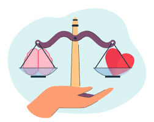
Habilidades emocionales
En los últimos años, la inteligencia emocional se ha convertido en una habilidad cada vez más valorada en el ámbito laboral. Para comprenderla mejor, podemos dividirla en cinco grandes áreas: conocer nuestras emociones, controlarlas, motivarnos, reconocer las emociones de los demás y manejar nuestras relaciones interpersonales.
La primera habilidad es el autoconocimiento emocional, es decir, la capacidad de identificar y entender nuestros propios sentimientos. Esto nos permite tomar decisiones más acertadas y vivir una vida más plena.
La segunda habilidad es el autocontrol emocional, que nos ayuda a gestionar nuestras emociones de manera saludable y a evitar que nos dominen.
La motivación es otra habilidad fundamental. Se trata de la capacidad de establecer metas y de perseverar para alcanzarlas, incluso cuando las cosas se ponen difíciles.
La empatía, por su parte, nos permite comprender los sentimientos de los demás y establecer relaciones más sólidas.
Finalmente, las habilidades interpersonales nos permiten comunicarnos de manera efectiva y trabajar en equipo.
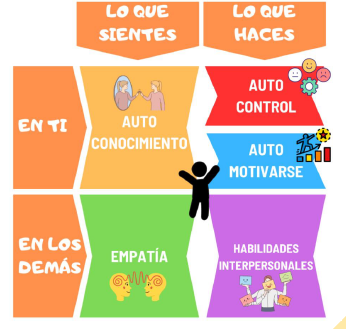
Autoconocimiento de las emociones
El autoconocimiento emocional es como un radar interno que nos permite detectar y comprender nuestras propias emociones. Al igual que un radar detecta objetos en el cielo, nuestro radar emocional nos ayuda a identificar los sentimientos que se agitan dentro de nosotros. Sin embargo, al igual que un radar puede ser más o menos preciso, nuestra capacidad para detectar y comprender nuestras emociones varía de una persona a otra.
Algunas personas tienen una gran conciencia emocional. Son como detectives experimentados que pueden identificar rápidamente lo que sienten y utilizar esta información para tomar decisiones más acertadas.
Otras personas, en cambio, tienen dificultades para reconocer y comprender sus emociones. Son como detectives novatos que se pierden en la escena del crimen emocional, incapaces de encontrar las pistas que les permitan entender lo que está sucediendo en su interior.
La falta de conciencia emocional puede tener consecuencias negativas en nuestras vidas. Por ejemplo, si no somos conscientes de nuestra tristeza, podemos terminar expresándola a través de la ira o la apatía. Del mismo modo, si no somos conscientes de nuestra ansiedad, podemos tomar decisiones impulsivas que luego lamentamos.
Concluyendo, el autoconocimiento emocional es una habilidad fundamental que nos permite vivir una vida más plena y satisfactoria.
| Al ser conscientes de nuestras emociones, podemos gestionarlas de manera más efectiva, mejorar nuestras relaciones con los demás y tomar decisiones más acertadas. |
Autocontrol de las emociones
El autocontrol emocional es la capacidad de gestionar nuestras emociones de manera consciente y efectiva. Es como tener un volante que nos permite dirigir nuestra vida emocional por el camino que deseamos. Al igual que un conductor experimentado sabe cómo manejar su vehículo en diferentes condiciones, una persona con un alto nivel de autocontrol sabe cómo navegar por las complejidades de sus emociones.
| Cuando desarrollamos el autocontrol emocional, somos capaces de responder a las situaciones de manera más calmada y racional, en lugar de dejarnos llevar por impulsos que pueden perjudicarnos. |
Por ejemplo, si alguien nos provoca, podemos elegir responder de manera asertiva en lugar de reaccionar con ira. Del mismo modo, si nos sentimos tristes o ansiosos, podemos encontrar formas saludables de expresar y procesar nuestras emociones.
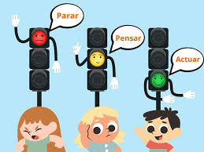
El autocontrol no significa suprimir nuestras emociones, sino más bien aprender a gestionarlas de manera adecuada. Al igual que un atleta entrena su cuerpo para lograr sus objetivos, nosotros podemos entrenar nuestra mente para desarrollar un mayor autocontrol emocional. Esto nos permitirá vivir una vida más plena y satisfactoria, llena de relaciones más saludables y mayores éxitos.
Debemos aprender a controlar las emociones que nos llevan a sentimientos negativos, como los siguientes, que sufrimos habitualmente:
- Controlar el enfado para evitar los ataques de ira que nos hagan actuar de una forma indebida.
- Controlar la preocupación para evitar una ansiedad paralizadora que nos impida actuar.
- Controlar la tristeza, para evitar que ésta sea prolongada y acabe convirtiéndose en una depresión que nos quite la alegría y la esperanza.
Controlar la ira y el enfado
El enfado es una emoción intensa que, si no se gestiona adecuadamente, puede tener consecuencias negativas en nuestra vida. A menudo, el enfado surge como respuesta a una sensación de amenaza o injusticia. Cuando nos sentimos amenazados, nuestro cerebro tiende a buscar justificaciones para nuestro enojo, lo que alimenta el fuego de la ira.
Para controlar el enfado, es fundamental actuar de manera proactiva. Una vez que notamos que estamos empezando a sentirnos molestos, podemos utilizar diversas estrategias para calmarnos. Por ejemplo, podemos identificar los pensamientos negativos que están alimentando nuestro enfado y reemplazarlos por pensamientos más positivos.
También podemos recurrir a distracciones, como salir a caminar o realizar alguna actividad que nos guste.

Al aprender a controlar nuestro enfado, podemos mejorar nuestras relaciones con los demás, reducir nuestro estrés y aumentar nuestra sensación de bienestar. Es importante recordar que el enfado es una emoción normal, pero la forma en que lo gestionamos puede marcar una gran diferencia en nuestra vida.
| Aunque pensemos que lo mejor es expresar siempre nuestras emociones, expresar el enfado de forma directa puede convertirse en un error si queremos que desaparezca. Primero, debemos intentar calmarnos, para poder hablar mediante la asertividad, con el fin de solucionar el conflicto. |
Controlar la preocupación y ansiedad
La preocupación es una respuesta natural ante situaciones que consideramos amenazantes o inciertas. Sin embargo, cuando la preocupación se vuelve excesiva y persistente, puede generar una gran angustia y afectar nuestra calidad de vida.
El ciclo de la preocupación comienza cuando nos centramos en pensamientos negativos y catastróficos sobre el futuro. Estos pensamientos pueden desencadenar una serie de reacciones físicas y emocionales, como tensión muscular, dificultad para concentrarse o insomnio. Si no hacemos nada para interrumpir este ciclo, la preocupación puede convertirse en ansiedad.
Para romper el ciclo de la preocupación, podemos utilizar diversas estrategias. En primer lugar, es importante reconocer los momentos en los que empezamos a preocuparnos y detener nuestros pensamientos negativos. A continuación, podemos practicar técnicas de relajación, como la respiración profunda o la visualización, para calmar nuestra mente y cuerpo.
Además, es útil cuestionar la validez de nuestros pensamientos negativos. ¿Hay alguna evidencia que apoye estas preocupaciones? ¿Qué puedo hacer para cambiar la situación? Al adoptar una perspectiva más realista y práctica, podemos reducir nuestra ansiedad y aumentar nuestra sensación de control.
Controlar la tristeza y la depresión
La tristeza es una emoción humana universal que todos experimentamos en algún momento. Sin embargo, cuando la tristeza se prolonga y se acompaña de otros síntomas como la falta de interés, la pérdida de energía o cambios en el apetito, puede convertirse en depresión.
Para manejar la tristeza, es importante permitirnos sentirla y reconocer que es una parte normal de la vida. Sin embargo, también es fundamental buscar estrategias para mejorar nuestro estado de ánimo. Una de las estrategias más efectivas es realizar actividades sociales. Pasar tiempo con amigos y familiares, practicar ejercicio o participar en actividades que nos gusten, puede ayudarnos a distraernos y a recuperar nuestra energía.
Además de las actividades sociales, es importante cambiar nuestra perspectiva ante la tristeza. En lugar de centrarnos en los aspectos negativos de una situación, podemos buscar los aspectos positivos y aprender de la experiencia.
Cuando la tristeza se convierte en depresión, es fundamental buscar ayuda profesional. Un terapeuta puede enseñarnos herramientas y estrategias para gestionar nuestros pensamientos y emociones negativas, y así recuperar nuestra calidad de vida.
(Auto)motivación
| La capacidad de motivarse a uno mismo es una habilidad esencial para alcanzar el éxito en cualquier ámbito de la vida. Es como tener un motor interno que nos impulsa a superar los obstáculos y a alcanzar nuestras metas. |
Al igual que un atleta entrena su cuerpo para mejorar su rendimiento, nosotros necesitamos desarrollar nuestra capacidad de motivarnos para superar los desafíos y alcanzar nuestros objetivos.
El optimismo juega un papel fundamental en la automotivación. Cuando somos optimistas, creemos en nuestra capacidad para superar los obstáculos y alcanzar nuestros objetivos. Esta actitud positiva nos proporciona la energía y la determinación necesarias para perseverar ante la adversidad.
Encontrar la motivación en lo que hacemos es otra clave para mantenernos comprometidos con nuestros objetivos. Cuando disfrutamos de lo que hacemos, estamos más dispuestos a esforzarnos y a superar los obstáculos. Además, el sentimiento de logro que experimentamos al alcanzar nuestras metas nos proporciona una gran satisfacción y nos motiva a seguir adelante.
Para desarrollar nuestra capacidad de automotivación, podemos seguir algunos consejos:
- Controlar los impulsos: Debemos aprender a controlar nuestros impulsos y a priorizar nuestras metas a largo plazo.
- Ser optimistas: Creer en nuestra capacidad para alcanzar nuestros objetivos nos ayudará a mantener la motivación.
- Disfrutar con lo que hacemos: Encontrar formas de disfrutar de nuestras tareas nos ayudará a mantenernos motivados.
| Al desarrollar nuestra capacidad de automotivación, estaremos mejor preparados para enfrentar los desafíos de la vida y alcanzar nuestros objetivos. |
Empatía
| La empatía emocional es la capacidad de entender lo que otra persona siente, incluso cuando no lo expresa con palabras. |
Es como tener un radar emocional que nos permite detectar los sentimientos de los demás a través de señales no verbales, como el tono de voz, la expresión facial o los gestos.
Para desarrollar esta habilidad, es fundamental estar en sintonía con nuestras propias emociones. Al comprender cómo nos sentimos en diferentes situaciones, podemos ponernos en el lugar de los demás y entender mejor lo que están experimentando.
Es importante recordar que, a menudo, las palabras no reflejan completamente lo que una persona siente. Muchas veces, las emociones se expresan de manera más clara a través del lenguaje corporal. De hecho, se estima que más del 90% de la comunicación emocional se transmite a través de señales no verbales. Esto significa que para entender verdaderamente a alguien, debemos prestar atención tanto a lo que dice como a cómo lo dice.
La empatía emocional es una habilidad valiosa que nos permite construir relaciones más profundas y significativas. Al ser capaces de comprender y compartir las emociones de los demás, podemos comunicarnos de manera más efectiva, resolver conflictos de manera más pacífica y crear conexiones más auténticas.
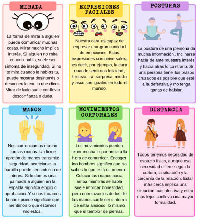
Junto a la comunicación verbal, resulta de gran relevancia la voz. No cuenta sólo lo que es dicho, sino la forma de decirlo (tiempo, ritmo, volumen, tono e inflexión), en la comprensión del mensaje. Por ejemplo, el tono de la voz podría expresar sarcasmo, enfado, afecto o confianza.
Habilidades emocionales interpersonales
| Las habilidades emocionales interpersonales son un conjunto de capacidades que nos permiten relacionarnos de manera efectiva con los demás. Estas habilidades van más allá de la simple comunicación verbal y nos permiten comprender los sentimientos, las necesidades y las motivaciones de las personas que nos rodean. |
Al desarrollar nuestras habilidades emocionales interpersonales, podemos mejorar nuestra capacidad para:
- Entender a los demás: La empatía nos permite ponernos en el lugar de otra persona y comprender sus sentimientos.
- Expresar nuestros sentimientos: La asertividad nos permite comunicar nuestras necesidades y opiniones de manera clara y respetuosa.
- Resolver conflictos: La negociación nos ayuda a encontrar soluciones que satisfagan a todas las partes involucradas.
- Trabajar en equipo: Las personas con altas habilidades emocionales interpersonales suelen ser buenos colaboradores y líderes.
- Construir relaciones: Estas habilidades nos permiten establecer conexiones significativas con los demás y construir relaciones sólidas y duraderas.
Las habilidades emocionales interpersonales son fundamentales para el éxito en todos los ámbitos de la vida. Al desarrollar estas habilidades, podemos mejorar nuestras relaciones personales, profesionales y sociales.
Inteligencia emocional en la práctica
La inteligencia emocional es una habilidad que va más allá de la teoría. Para ponerla en práctica, debemos aprender a gestionar nuestras emociones y a comunicarnos de manera efectiva. Esto implica:
- Calmarse antes de reaccionar: Cuando nos sentimos abrumados por una emoción, es importante tomar un momento para respirar y tranquilizarnos antes de decir o hacer algo de lo que podamos arrepentirnos.
- Evitar los pensamientos negativos: Estos pensamientos solo empeoran las cosas y dificultan encontrar una solución. En lugar de centrarnos en lo negativo, debemos buscar soluciones y enfoques más constructivos.
- Escuchar activamente: Prestar atención a lo que la otra persona dice sin interrumpir y mostrando interés genuino es fundamental para una comunicación efectiva.
- Expresar nuestras opiniones de manera asertiva: Esto significa comunicar nuestros sentimientos y necesidades de manera clara y respetuosa, sin culpar ni atacar a la otra persona.
- Hacer críticas constructivas: Cuando sea necesario hacer una crítica, es importante hacerlo de manera específica y enfocada en el comportamiento, no en la persona.
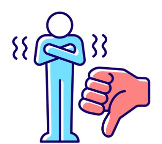
Al desarrollar estas habilidades, podemos mejorar nuestras relaciones personales y profesionales, resolver conflictos de manera más efectiva y vivir una vida más plena y satisfactoria.
SDA 2. Creatividad sin límites
La chispa de la creatividad: ¡Enciéndela!
¿Cuántas veces hemos escuchado la frase "no se me ocurre nada" en un salón de clases? Parece que la creatividad, esa habilidad para generar ideas nuevas y originales, es algo que se nos escapa a muchos. Pero, ¿realmente somos tan poco creativos o simplemente no sabemos cómo estimular nuestra imaginación?
¿Qué es la creatividad?
| La creatividad es como un músculo: se puede entrenar y fortalecer. Es la capacidad de mirar las cosas desde ángulos distintos, de conectar ideas aparentemente inconexas y de encontrar soluciones innovadoras a los problemas. En pocas palabras, es la habilidad de pensar fuera de la caja. |
El proceso creativo: un viaje en varias etapas
La creatividad no es un acto mágico, sino un proceso que se desarrolla en varias etapas:
- Inspiración: Es el momento de encender la bombilla. Se trata de buscar información, investigar, reflexionar y combinar ideas. La clave aquí es generar muchas ideas, sin importar lo descabelladas que puedan parecer al principio.
- Incubación: Una vez que tenemos un montón de ideas, es hora de dejar que nuestro cerebro las procese a fondo. En esta etapa, puede que sintamos que estamos estancados, pero es importante no desesperar y darle tiempo a nuestro cerebro para hacer su magia.
- Iluminación: ¡Eureka! Ese momento en el que la solución al problema se nos revela de repente. A menudo, ocurre cuando menos lo esperamos, por ejemplo, mientras estamos dando un paseo o tomando una ducha.
- Evaluación: Es hora de poner los pies en la tierra. En esta etapa, analizamos nuestras ideas y determinamos cuáles son viables y cuáles no.
¿Qué nos impide ser más originales?
A pesar de que todos tenemos el potencial de ser creativos, a veces nos encontramos con obstáculos que nos impiden dar rienda suelta a nuestra imaginación. Estos bloqueos pueden ser de varios tipos:
- Bloqueos emocionales: El miedo al fracaso, la falta de confianza en nosotros mismos o la preocupación por lo que pensarán los demás pueden limitarnos.
- Bloqueos lógicos: A veces, nos aferramos tanto a la lógica y a la razón que nos olvidamos de que existen otras formas de pensar.
- Bloqueos culturales: Las normas sociales y las expectativas de los demás pueden influir en nuestra forma de pensar y actuar, limitando nuestra creatividad.
¿Cómo podemos potenciar nuestra creatividad?
- Práctica la curiosidad: Observa el mundo con ojos nuevos y hazte preguntas constantemente.
- Explora diferentes perspectivas: Ponte en el lugar de otras personas y trata de entender sus puntos de vista.
- No tengas miedo a equivocarte: Los errores son oportunidades para aprender y crecer.
- Juega y experimenta: La creatividad se alimenta de la diversión y la experimentación.
- Rodéate de personas creativas: La inspiración puede surgir de las personas que nos rodean.
El fomento de la creatividad
Aspectos clave para desarrollar la creatividad
La frase "no se me ocurre nada" es muy común. Pero, ¿qué significa realmente? ¿Es que no tenemos ideas o simplemente no las estamos buscando?
Para ser más creativos, necesitamos más que solo inspiración. Hay una serie de actitudes y habilidades que podemos cultivar. Estas actitudes son como ingredientes esenciales para encender la chispa de la creatividad.
- Actitud de buscar nuevas soluciones: Cuando enfrentamos un problema, la primera reacción suele ser buscar una solución rápida. Pero, ¿y si nos detenemos un momento a pensar? ¿Hay otras formas de abordar el problema? La creatividad implica investigar, reflexionar y buscar nuevas perspectivas.
- Motivación para superar retos: Las personas creativas ven los desafíos como oportunidades para crecer. No se desaniman fácilmente ante los obstáculos, sino que buscan la manera de superarlos. Esta actitud de querer mejorar constantemente es fundamental para desarrollar la creatividad.
- Confianza en uno mismo y actitud positiva: La confianza en nuestras propias ideas es esencial para ser creativos. A menudo, las personas con ideas innovadoras son criticadas al principio. Sin embargo, si creemos en nosotros mismos y mantenemos una actitud positiva, podremos superar estos obstáculos.
- No pensar en lo que los demás dicen o piensan: A lo largo de la historia, muchos genios han sido incomprendidos en su tiempo. Esto se debe a que las ideas nuevas a menudo desafían lo establecido. Si queremos ser creativos, debemos estar dispuestos a pensar de manera diferente y a no dejarnos influenciar por las opiniones de los demás.
- Inconformismo y búsqueda de mejoras continuas: Las personas creativas no se conforman con lo que ya han conseguido. Siempre están buscando nuevas formas de hacer las cosas y de mejorar. Esta actitud de mejora continua es lo que nos impulsa a seguir creciendo y aprendiendo.
¿Cómo podemos fomentar la creatividad?
- Sal de la rutina: Lee libros nuevos, ve programas de televisión diferentes, viaja a nuevos lugares, prueba nuevas actividades.
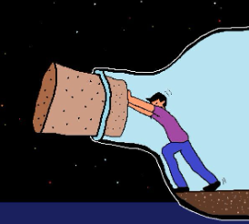
- Piensa en nuevas ideas: Busca soluciones nuevas a los problemas que tienes en tu día a día, en el trabajo, en familia, en amigos.
- Habla de tus ocurrencias con tus amigos: Comparte tus ideas con tus amigos, ya que puede que te ayuden a darle un nuevo enfoque y a llegar a soluciones más creativas.
- Haz ejercicio: Hacer ejercicio es bueno para el cuerpo, y para la mente. Hay cientos de motivos por los que es importante realizarlo, el desarrollo de la creatividad es uno de ellos.
- Pregunta, pregunta y pregunta: Siempre tengan una duda, pregunta siempre algo, encuéntrate con una persona que creas que puede enseñarte algo.
- Lee, lee y lee: Si tienes un problema, cuestión o quieres solucionar algo, lee. Los escritos llevan existiendo desde hace 5.000 años, así que si tienes un problema sobre cualquier cosa, te aseguro que alguien ya ha escrito sobre ello. Lee, te ampliará la mente y te ayudará a fomentar tu creatividad.
Innovación
De la idea a la realidad
A menudo, las palabras creatividad e innovación se usan indistintamente, pero en realidad hacen referencia a conceptos distintos aunque relacionados.
La creatividad es la capacidad de generar ideas nuevas y originales. Es como la semilla de una planta, el primer paso para crear algo nuevo. Por ejemplo, cuando Steve Jobs concibió la idea de conectar un teléfono móvil a internet, estuvo siendo muy creativo.
La innovación es llevar la creatividad a la práctica. Es cuando una idea se convierte en un producto o servicio real que mejora nuestras vidas. El iPhone de 2007 es un claro ejemplo de innovación: transformó la manera en que nos comunicamos y accedemos a la información.
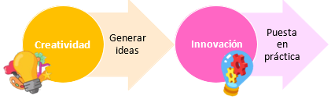
Tipos de innovación
Existen diferentes tipos de innovación. Aunque podemos hacer muchas clasificaciones, vamos a distinguir dos tipos principales:
- Innovación incremental: Son pequeñas mejoras a productos existentes, como añadir nuevas funciones o características. Por ejemplo, cuando a los teléfonos se les incorporó una cámara. Aunque son cambios pequeños, pueden mejorar significativamente un producto.
- Innovación radical: Es la introducción de un producto completamente nuevo que cambia la forma en que hacemos las cosas. Por ejemplo, la creación de internet revolucionó la manera en que accedemos a la información.
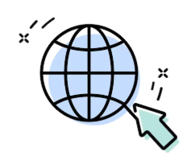
La clave de la innovación: detectar necesidades
La innovación no se trata de crear nuevos productos simplemente por hacerlo, sino de satisfacer necesidades. Así que, si queremos innovar, debemos preguntarnos: ¿qué necesita mejorar? ¿qué problemas podemos solucionar?
Por ejemplo, los primeros teléfonos móviles de los años 90 eran muy grandes y no cabían en los bolsillos, por lo que pocas personas los tenían. Más adelante, a inicios del 2000, las compañías competían por hacer teléfonos más pequeños. De esta manera, la necesidad se centró en hacer un móvil más pequeño. Durante los primeros años del nuevo siglo se ponía el énfasis en smartphones cada vez más pequeños y ligeros.
Sin embargo, el mundo cambió. A partir de 2010, los usuarios empezaron a consumir todo tipo de contenidos multimedia (videos, redes sociales, etc.) y deseaban pantallas de móvil más grandes y con mejor calidad para poder disfrutar de todo este contenido.
En 2011, Samsung detectó que los consumidores deseaban pantallas de móvil más grandes y creó el Galaxy II con 5,3 pulgadas, mientras que Apple insistía en mantener las pantallas más pequeñas. Apple se equivocaba, y Samsung arrasó en ventas.
Técnicas para encender la chispa de la creatividad
A todos nos ha pasado: en algún momento, las ideas se nos agotan y sentimos que estamos en un bloqueo creativo. Para superar estos obstáculos y fomentar la creatividad en equipo, se han desarrollado diversas técnicas que nos permiten generar un gran número de ideas en poco tiempo. Veamos algunas de las más utilizadas:
Brainstorming (lluvia de ideas)
La lluvia de ideas es una técnica sencilla pero muy efectiva para generar un gran número de ideas en poco tiempo. Consiste en reunir a un grupo de personas y pedirles que expongan todas las ideas que se les ocurran sobre un tema determinado, sin importar lo locas o poco prácticas que puedan parecer.
¿Cómo funciona?
- Sin juicios: Durante la sesión de lluvia de ideas, todas las opiniones son bienvenidas. No se critica ninguna idea, por descabellada que parezca. La idea es generar la mayor cantidad de ideas posible sin censura.
- Fluidez: Se anima a los participantes a que expresen sus ideas de forma rápida y sin interrupciones. Cuanto más fluida sea la generación de ideas, más creativa será la sesión.
- Cantidad sobre calidad: En esta etapa, lo importante es la cantidad de ideas, no la calidad. Cuantos más puntos de vista se expongan, más posibilidades habrá de encontrar una solución innovadora.
Una vez finalizada la sesión de lluvia de ideas, se procede a evaluar las ideas y seleccionar las más prometedoras.
SCAMPER
SCAMPER es una técnica que nos ayuda a modificar un producto o servicio existente para generar nuevas ideas. Se basa en una serie de preguntas que nos invitan a explorar diferentes perspectivas y a pensar de manera innovadora.
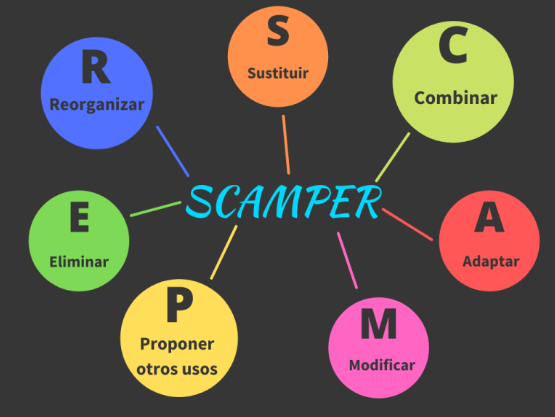
¿Qué significa SCAMPER? Es un acrónimo que representa las siguientes palabras en inglés:
- Substitute: Sustituir (¿Qué podríamos reemplazar?)
- Combine: Combinar (¿Qué podríamos unir?)
- Adapt: Adaptar (¿Qué podríamos añadir?)
- Modify: Modificar (¿Qué podríamos cambiar?)
- Put to another use: Darle otro uso (¿Para qué más podríamos utilizarlo?)
- Eliminate: Eliminar (¿Qué podríamos quitar?)
- Reverse: Invertir (¿Qué podríamos hacer al revés?)
¿Cómo funciona?
Se aplica cada una de estas preguntas a un producto o servicio específico para generar nuevas ideas. Por ejemplo, si queremos mejorar un cepillo de dientes, podríamos preguntarnos:
- Sustituir: ¿Podríamos sustituir las cerdas por filamentos más suaves?
- Combinar: ¿Podríamos combinar el cepillo de dientes con un hilo dental?
- Adaptar: ¿Podríamos añadir un temporizador para controlar el tiempo de cepillado?
- Modificar: ¿Podríamos cambiar la forma del mango para hacerlo más ergonómico?
- Posponer o darle otro uso: ¿Podríamos utilizar el cepillo de dientes como un pequeño raspador para la lengua?
- Eliminar: ¿Podríamos eliminar las cerdas y crear un cepillo de dientes ultrasónico?
- Reordenar o invertir: ¿Podríamos hacer un cepillo de dientes que se cepille solo?
Al aplicar esta técnica, se abren nuevas posibilidades y se generan ideas innovadoras que pueden llevar a la creación de productos y servicios completamente nuevos.
3. Método 635: Un reloj contra el bloqueo mental
El método 635 es una dinámica de grupo diseñada para generar una gran cantidad de ideas en poco tiempo. Funciona de la siguiente manera:
- Planteamiento del problema: Se presenta un problema o desafío al grupo.
- Generación individual de ideas: Cada miembro del equipo tiene 5 minutos para escribir 3 ideas diferentes para solucionar el problema.
- Intercambio y enriquecimiento: Una vez que todos han escrito sus ideas, pasan su hoja al compañero de la derecha. Este lee las ideas de su compañero y añade 3 nuevas, inspirándose en las anteriores pero sin copiarlas.
- Repetición: El proceso se repite varias veces, hasta que cada participante haya recibido y enriquecido las ideas de todos los demás.
Al final de la dinámica, cada participante habrá generado 18 ideas nuevas basadas en las ideas de sus compañeros, y el grupo en conjunto habrá obtenido una gran cantidad de propuestas innovadoras.
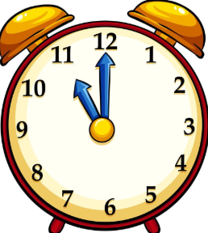
4x4x4: Ideas en cadena
Esta técnica es similar al método 635, pero se enfoca en la colaboración en grupos más pequeños. Funciona de la siguiente manera:
- Generación individual: Cada miembro del equipo escribe 4 ideas sobre un tema determinado.
- Combinación de ideas: Los miembros se agrupan de a dos y combinan sus ideas, seleccionando las 4 más prometedoras.
- Ampliación del grupo: Los grupos de dos se unen formando grupos de cuatro, y repiten el proceso de selección de las mejores ideas.
Al final, el grupo entero habrá seleccionado un conjunto de ideas innovadoras y originales.
Pensamiento lateral: Rompe los esquemas
El pensamiento lateral es una técnica que nos invita a pensar de manera diferente y a encontrar soluciones creativas a problemas. En lugar de seguir los caminos más obvios, el pensamiento lateral nos anima a explorar nuevas perspectivas y a desafiar nuestras suposiciones.
Un ejemplo clásico de pensamiento lateral es la creación de eBay. En lugar de seguir los modelos de comercio tradicionales, eBay permitió a cualquier persona vender productos en línea, creando así un nuevo mercado global.
¿Por qué es importante el pensamiento lateral?
- Supera bloqueos mentales: Nos ayuda a salir de nuestra zona de confort y a encontrar soluciones innovadoras.
- Fomenta la creatividad: Estimula nuestra capacidad para generar ideas originales y diferentes.
- Adaptación al cambio: Nos permite enfrentar los desafíos del futuro con mayor flexibilidad.
Técnicas para evaluar tus ideas
¡Ponlas a prueba!
Una vez que hemos generado una gran cantidad de ideas, es momento de evaluarlas y seleccionar las más prometedoras. A continuación, te presentamos algunas técnicas que te ayudarán en este proceso:
5.1. Evaluación PNI: Positivo, Negativo, Interesante
Esta técnica es una herramienta sencilla pero efectiva para evaluar tus ideas. Consiste en dividir una hoja en tres columnas:
- Positivo: Aquí anotarás todos los aspectos positivos de la idea, los beneficios que aportaría y las razones por las que podría funcionar.
- Negativo: En esta columna, identificarás los posibles inconvenientes, riesgos y obstáculos que podrían impedir que la idea se lleve a cabo.
- Interesante: Aquí anotarás aquellos aspectos que te parecen especialmente llamativos o que podrían dar lugar a nuevas ideas.
Una vez que hayas completado la tabla para cada idea, podrás compararlas y seleccionar aquellas que presenten un mayor número de aspectos positivos e interesantes, y menos negativos.
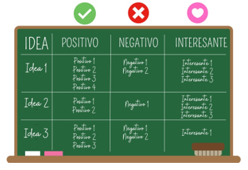
Método de los 6 sombreros para pensar
Esta técnica, creada por Edward de Bono, es una herramienta muy útil para analizar un problema desde múltiples perspectivas. Cada "sombrero" representa un punto de vista diferente:
- Blanco: Objetivo y neutral. Se centra en los hechos y los datos disponibles.
- Negro: Pesimista. Busca los aspectos negativos y los posibles problemas.
- Rojo: Emocional. Expresa los sentimientos y las intuiciones.
- Amarillo: Optimista. Se enfoca en los aspectos positivos y las oportunidades.
- Verde: Creativo. Genera nuevas ideas y soluciones alternativas.
- Azul: Controlador. Organiza el pensamiento y toma decisiones.
Al asignar un sombrero a cada miembro del equipo, se fomenta un debate rico y constructivo, donde cada persona aporta su propia perspectiva.
Puntuación numérica
Esta técnica es más cuantitativa y consiste en asignar una puntuación a cada aspecto de la idea. Por ejemplo, puedes asignar un valor de 1 a 5 a cada aspecto, siendo 5 el valor máximo.
Una vez que hayas puntuado todos los aspectos de cada idea, puedes calcular una puntuación total para cada una y compararlas. La idea con la puntuación más alta será la ganadora.
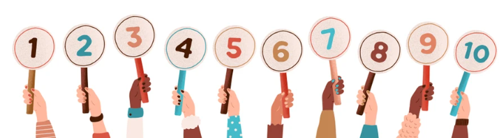
Técnicas para organizar ideas
¡Visualiza tu pensamiento!
Dentro del amplio mundo de las técnicas para organizar ideas, una de las más destacadas y visualmente atractivas es el pensamiento visual o visual thinking. Esta herramienta nos permite organizar conceptos o contenidos a través de dibujos sencillos y textos cortos. Es decir, el pensamiento visual es como crear un mapa conceptual que nos ayuda a ordenar visualmente nuestras ideas o aspectos de cualquier tema que queramos estudiar o comprender.
¿Por qué es tan útil el pensamiento visual para los estudiantes?
Los beneficios del pensamiento visual son múltiples y muy valiosos para los estudiantes. Veamos algunos de ellos:
- Facilita la comprensión: Al visualizar la información, el cerebro puede conectar ideas de una manera más intuitiva, facilitando la comprensión de conceptos complejos.
- Estimula la investigación autónoma: Al no necesitar dar todos los detalles en un esquema visual, el estudiante se ve obligado a reflexionar sobre lo que es más importante, fomentando así su capacidad de investigación.
- Mejora la estructura del pensamiento: Al organizar la información de manera gráfica, se potencia la capacidad de generar y estructurar el conocimiento, además de desarrollar la síntesis.
- Favorece habilidades de pensamiento: El pensamiento visual no solo ayuda a comprender la información, sino que también desarrolla habilidades como la expresión de ideas a través de gráficos y la capacidad de síntesis.
- Proporciona alternativas de expresión: Además de las palabras, el pensamiento visual ofrece a los estudiantes una nueva herramienta para expresar lo que saben. Esto estimula la creatividad y les permite conectar con la información de una manera más personal.
Un ejemplo práctico: Los 10 beneficios de pensamiento virtual
Imagina que queremos mostrar los beneficios del pensamiento visual de una forma atractiva y fácil de recordar. Podríamos crear un esquema visual que represente estos beneficios. Por ejemplo, podríamos encontrar 10 principales beneficios, visualizarlos y posteriormente llegar a un dibujo como el siguiente (el dibujo no es mío, te dejo aquí la fuente):
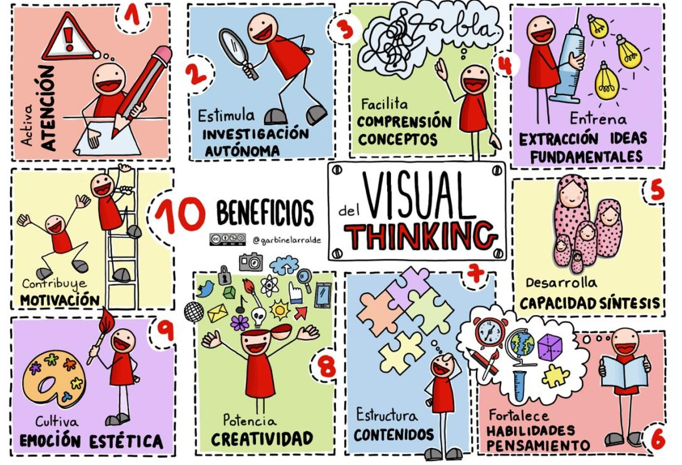
Como puedes ver, este esquema visual es muy sencillo pero transmite una gran cantidad de información de manera clara y concisa. Al utilizar colores, imágenes y palabras clave, el cerebro puede procesar la información de forma más rápida y eficiente.
| Lo interesante de este método es que las ideas finales, los resultados, pueden ser muy diferentes entre estudiantes. Si lo preguntas a diez, tal vez hubieras obtenido 8, 12 o 15. Seguro que tu dibujo sería muy diferente, pero no importa. La clave es que reflexiones hasta llegar a él y sobre todo que te ayude a conocer los muchos beneficios que tiene. |
Toma de decisiones
Un camino hacia la solución
Tomar decisiones es el proceso mediante el cual escogemos una alternativa entre varias opciones existentes. Tomar una decisión no es algo sencillo, y para que se pueda llevar a cabo este proceso, es necesario tener una serie de opciones y conocer al máximo todo lo que entraña cada alternativa.
Los pasos a seguir a la hora de tomar una decisión son los siguientes:
- Identificar y analizar el problema: Tener claro cuál es el problema con el que nos encontramos y analizarlo de manera correcta es un primer paso imprescindible. Muchas veces las personas toman decisiones erróneas porque hacen un mal análisis de cuál es realmente su problema. Al fin y al cabo, "Un problema bien planteado es un problema prácticamente resuelto", decía Einstein.
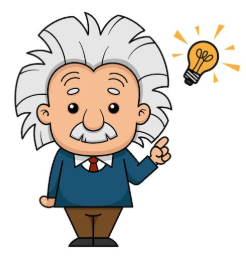
- Buscar distintas soluciones: Una vez identificado el problema debemos valorar las diferentes soluciones que tenemos para tratar de solventarlo. Aquí podemos utilizar algunas de las técnicas de generación de ideas que hemos aprendido en este tema.
- Evaluar las alternativas: Una vez que hemos detectado diferentes soluciones posibles, hay que valorar las diferentes alternativas. Podemos utilizar algunos de las técnicas de evaluación de ideas que hemos visto en el tema.
- Seleccionar una alternativa y llevarla a cabo: Una vez que hemos decidido que alternativa es la mejor, llega el momento de ponerla en función.
- Evaluar los resultados de la decisión tomada: El último paso es evaluar el resultado de la decisión que hemos tomado, ya que, si no es el esperado, habrá que volver a revisar a cabo todos los pasos anteriores para encontrar una mejor decisión.
Es interesante comprobar que en ocasiones tomamos decisiones que nos permiten conseguir otros objetivos, pero no solucionan el problema que teníamos al principio.
SDA 3. Descubre tu potencial
El perfil de la persona emprendedora
Habilidades personales
| Las habilidades personales son aquellas que nos permiten desarrollar al máximo nuestro potencial para realizar diversas actividades y tomar decisiones efectivas que nos ayuden a alcanzar nuestras metas. |
Existen muchas habilidades personales, y aunque podríamos mencionar muchas más, aquí destacamos algunas claves:
1. Autoconocimiento: Comprenderse a uno mismo significa conocer nuestra esencia y carácter. Esto nos ayuda a identificar tanto nuestras fortalezas como nuestras debilidades, nuestras actitudes hacia la vida, nuestros principios y valores, entre otros aspectos. Para poder mejorar, primero debemos conocernos, pues esto nos orientará hacia lo que queremos lograr y en qué áreas podemos progresar.
2. Autoestima y autoconfianza: La autoestima se refiere a la valoración, ya sea positiva o negativa, que una persona tiene sobre sí misma. La autoconfianza, por su parte, es la creencia en nuestras propias capacidades y habilidades. Desarrollar una buena autoestima y confianza en nosotros mismos es esencial para poder enfrentar y superar los retos que se presenten.
3. Pensamiento crítico: Consiste en la capacidad para analizar los hechos y razonamientos de manera objetiva, sin dejarnos influir por las opiniones de los demás. Nos permite formar nuestras propias conclusiones y mantener un criterio propio, sin aceptar ciegamente lo que otros nos imponen.
4. Perseverancia: Es la habilidad de mantener el esfuerzo constante hacia un objetivo, sin rendirse, incluso cuando enfrentamos obstáculos o situaciones difíciles. Esta cualidad nos ayuda a no darnos por vencidos y a seguir adelante en la realización de nuestros proyectos y aspiraciones.
5. Gestión del tiempo: Consiste en la capacidad de organizar nuestro tiempo de manera que podamos realizar todas las actividades necesarias para alcanzar nuestras metas. Esta habilidad nos ayuda a aumentar nuestra productividad y a establecer prioridades en nuestro día a día, de modo que podamos reservar tiempo tanto para el descanso como para nuestra vida personal.
6. Resiliencia: Es la capacidad de enfrentarse a desafíos y soportar situaciones difíciles, adaptándose y transformando esos momentos en oportunidades de crecimiento personal. Desarrollar resiliencia nos permite levantarnos después de cada caída, lo cual es esencial para perseguir y lograr nuestras metas.
7. Actitud positiva: Se trata de una forma de percibir las situaciones desde un enfoque optimista y constructivo. Las personas con una actitud positiva tienden a recuperarse rápidamente de los fracasos y se concentran en cómo pueden resolver los problemas en lugar de preocuparse demasiado por lo que podría salir mal.
8. Proactividad: Esta habilidad implica asumir la iniciativa. Significa entender que somos responsables de nuestra vida, y que nuestras acciones son las que determinan nuestro camino, en lugar de depender de las circunstancias. Las personas proactivas no se quedan esperando a que las cosas ocurran; en su lugar, toman las riendas y provocan que sucedan.
Pero, para llegar a lo más alto, no basta con ser bueno en lo que haces; también hay que saber llevarse bien con los demás.
En la siguiente situación de aprendizaje veremos en profundidad la otra parte del perfil de la persona emprendedora: las habilidades sociales.
Autoconocimiento
Dentro de cada uno de nosotros, podemos encontrar tres versiones de nuestro ser:
- La persona que creemos ser (autoconcepto).
- La persona que los demás ven en nosotros (reflejo).
- La persona que realmente somos (autoconocimiento).
La primera versión, o la que creemos que somos, a veces no refleja la realidad, y en ocasiones estamos confundidos sobre quiénes somos realmente. Muchas veces, valoramos nuestras cualidades y las opiniones de nuestro entorno sin saber nuestro verdadero valor. Somos mucho más que lo que pensamos de nosotros mismos.
La segunda versión es la que los demás perciben de nosotros, aunque no siempre es precisa. ¿Cuántas veces nos han comentado que parecemos ser de cierta manera? Muchas veces, esas percepciones reflejan las propias expectativas de los otros y no nuestra auténtica personalidad. Por ejemplo, alguien que constantemente se muestra fuerte puede en realidad ocultar sus propias inseguridades.
Para desarrollar al máximo nuestro potencial, necesitamos integrar estas tres versiones en una comprensión más profunda de quiénes realmente somos.
| El autoconocimiento es un proceso introspectivo que permite a la persona tomar conciencia de sí misma, entendiendo su personalidad, cualidades, defectos, valores, necesidades, intereses y creencias. |
¿Cómo empezar a conocernos?
Para conocernos mejor, debemos responder a la pregunta "¿Quién soy realmente?". Un buen inicio es plantearse preguntas sobre uno mismo:
A) ¿Cómo soy? (Mi personalidad)
El primer paso es identificar nuestra personalidad.
| La personalidad se compone de rasgos y cualidades que moldean nuestra forma de ser y de relacionarnos con el mundo. |
Los estudios han identificado cinco grandes rasgos de la personalidad, y cada persona puede tener niveles altos o bajos en cada uno:
1. Apertura a la experiencia: Este rasgo se relaciona con la disposición a probar cosas nuevas y a explorar ideas distintas. Las personas con alta apertura disfrutan de nuevas experiencias y tienden a ser creativas e imaginativas. Por el contrario, quienes tienen baja apertura prefieren la rutina y lo conocido.
2. Responsabilidad: Este rasgo refleja la orientación hacia el logro de objetivos. Las personas responsables son organizadas y planifican con antelación, mientras que quienes tienen baja responsabilidad son más impulsivos y pueden posponer tareas.
3. Extraversión: Es la capacidad de interactuar con los demás. Las personas extrovertidas buscan la interacción social, mientras que las introvertidas prefieren la tranquilidad y el tiempo a solas.
4. Amabilidad: Mide el nivel de empatía, respeto y tolerancia de una persona. Las personas con alta amabilidad tienden a confiar en los demás y a actuar con humildad, mientras que quienes tienen baja amabilidad pueden ser más críticas o centrarse en sus propios intereses.
5. Neuroticismo: Hace referencia a la estabilidad emocional. Las personas con bajo neuroticismo son emocionalmente estables y positivas, mientras que las personas con alto neuroticismo pueden experimentar cambios de humor y sentir ansiedad o irritabilidad.
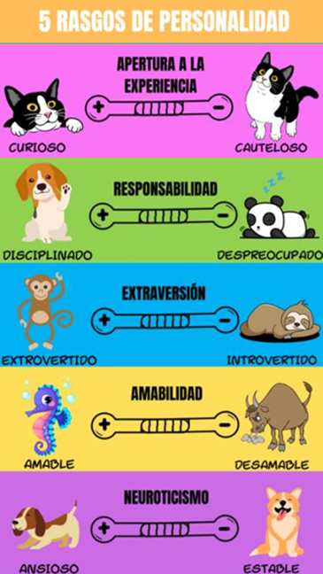
B) ¿Cómo me ven los demás? (El reflejo)
| Para conocernos completamente, no basta con ver nuestro interior (autoconcepto); es igualmente importante observar cómo nos perciben los demás (reflejo). |
Esto nos puede dar una perspectiva diferente sobre aspectos de nuestra personalidad que no habíamos notado.
Pedir a amigos, familiares o colegas que compartan cómo nos ven puede darnos una visión externa. Es posible que ellos perciban características que nosotros mismos no habíamos identificado. Por ejemplo, un amigo puede señalar que tenemos facilidad para escuchar, aunque no nos veamos de esa forma.
C) ¿Por qué somos así? Valores, creencias y comportamiento
• Los valores
Son todas aquellas cosas que consideramos esenciales, como la sinceridad, el respeto, la humildad, la gratitud, la bondad, la lealtad, la familia y otros similares.
• Las creencias
Son ideas que tenemos sobre ciertas cuestiones y suelen estar ligadas a nuestros valores. Por ejemplo, alguien puede tener la creencia de que “siempre hay que ayudar a los amigos”, lo cual probablemente viene de un gran valor que le da a la amistad.
| Podemos afirmar que nuestras creencias están conectadas con nuestros valores y ambos influyen en cómo nos comportamos. |
| Para conocernos a fondo, es crucial revisar nuestras creencias y valores. Es posible que valores inculcados en nuestra infancia sigan afectándonos, y al entenderlos, podemos ajustar aquellos que ya no se alinean con nuestra visión actual. |
E) ¿Qué soy capaz de hacer? Mis habilidades
El autoconocimiento no se limita a los rasgos de personalidad, sino que también implica reconocer cuáles son nuestras destrezas. Todos tenemos talentos particulares en los que destacamos (¡tú también!). Quizá tus habilidades no siempre sean académicas, sino en otros aspectos que son igual de valiosos.
Por ejemplo, una compañera podría pensar que no es buena en inglés porque ha tenido dificultades en el pasado, pero podría sorprenderse si lo intentara de nuevo, descubriendo que con práctica puede hablar y entender mucho mejor de lo que pensaba.
Conocer nuestras habilidades nos permite identificar fortalezas que nos ayudarán a alcanzar nuestros objetivos y a superar nuestras limitaciones.
F) ¿Qué es lo que me gusta?
Muchas veces decimos: “No me gusta nada”, pero si reflexionamos, seguramente haya actividades que disfrutemos. Para entender qué cosas nos gustan, podemos preguntarnos qué preferimos hacer en nuestro tiempo libre o qué actividades nos entusiasman. Esto nos da pistas sobre nuestras habilidades y sobre actividades que nos ayudan a relajarnos o a encontrar satisfacción.
Identificar lo que nos gusta está muy relacionado con nuestras habilidades, y al saberlo, es más fácil desarrollar áreas en las que somos buenos. Por ejemplo, si disfrutamos trabajar con computadoras, podemos enfocarnos en desarrollar habilidades de programación o diseño.
Además, conocer nuestros gustos nos ayuda a tener claridad en nuestras metas, dándonos una dirección para orientar nuestro desarrollo personal y profesional.
G) ¿Qué es lo que quiero? Mis prioridades y metas
- Mis prioridades indican lo que es más relevante en mi vida, aquello que está por encima de otras cosas. Es útil establecer prioridades en diversas áreas como la familia, los amigos, los estudios o el trabajo.
- Las metas son objetivos específicos que deseamos alcanzar, teniendo en cuenta nuestras prioridades. Para definir una meta, es útil saber en qué queremos enfocarnos y cómo lo lograremos. Ejemplos de metas pueden ser: “Quiero ayudar a mi familia económicamente” o “Quiero graduarme en derecho para convertirme en abogado”.
Es importante que nuestras metas incluyan tanto resultados inmediatos como objetivos a largo plazo, ya que esto nos da una visión clara y nos motiva a avanzar.
Entonces, ¿Por qué es importante el autoconocimiento?
| El autoconocimiento es fundamental porque nos ayuda a entender quiénes somos realmente y a desarrollarnos plenamente. Nos permite identificar áreas de mejora y comprender nuestros valores y habilidades para alcanzar nuestros objetivos. |
Autoconfianza y autoestima
Todos tenemos una percepción sobre quiénes somos, que incluye aspectos como el físico, la inteligencia y la personalidad. A este conjunto de ideas se le llama autoconcepto. Cuando nos sentimos bien con nuestra autoimagen, tenemos una autoestima alta; cuando no, la autoestima baja.
| La autoestima es la valoración, ya sea positiva o negativa, que hacemos de nosotros mismos basada en nuestros pensamientos, sentimientos y experiencias. Esta valoración influye en cómo nos vemos y cómo nos sentimos. |
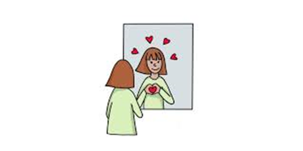
| Además de la autoestima, también es crucial desarrollar la autoconfianza, es decir, la capacidad de creer en nuestras propias habilidades y en nuestra capacidad de alcanzar nuestros objetivos. |
La falta de autoestima y autoconfianza puede hacernos dudar de nosotros mismos y de nuestras capacidades, llevándonos a evitar situaciones donde podríamos triunfar si creyéramos en nosotros.
¿Cómo podemos mejorar nuestra autoestima y autoconfianza?
1. Identifica la raíz de tu baja autoestima: La mayoría de las inseguridades provienen de malas experiencias pasadas. Pregúntate sobre el origen de tus miedos y racionaliza las situaciones para entender que no te definirán.
2. Reconoce tus fortalezas: Enfócate en tus puntos fuertes y busca mejorar tus debilidades, pero sin obsesionarte. Ser consciente de tus habilidades te permite reforzarlas.
3. Perdónate: Todos cometemos errores. En lugar de ser duros con nosotros mismos, es importante aceptar los errores como parte del proceso humano.
4. Enfócate en lo positivo: Evita centrarte solo en aspectos negativos de tus experiencias. Observa todas las cosas positivas a tu alrededor y aprende a valorarlas.
5. Haz ejercicio: La actividad física puede mejorar tanto la autoestima como la autoconfianza, ya que libera endorfinas y reduce el estrés.
6. No te compares con los demás: Compararte con otros no es justo ni saludable. Recuerda que cada persona tiene su propio camino y sus propias metas.
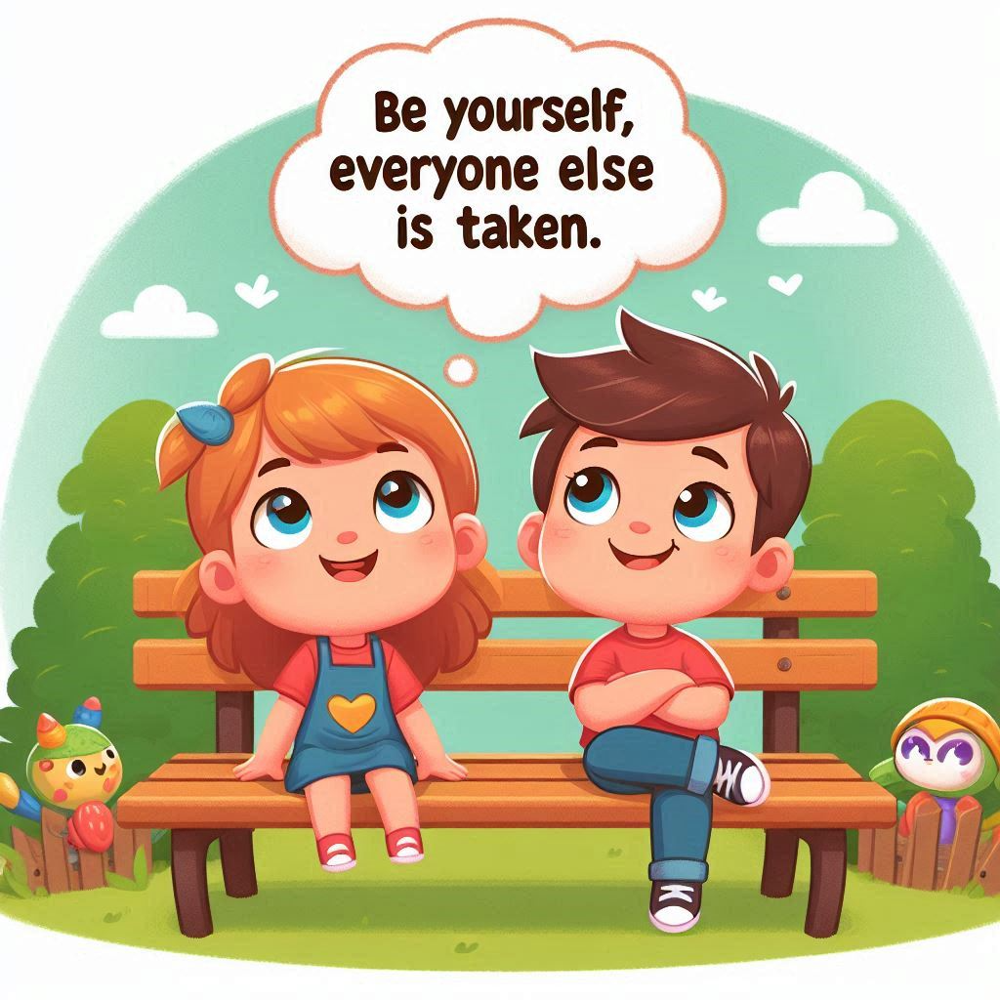
7. Actúa: Muchas veces, el principal obstáculo es el miedo a fracasar. Haz un plan, toma acción y evalúa los resultados. La autoconfianza se construye al enfrentar desafíos y aprender de ellos.
Entonces, ¿Por qué es importante la autoestima y la autoconfianza?
La autoestima y la autoconfianza son esenciales para que podamos desarrollar nuestro potencial. Si confiamos en nosotros mismos y nos valoramos, estaremos más preparados para enfrentar los desafíos y perseguir nuestros objetivos con determinación.
Perseverancia
| La perseverancia es como el motor que nos impulsa a seguir adelante, incluso cuando las cosas se ponen difíciles. Es esa fuerza interior que nos permite mantenernos enfocados en nuestros objetivos y no rendirnos ante los obstáculos. |
¿Cómo podemos desarrollar la perseverancia?
1. Claridad en tus metas: Define de manera precisa qué quieres lograr. Se específico y realista. No te limites a deseos generales como "ser feliz", sino que establece objetivos concretos y medibles. Por ejemplo, en lugar de decir "quiero ser famoso", puedes decir "quiero participar en un programa de televisión".
2. Constancia en el esfuerzo: La perseverancia no es un sprint, es una maratón. Requiere esfuerzo constante y diario. Establece una rutina y comprométete a seguirla. No importa si no te apetece entrenar hoy, si tu objetivo es convertirte en un atleta profesional, debes entrenar todos los días.
3. Enfócate en el progreso: Celebra tus logros, por pequeños que sean. Reconocer tus avances te motivará a seguir adelante. Recuerda que cada paso que das te acerca a tu meta.
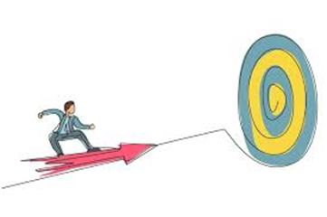
4. No te rindas: Los obstáculos son inevitables. Lo importante es cómo los enfrentas. Aprende de tus errores y sigue adelante. No te desanimes por los fracasos temporales.
5. Rodéate de personas positivas: Las personas que te apoyan y te animan pueden marcar una gran diferencia. Evita a aquellas que siembran dudas y negatividad.
¿Por qué es importante la perseverancia?
| La perseverancia es la llave que abre las puertas de nuestros sueños. Nos permite alcanzar nuestros objetivos, superar nuestros miedos y convertirnos en la mejor versión de nosotros mismos. Recuerda: ¡los sueños no se cumplen, se trabajan! |
"La perseverancia es el trabajo duro que haces después de cansarte del trabajo duro que ya hiciste" (Newt Gingrich).
Gestión del tiempo
DOMINA TU TIEMPO: La clave para alcanzar tus metas
¿Alguna vez has sentido que el tiempo se te escapa entre los dedos? No te preocupes, ¡a todos nos ha pasado! Pero la buena noticia es que podemos aprender a organizarnos mejor y aprovechar cada minuto.
¿Cómo puedes optimizar tu tiempo?
1. Prioriza tus tareas: Identifica lo más importante. Crea una lista de tareas y clasifícalas por urgencia e importancia. Imagina que tienes un examen y una fiesta. ¿Cuál es tu prioridad? Al igual que una buena bailarina, debes saber qué pasos dar primero.
2. Crea un horario realista: Asigna un tiempo específico a cada tarea. Sé realista y flexible. Si tienes un examen, dedica varias horas al estudio, pero también reserva tiempo para descansar y divertirte.
3. Establece rutinas: Tu cuerpo tiene ritmos naturales. Aprovecha los momentos en que estás más concentrado para realizar tareas que requieran mayor esfuerzo mental.
4. Organiza tu espacio: Un espacio de trabajo ordenado te ayudará a concentrarte. Asegúrate de tener todo lo que necesitas a mano.
5. Aprende a decir no: No puedes hacer todo. Prioriza tus tareas y aprende a rechazar compromisos que no sean esenciales.
6. Descansa: Tu cuerpo y mente necesitan recargar energías. Programa pausas cortas a lo largo del día para relajarte.
7. Elimina distracciones: El móvil y las redes sociales pueden robarte mucho tiempo. Desconéctate cuando estés trabajando o estudiando.
¿Por qué es importante gestionar tu tiempo?
Al gestionar tu tiempo de manera efectiva, podrás:
- Aumentar tu productividad: Realizarás más tareas en menos tiempo.
- Reducir el estrés: Tendrás mayor control sobre tu vida.
- Mejorar tu calidad de vida: Tendrás más tiempo libre para disfrutar de lo que te gusta.
Resiliencia
| Todos enfrentamos momentos difíciles en la vida: pérdidas, fracasos, desafíos. La resiliencia es la capacidad de superar estas situaciones y salir fortalecido. Las personas resilientes no solo se recuperan de los golpes, sino que aprenden de ellos y crecen como personas. |
Un ejemplo claro de resiliencia es el caso de J.K. Rowling, autora de Harry Potter. A pesar de enfrentar una serie de dificultades personales, como la muerte de su madre, un divorcio complicado y problemas económicos, Rowling perseveró y logró convertirse en una escritora de éxito mundial.
¿Cómo ser más fuerte ante los problemas?
La vida está llena de altibajos. A veces, las cosas no salen como queremos y podemos sentirnos tristes o frustrados. Pero, ¿qué podemos hacer para superar estos momentos difíciles y salir fortalecidos? La respuesta está en la resiliencia.
La resiliencia es como un músculo que podemos entrenar. Aquí te dejamos algunos consejos para desarrollarla:
1. No te tomes las cosas tan a pecho: A veces, exageramos la importancia de los problemas. Si algo malo te pasa, intenta verlo desde otra perspectiva. Pregúntate: "¿Y si esto le pasara a mi mejor amigo? ¿Le diría que es el fin del mundo?". Seguro que no.
2. Convierte los problemas en oportunidades: Aunque parezca difícil, intenta encontrar algo positivo en cada situación. Incluso en los momentos más complicados, podemos aprender algo nuevo o crecer como personas. Imagina que tienes un examen importante y no te va bien. En lugar de frustrarte, piensa en qué puedes hacer para mejorar la próxima vez.
3. Acepta que la vida no siempre es justa: No podemos controlar todo lo que nos pasa, pero sí cómo reaccionamos ante ello. Si algo no sale como esperabas, intenta mantener la calma y enfócate en lo que sí puedes cambiar.
4. Busca soluciones, no problemas: En lugar de quedarte atascado en lo que salió mal, concéntrate en encontrar una solución. Por ejemplo, si tienes un proyecto escolar y no sabes cómo terminarlo, habla con tu profesor o busca ayuda de tus compañeros.
5. Habla con alguien: No te guardes tus sentimientos. Hablar con un amigo, un familiar o un profesor puede ayudarte a sentirte mejor y a ver las cosas desde otra perspectiva.
Recuerda: La resiliencia es una habilidad que se desarrolla con la práctica. ¡No te rindas y sigue adelante!
Iniciativa
"Ser el capitán de tu propio destino"
Todos tenemos la capacidad de tomar las riendas de nuestra vida. Podemos elegir ser como hojas que el viento lleva de un lado a otro, o como capitanes que dirigen su barco hacia un puerto seguro.
Personas reactivas versus personas proactivas
Las personas reactivas suelen culpar a los demás o a las circunstancias de sus problemas. Si algo sale mal, dicen "es que el profesor no me gusta" o "es que no tuve suerte". Creen que su vida está determinada por factores externos que escapan a su control.
Por otro lado, las personas proactivas asumen la responsabilidad de sus acciones y decisiones. Si algo no funciona, buscan soluciones y aprenden de sus errores. En lugar de quejarse, se preguntan qué pueden hacer para mejorar la situación.
Ser proactivo te permite:
- Tener más control sobre tu vida: Tú decides tu rumbo y no te dejas llevar por las circunstancias.
- Sentirte más satisfecho: Al lograr tus objetivos, sientes una gran sensación de logro y satisfacción personal.
- Desarrollar tu potencial: La proactividad te impulsa a crecer y a aprender cosas nuevas.
- Construir relaciones más fuertes: Al ser responsable de tus acciones, te ganas la confianza de los demás.
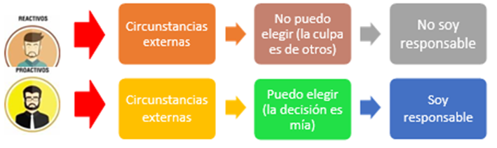
Es difícil aceptar que nosotros mismos creamos muchos de nuestros problemas. Solemos culpar a los demás o a las circunstancias. Pero hasta que no nos demos cuenta de que nuestras decisiones moldean nuestra vida, no podremos cambiar nada.
Lo importante no es lo que nos pasa, sino cómo lo vemos. Todos enfrentamos dificultades, pero cómo reaccionamos marca la diferencia. Nuestra felicidad depende más de nuestra actitud que de lo que nos ocurre.
En lugar de quejarnos de lo que nos pasa, podemos tomar acción y cambiar las cosas. Las personas reactivas solo se lamentan, mientras que las proactivas buscan soluciones.
Lenguaje reactivo versus lenguaje proactivo
Nuestra forma de hablar revela mucho sobre nuestra actitud ante la vida. Las frases que utilizamos a diario son un indicador de si somos más proactivos o reactivos. Por ejemplo, cuando decimos "No puedo hacer nada" o "Siempre va a ser igual", estamos adoptando una postura pasiva y culpando a factores externos. Por el contrario, expresiones como "Buscaré una alternativa" o "Puedo controlar mis emociones" demuestran una actitud más proactiva y enfocada en encontrar soluciones.
Las personas reactivas suelen liberarse de la responsabilidad al justificar sus acciones con frases como "Yo soy así" o "No puedo evitarlo". De esta manera, evitan reconocer su propio papel en las situaciones y atribuyen la culpa a factores externos como el tiempo, otras personas o sus propias emociones.
Este tipo de pensamiento, que nos hace sentir impotentes y sin control sobre nuestras vidas, crea un círculo vicioso. Al convencernos de que no podemos cambiar nada, tendemos a esforzarnos menos y a buscar cada vez más justificaciones para nuestra inacción.
Centrarse en el problema o en la solución
Otra forma de entender la diferencia entre una persona proactiva y una reactiva es observar en qué centran su atención. Las personas reactivas suelen enfocarse en los problemas, los defectos de los demás y las circunstancias que escapan a su control. Esta actitud negativa les impide encontrar soluciones y tomar medidas para mejorar su situación.
En cambio, las personas proactivas dirigen su energía hacia la búsqueda de soluciones. Se centran en lo que sí pueden cambiar y en cómo influir en su entorno. Al adoptar una perspectiva positiva, aumentan sus posibilidades de éxito y logran ampliar su círculo de influencia.
¿Cómo desarrollar la iniciativa/proactividad?
Negar nuestra responsabilidad es una tendencia común en las personas reactivas. Es más fácil culpar a los demás o a las circunstancias que reconocer nuestro propio papel en los acontecimientos. Sin embargo, esta actitud nos impide crecer y aprender de nuestras experiencias. Al asumir la responsabilidad de nuestras acciones, podemos tomar decisiones más conscientes y construir un futuro mejor.
Enfócate en tus propios errores. Deja de culpar a los demás y trabaja en ti mismo. Si algo no funciona en tu relación, en lugar de culpar a tu pareja, piensa en cómo puedes mejorar tú.
Los problemas se pueden dividir en tres grupos:
1. Problemas que puedes solucionar tú solo: Estos son los que tienen que ver con tus propias acciones y actitudes.
2. Problemas que involucran a otras personas: Aquí puedes influir en los demás con tu comportamiento.
3. Problemas que están fuera de tu control: Acepta que hay cosas que no puedes cambiar.
En lugar de quejarte de lo que hacen los demás, concéntrate en lo que tú puedes hacer. Sé más paciente, más comprensivo, más colaborador.
SDA 4. Construyendo puentes
Habilidades sociales
La llave para conectar con los demás
Para alcanzar nuestro máximo potencial, no solo necesitamos habilidades personales como la perseverancia o la gestión del tiempo, sino también la capacidad de relacionarnos eficazmente con otras personas.
Como decía Ortega y Gasset, somos el resultado de nuestra interacción con el mundo que nos rodea. Para tener éxito en la vida, es esencial desarrollar un conjunto de habilidades sociales que nos permitan conectarnos con los demás de manera efectiva.
| Las habilidades sociales, a menudo llamadas "soft skills", son competencias que nos ayudan a relacionarnos con otras personas de manera positiva. Implican valores personales y habilidades psicológicas que nos permiten desenvolvernos con éxito en cualquier ámbito social. |
¿Cuáles son las habilidades sociales más importantes?
Aunque existen muchas habilidades sociales, algunas de las más destacadas son:
- Empatía: La capacidad de ponerse en el lugar de otra persona y comprender sus sentimientos.
- Relaciones interpersonales: La habilidad de construir y mantener relaciones sólidas y significativas con los demás.
- Trabajo en equipo: La capacidad de colaborar con otros para alcanzar objetivos comunes.
Comunicación: La habilidad de expresar ideas y pensamientos de manera clara y efectiva. - Asertividad: La capacidad de expresar nuestras opiniones y sentimientos de manera respetuosa y directa.
- Negociación: La habilidad de resolver conflictos y encontrar soluciones mutuamente beneficiosas.
- Liderazgo: La capacidad de influir en otros y guiarlos hacia un objetivo común.
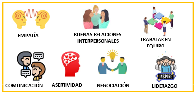
Desarrollar las habilidades sociales desde dentro
Es importante recordar que el desarrollo de las habilidades sociales comienza por uno mismo. Antes de poder conectar con los demás, debemos conocernos y aceptarnos a nosotros mismos. El desarrollo personal es la base sobre la que se construyen las habilidades sociales.
Empatía
| La empatía es la habilidad de entender cómo se siente otra persona en una situación determinada. Es como ponernos en sus zapatos y sentir lo que ellos sienten. Es más que simplemente reconocer que alguien está triste o feliz; es comprender las razones detrás de esas emociones y compartir su perspectiva. |
La empatía es la base de las relaciones humanas saludables. Cuando somos empáticos, podemos conectar mejor con los demás, resolver conflictos de manera más pacífica y construir comunidades más fuertes.
No implica estar de acuerdo con la manera en que los otros se comportan o afrontan una situación, sólo de entenderlos.
Existen 2 niveles de empatía:
- Empatía limitada: Consiste en entender a los demás basándonos en nuestras propias experiencias. Por ejemplo, si alguien está triste porque no lo invitaron a una fiesta, podemos entenderlo porque a nosotros también nos ha pasado.
- Empatía en sentido amplio: Implica ir más allá de nuestras propias experiencias y tratar de comprender los sentimientos y motivaciones de los demás, incluso si nunca hemos pasado por una situación similar.
Nuestro objetivo será desarrollar la empatía en sentido amplio.
¿Cómo podemos mejorar nuestra empatía?
1. Escucha activa: No te limites a oír lo que dicen los demás, sino que trata de entender el significado detrás de sus palabras. Presta atención a su tono de voz, su lenguaje corporal y el contexto de la situación.
| La escucha activa significa prestar atención plena a lo que la otra persona está diciendo, sin interrumpir y tratando de comprender su punto de vista. |
Algunos consejos para mejorar nuestra escucha activa:
- Concentrarnos en la otra persona: Evitar distracciones como el teléfono o nuestros propios pensamientos.
- Verificar que hemos entendido: Hacer preguntas para asegurarnos de que hemos captado el mensaje.
- Utilizar señales verbales y no verbales: Asentir, mantener el contacto visual y utilizar expresiones faciales adecuadas.
- No interrumpir: Darle a la otra persona el tiempo y el espacio para expresarse completamente.
2. Evita los juicios: En lugar de juzgar las acciones de los demás, intenta comprender las razones que los llevan a comportarse de esa manera. Recuerda que todos tenemos nuestras propias historias y circunstancias.
3. Respeta las decisiones ajenas: Aunque no estés de acuerdo con las decisiones de otra persona, respeta su derecho a tomarlas. Cada quien tiene su propia manera de ver la vida.
4. Muestra interés genuino: Demuestra a los demás que te importan sus experiencias y sentimientos. Haz preguntas abiertas y escucha atentamente sus respuestas.
5. Observa la comunicación no verbal: Las palabras solo representan una parte de lo que queremos comunicar. Presta atención a los gestos, las expresiones faciales y el tono de voz para obtener una comprensión más completa del mensaje.
Imagina que un compañero llega tarde a clase y se comporta de manera impulsiva. Antes de juzgarlo, trata de ponerte en su lugar. Quizás haya tenido una mañana difícil y esté estresado. Al comprender su situación, serás más comprensivo y podrás ofrecerle tu apoyo.
¿Por qué es importante la empatía?
La empatía nos ayuda a:
- Conectar con los demás: Fortalecemos nuestras relaciones y construimos comunidades más unidas.
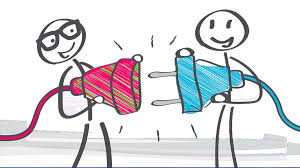
- Resolver conflictos: Al comprender las perspectivas de los demás, es más fácil encontrar soluciones que satisfagan a todos.
- Fomentar la comprensión: Reducimos los prejuicios y la discriminación.
- Desarrollar nuestra inteligencia emocional: Aumenta nuestra capacidad para reconocer y gestionar nuestras propias emociones y las de los demás.
Comunicación
Un puente entre personas
La capacidad de comunicarnos de manera efectiva es fundamental en todos los aspectos de nuestra vida. Sin embargo, a menudo subestimamos la importancia de esta habilidad. Un claro ejemplo histórico es el hundimiento del Titanic, donde una falla en la comunicación contribuyó a la pérdida de muchas vidas.
Una buena comunicación implica transmitir ideas y opiniones de manera clara y concisa, de modo que el receptor comprenda el mensaje tal y como el emisor lo concibió. Es un proceso bidireccional que requiere tanto de la habilidad de expresar nuestros pensamientos como de la capacidad de escuchar y entender a los demás.
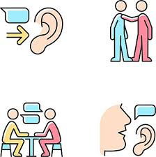
¿Cómo podemos mejorar nuestras habilidades comunicativas?
1. Desarrolla la empatía: Ponte en el lugar del otro para comprender mejor su perspectiva. Escucha activamente, sin interrumpir y evitando juzgar.
2. Mejora tu comunicación verbal y no verbal: El lenguaje corporal y el tono de voz son tan importantes como las palabras. Adapta tu comunicación al contexto y a tu interlocutor.
- Practica la escucha activa: Presta atención plena a lo que la otra persona dice, sin distraerte y sin interrumpir. Verifica que has entendido correctamente su mensaje.
- Sé claro y conciso: Evita rodeos y expresiones ambiguas. Céntrate en transmitir tus ideas de manera directa y sencilla.
- La importancia del tono de voz y el lenguaje corporal: El tono de voz y el lenguaje corporal influyen significativamente en cómo se interpreta un mensaje. Por ejemplo, un tono sarcástico puede cambiar completamente el significado de una frase. Además, gestos como asentir o mantener contacto visual transmiten interés y atención.
3. Desarrolla la comunicación escrita: Si bien muchos de los consejos que ya hemos visto para la comunicación oral son aplicables a la escrita, existen algunos detalles específicos que debemos considerar al comunicarnos por escrito, especialmente en contextos más formales (trabajos del instituto, correos electrónicos, etc.).
- Amplía tu vocabulario: Utiliza palabras precisas y variadas para expresar tus ideas de manera clara y concisa. Evita repetir las mismas palabras al inicio de cada oración.
- Organiza tus ideas: Estructura tu texto de manera lógica y clara, utilizando párrafos, enumeraciones o viñetas para separar las diferentes ideas.
- Destaca lo importante: Utiliza negritas, subrayados o otros recursos gráficos para resaltar los puntos clave de tu mensaje.
- Cuida la ortografía y la gramática: Los errores ortográficos y gramaticales pueden distraer al lector y dar una mala impresión.
- Adapta tu lenguaje al contexto: Utiliza un lenguaje formal y respetuoso en situaciones formales, y un lenguaje más informal en situaciones más casuales.
- Practica la comunicación escrita: Escribe regularmente para mejorar tus habilidades. Puedes empezar con un diario, escribir correos electrónicos o participar en foros online.
4. Habla en público: Es una habilidad muy bien valorada en el ámbito profesional y suele ser la que más miedo da, tanto que a los estudiantes suele darles pánico exponer en clase.
¿Por qué es importante la comunicación escrita?
La comunicación escrita es una herramienta esencial para expresarnos, compartir información y construir relaciones. Una buena comunicación escrita te permitirá:
- Ser más claro y conciso: Transmitir tus ideas de manera efectiva y evitar malentendidos.
- Dejar una buena impresión: Demostrar tus habilidades de comunicación y tu profesionalismo.
- Construir relaciones sólidas: Establecer conexiones significativas con otras personas.
- Aumentar tus oportunidades: Destacar en el ámbito académico y profesional.
Negociación
El arte de llegar a acuerdos
En nuestra vida diaria, constantemente nos encontramos en situaciones donde debemos negociar: con amigos, familiares, compañeros de trabajo, etc. A veces, llegar a un acuerdo es sencillo, pero otras veces puede ser todo un desafío.
| La negociación es la habilidad de encontrar soluciones a los conflictos, buscando acuerdos que satisfagan a todas las partes involucradas. Es una habilidad esencial para resolver problemas y construir relaciones positivas. |
Existen dos enfoques principales a la hora de negociar:
1. Ganar-ganar: En este enfoque, el objetivo es encontrar una solución que beneficie a todas las partes involucradas. Se busca una situación en la que todos ganen algo y se sientan satisfechos con el resultado.
2. Ganar-perder: En este enfoque, se asume que la vida es una competencia y que para que una persona gane, otra debe perder. Se busca imponer nuestra posición y obtener lo que queremos, sin importar las consecuencias para los demás.
El enfoque ganar-ganar es el más beneficioso a largo plazo. Al buscar soluciones que satisfagan a todos, se construyen relaciones más sólidas y duraderas. Además, se fomenta la colaboración y la cooperación.
El enfoque ganar-perder puede llevar a conflictos y resentimientos. Si una persona impone su posición sin tener en cuenta los sentimientos de los demás, puede que obtenga lo que quiere a corto plazo, pero a largo plazo puede perder la confianza de esa persona. Además, puede generar un ambiente de competencia y desconfianza que dificulte futuras negociaciones.
¿Cómo mejorar tus habilidades de negociación?
1. Cambia tu mentalidad: Muchas personas tienen una mentalidad competitiva y creen que para ganar alguien tiene que perder. Esta mentalidad puede ser un obstáculo para la negociación, ya que te lleva a buscar soluciones que benefician solo a ti. En lugar de enfocarte en ganar, busca soluciones que beneficien a todas las partes involucradas.
2. Busca la tercera vía: A menudo, las soluciones más obvias no son las mejores. En lugar de buscar una solución en la que alguien gana todo y otro pierde, busca una solución en la que todos salgan ganando. Esto requiere creatividad y flexibilidad.
3. Desarrolla la habilidad de persuasión: La persuasión es la capacidad de influir en los demás de manera positiva. Para persuadir a alguien, es importante escuchar sus puntos de vista, comprender sus necesidades y presentar tus argumentos de manera clara y concisa. Evita discutir y enfócate en encontrar puntos en común.
Consejos para mejorar tu habilidad de persuasión:
- No discutas: La discusión solo empeora las cosas. Cuando alguien no está de acuerdo contigo, escucha sus argumentos y trata de entender su punto de vista.
- Sé amable y comprensivo: Muestra empatía hacia la otra persona. Esto hará que se sienta más abierta a escuchar tus ideas.
- Enfócate en los puntos en común: En lugar de centrarte en las diferencias, busca lo que tienen en común. Esto creará un terreno común sobre el que construir.
Liderazgo
La capacidad de influir en los demás
| El liderazgo es la habilidad de influir en los demás para que trabajen juntos hacia un objetivo común. |
Todos hemos experimentado el liderazgo de alguna manera, ya sea en el colegio, en un equipo deportivo o en nuestro trabajo. Pero, ¿qué hace a un buen líder?
Líderes positivos vs. líderes negativos
Los líderes pueden tener un impacto significativo en las personas que los rodean. Un líder positivo se enfoca en el bienestar del grupo, inspira a los demás y crea un ambiente de colaboración. Por otro lado, un líder negativo busca su propio beneficio, manipula a los demás y crea un ambiente tóxico.
Características de un buen líder
- Respeto: Un líder respeta a todos los miembros de su equipo, sin importar su posición o sus diferencias.
- Reconocimiento: Reconoce los logros de los demás y ofrece feedback constructivo cuando sea necesario.
- Empatía: Se pone en el lugar de los demás y comprende sus necesidades y preocupaciones.
- Comunicación efectiva: Se comunica de manera clara y concisa, y fomenta un ambiente de comunicación abierta.
- Integridad: Actúa con honestidad y ética, y demuestra que se puede confiar en él.
- Visión: Tiene una visión clara del futuro y motiva a los demás a trabajar hacia esa visión.
Cómo desarrollar tus habilidades de liderazgo
- Sé un ejemplo: Los demás te seguirán si ven que tú estás dispuesto a dar el ejemplo.
- Fomenta el trabajo en equipo: Crea un ambiente donde los miembros del equipo se sientan valorados y apoyados.
- Delega tareas: Confía en los demás y dales la oportunidad de demostrar sus habilidades.
- Desarrolla tus habilidades de comunicación: Una buena comunicación es esencial para cualquier líder.
- Sigue aprendiendo: El liderazgo es un proceso continuo de aprendizaje y desarrollo.
SDA 5. Tus elecciones, tu economía
La Economía
La Ciencia de las Decisiones
¿Alguna vez te has preguntado por qué, a pesar de tener deseos infinitos, nuestros recursos son limitados?
| La economía es la disciplina que se encarga de estudiar cómo administrar esos recursos escasos para satisfacer la mayor cantidad posible de nuestras necesidades. |
El problema fundamental: Escasez y elección
Imagina que tienes un presupuesto limitado. ¿Cómo decides qué comprar con ese dinero? ¿Te compras ese videojuego que tanto deseas o ahorras para unas vacaciones? Esa es la esencia de la economía: tomar decisiones ante la escasez.
Nuestros recursos son limitados por dos razones principales:
- Dinero: Todos tenemos un ingreso fijo, ya sea un sueldo o una paga. Este dinero no es infinito, por lo que debemos elegir cómo gastarlo.
- Tiempo: El tiempo es nuestro recurso más valioso. Tenemos 24 horas al día y debemos decidir cómo distribuirlas entre nuestras diferentes actividades: estudiar, trabajar, descansar, divertirnos...
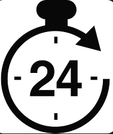
Necesidades ilimitadas
Por otro lado, nuestras necesidades son prácticamente ilimitadas. Siempre queremos algo más: un teléfono más nuevo, un coche más grande, una casa más bonita. A medida que satisfacemos una necesidad, surgen otras nuevas.
La economía como guía
La economía nos proporciona herramientas para tomar mejores decisiones. Nos ayuda a entender cómo funcionan los mercados, cómo se fijan los precios y cómo influyen nuestras decisiones en la economía en general.
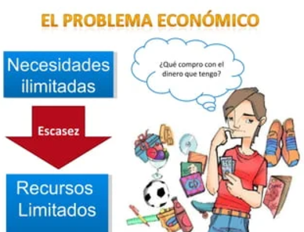
Recursos, bienes y necesidades: la base de la economía
Nuestras limitaciones y deseos
Todos tenemos deseos infinitos, pero los recursos son limitados. Cuando queremos comprar algo, usamos nuestro dinero y tiempo, que son recursos escasos. Para producir los bienes que consumimos, la sociedad necesita otros recursos: los naturales, como la tierra y materias primas; humanos, como los trabajadores; el capital, como las máquinas y herramientas, la gestión empresarial y la tecnología.
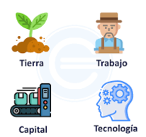
¿Qué es una necesidad?
Una necesidad es algo que nos falta y que queremos satisfacer. Por ejemplo, todos necesitamos alimentarnos, vestirnos y tener un lugar donde vivir. Sin embargo, los bienes que usamos para satisfacer esas necesidades pueden variar mucho. Un videojuego no es una necesidad en sí misma, pero nos ayuda a satisfacer la necesidad de entretenimiento.
Recursos: los ingredientes de la producción
| Los recursos son los elementos o factores productivos que utilizamos para producir bienes y servicios. |
Estos pueden ser naturales (la tierra, el agua), humanos (la fuerza de trabajo) o de capital (máquinas, herramientas). La escasez de recursos significa que no podemos producir todo lo que queremos. Además, como vimos en la introducción, recientemente se ha incorporado un cuarto factor productivo, la gestión empresarial, que hace referencia al grado de coordinación de todos los factores de la empresa.
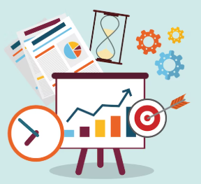
Bienes y servicios: lo que satisface nuestras necesidades
Los bienes son objetos tangibles que podemos comprar, como comida, ropa o un coche. Los servicios, por otro lado, son actividades que realizamos o que otros hacen por nosotros, como ir al cine, recibir una clase o contratar a un mecánico. Tanto los bienes como los servicios satisfacen nuestras necesidades.
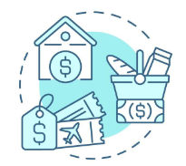
La relación entre todo
Los recursos se utilizan para producir bienes y servicios, que a su vez satisfacen nuestras necesidades. Es un ciclo constante en el que la economía se encarga de gestionar de manera eficiente estos recursos limitados para satisfacer las necesidades de la mayor cantidad de personas posible.
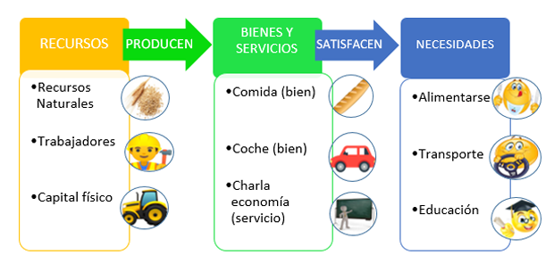
Las características de las necesidades
La economía busca satisfacer la mayor cantidad posible de necesidades, pero para conseguirlo, es crucial entender cómo son estas. Las necesidades no son todas iguales, varían según las personas y las circunstancias. Veamos algunas de sus características:
Las necesidades son ilimitadas
Al igual que hemos dicho antes, nuestro deseo siempre busca más, y esto se debe a que las necesidades se reproducen y nunca estamos en un punto quieto, ya que a medida que las satisfacemos, aparecen otras nuevas.
La misma necesidad puede satisfacerse de varias maneras
José Luis disfruta jugando videojuegos y sus amigos salen de fiesta los fines de semana. Ambos buscan divertirse, pero lo hacen de forma diferente. Esto nos muestra que una misma necesidad, como la de entretenimiento, puede satisfacerse de muchas maneras. No hay una única forma correcta de satisfacer una necesidad, cada persona tiene sus preferencias.
Las necesidades se sienten de manera diferente
No todos sentimos las necesidades de la misma forma. Algunos están más conectados a las redes sociales, mientras que otros prefieren otras actividades. Esto se debe a varios factores:
- El lugar donde vives: Las necesidades varían según el entorno. Por ejemplo, en algunos lugares la seguridad es más importante y las personas pueden tener armas, mientras que en otros lugares esto es menos común.
- El entorno en el que te mueves: Las personas con las que te relacionas influyen en tus necesidades. Si todos tus amigos usan una determinada marca de zapatillas, es probable que tú también quieras tenerlas.
- La edad y el desarrollo personal: Nuestras necesidades cambian a lo largo de la vida. Los jóvenes suelen tener más necesidad de estar conectados, mientras que los adultos mayores pueden priorizar otras cosas.
Las necesidades no son fijas
La vida cambia y nuestras necesidades también. Con la pandemia, surgieron nuevas necesidades como la de protegernos de los virus, lo que aumentó la demanda de productos como mascarillas y gel desinfectante. Esto demuestra que nuestras necesidades pueden evolucionar y adaptarse a los cambios en nuestro entorno y en la sociedad.
La pirámide de Maslow y el confinamiento por COVID-19
Un vistazo al pasado reciente
¿Recuerdas cómo a mediados de marzo de 2020, con la llegada del COVID-19, todo cambió de la noche a la mañana? Lo que antes parecía exagerado, como comprar mascarillas, se convirtió en una necesidad imperiosa. Las tiendas se vaciaron de productos básicos, y las personas se refugiaron en sus hogares. Esta situación nos mostró de manera clara cómo nuestras prioridades pueden cambiar drásticamente cuando enfrentamos una crisis.
La jerarquía de las necesidades
Para entender mejor lo que sucedió, podemos recurrir a la teoría de Abraham Maslow sobre la jerarquía de las necesidades. Maslow propuso que las necesidades humanas se organizan en una especie de pirámide, donde las necesidades más básicas se encuentran en la base y las más complejas en la cima.
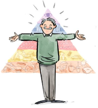
Los niveles de la pirámide
- Necesidades Fisiológicas: Son las más fundamentales para nuestra supervivencia, como comer, beber, dormir y protegernos del frío. Durante el confinamiento, estas necesidades se volvieron aún más evidentes.
- Necesidades de Seguridad: Una vez cubiertas las necesidades básicas, buscamos seguridad y protección. Durante la pandemia, la preocupación por contagiarnos o por la salud de nuestros seres queridos se intensificó.
- Necesidades Sociales: Los seres humanos somos seres sociales y necesitamos sentirnos parte de un grupo. El aislamiento social durante el confinamiento fue difícil para muchos.
- Necesidades de Estima: Buscamos el reconocimiento y el respeto de los demás. En situaciones de crisis, como una pandemia, estas necesidades pueden verse afectadas.
- Necesidades de Autorrealización: Es el nivel más alto de la pirámide y se refiere a la necesidad de alcanzar nuestro máximo potencial. Durante una crisis, esta necesidad puede quedar en segundo plano mientras nos enfocamos en sobrevivir.
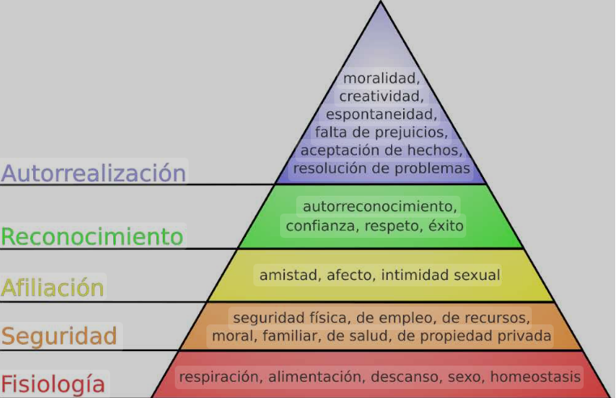
El confinamiento y la pirámide de Maslow
La pandemia del COVID-19 nos mostró cómo las necesidades más básicas pueden ascender rápidamente en nuestra jerarquía de valores. Al principio, la prioridad era conseguir alimentos y productos de limpieza. Luego, la preocupación se centró en la salud y la seguridad. Y finalmente, muchos se dieron cuenta de la importancia de las relaciones sociales y el bienestar emocional.
¿Cómo tomamos decisiones?
El coste de oportunidad
Cada día nos enfrentamos a decisiones grandes y pequeñas. ¿Qué carrera estudiar? ¿Qué trabajo aceptar? ¿Cómo invertir nuestro dinero? Todas estas elecciones tienen un impacto en nuestras vidas. Pero, ¿qué nos lleva a elegir una opción sobre otra? La respuesta está en el concepto de coste de oportunidad.
| El coste de oportunidad es aquello a lo que renunciamos cuando tomamos una decisión. Es decir, es el valor de la mejor alternativa a la que renunciamos. |
Por ejemplo, si decides ir al cine en lugar de estudiar para un examen, el coste de oportunidad es la posibilidad de obtener una buena nota.
Elementos clave del análisis coste-beneficio
Al considerar el coste de oportunidad, podemos evaluar de manera más consciente las ventajas y desventajas de cada opción. Esto nos ayuda a tomar decisiones más racionales y a maximizar nuestra satisfacción. Los elementos clave del análisis coste-beneficio:
- Beneficio: Es lo que ganamos al tomar una decisión. Puede ser dinero, satisfacción personal o cualquier otra cosa que valoramos.
- Coste: Es aquello a lo que renunciamos al tomar una decisión.
- Racionalidad: Una decisión es racional cuando los beneficios superan a los costos.
Imagina que tienes la oportunidad de estudiar Economía o Derecho. Si eliges Economía, el coste de oportunidad es no poder estudiar Derecho. Y viceversa, si eliges Derecho, el costo de oportunidad es no poder estudiar Economía.
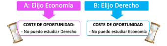
Otro ejemplo: supongamos que tienes una beca para estudiar en una universidad en otra ciudad. El coste de oportunidad de aceptar esta beca sería no poder trabajar en la ciudad donde vives y estar cerca de tu familia.
Principios económicos para tomar mejores decisiones
- El principio de que todo tiene un coste: Cada decisión implica una renuncia.
- El principio del beneficio marginal y el coste marginal: Al tomar una decisión, comparamos el beneficio adicional que obtenemos con el coste adicional que asumimos.
Cada decisión tiene un precio oculto
Cuando tomamos decisiones, no solo consideramos lo que ganamos, sino también lo que dejamos de ganar. A esto lo llamamos coste de oportunidad. Es como elegir un camino en un cruce: al tomar una dirección, renunciamos a las posibilidades que nos ofrece el otro camino.
Más allá del dinero
El coste de oportunidad no siempre se mide en dinero. A veces, implica renunciar a experiencias, tiempo o incluso a parte de nosotros mismos. Por ejemplo, al elegir estudiar una carrera, renunciamos a la posibilidad de viajar o de trabajar y ganar dinero durante esos años.
Supongamos que tienes que decidir entre estudiar Economía o empezar a trabajar inmediatamente. Si eliges estudiar, el costo de oportunidad es el dinero que dejarías de ganar trabajando durante esos años. Pero también hay un costo de oportunidad invisible: al no trabajar, podrías perder la oportunidad de adquirir experiencia laboral y, en consecuencia, tener un salario más bajo en el futuro.
El error de los costos hundidos: ¡No te aferres al pasado!
¿Alguna vez te has aferrado a algo solo porque ya habías invertido tiempo o dinero en ello? Esto es más común de lo que crees y se conoce como el error de los costos hundidos.
Imagina esta situación: tienes una entrada para un concierto que no te entusiasma mucho, pero ya la pagaste. Al mismo tiempo, te invitan a una fiesta que suena increíble. ¿Qué haces?
Muchas personas se quedarían en el concierto solo porque ya invirtieron dinero en la entrada. Sin embargo, esto es un error. El dinero que gastaste en la entrada ya se fue, es un costo hundido. No importa lo que decidas ahora, ese dinero no volverá. Lo que realmente importa es cuál de las dos opciones te dará más felicidad en este momento.
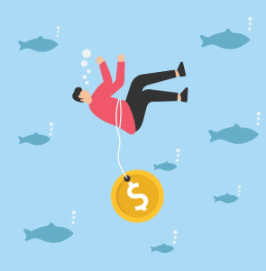
¿Por qué es importante entender los costes hundidos?
Al tomar decisiones, debemos enfocarnos en los beneficios y costos futuros, no en los pasados. Los costos hundidos son como el equipaje que llevamos en un viaje: una vez que lo subimos al avión, no podemos bajarlo. Lo mejor que podemos hacer es disfrutar del viaje con lo que tenemos.
Otro ejemplo, Carlos compra una bicicleta nueva por 500 euros y, al poco tiempo, decide venderla porque no la usa mucho. Le ofrecen 300 euros. Carlos duda en venderla porque siente que estaría perdiendo 200 euros.
Sin embargo, el costo de los 500 euros ya es un costo hundido. Lo importante es si los 300 euros que le ofrecen valen la pena por el uso que le dará a la bicicleta. Si considera que el uso que le dará vale más de 300 euros, debería quedársela. Si no, debería venderla.
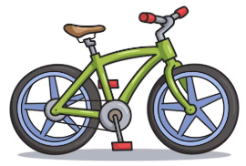
El análisis marginal: La clave está en la medida
Hasta ahora hemos hablado de decisiones sencillas: ¿estudio o salgo de fiesta? ¿compro esto o aquello? Pero la vida real es más compleja. A menudo, no se trata de elegir entre una opción u otra, sino de decidir cuánto de algo queremos.
Pongamos un ejemplo: Si decides estudiar, no tienes que hacerlo las 24 horas del día. ¿Cuántas horas debes dedicar? Aquí es donde entra en juego el análisis marginal. Este análisis nos ayuda a decidir si es beneficioso estudiar una hora más o comprar una camiseta más.
¿Qué es el análisis marginal? Es una forma de evaluar si una decisión adicional es buena o no. Por ejemplo, si estudiar una hora más te permite entender mejor un tema importante, pero te quita tiempo para descansar, el análisis marginal te ayudará a decidir si el beneficio (entender mejor el tema) compensa el costo (menos descanso).
En resumen, el análisis marginal compara los beneficios y costos adicionales de tomar una decisión más. Si los beneficios adicionales superan a los costos adicionales, entonces merece la pena tomar esa decisión adicional.
- Beneficio marginal: Es la ganancia adicional que obtienes al tomar una decisión más (por ejemplo, entender mejor un tema si estudias una hora más).
- Coste marginal: Es el costo adicional que implica tomar una decisión más (por ejemplo, menos tiempo para descansar si estudias una hora más).
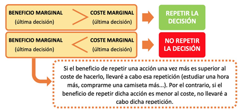
Las personas respondemos a incentivos: ¡La zanahoria y el palo!
¿Alguna vez has notado cómo las personas reaccionan a premios o castigos? Esto es lo que se conoce como "incentivos". Imagina que estás en una universidad y ves que muchos estudiantes prefieren salir de fiesta a estudiar. ¿Por qué? Porque la fiesta es divertida y los estudios, a veces, aburridos. Sin embargo, si los padres de estos estudiantes les ofrecen un buen trabajo si se gradúan, es probable que se esfuercen más.
Los incentivos son como imanes que atraen o repelen nuestras acciones. Si el premio es lo suficientemente grande o el castigo lo suficientemente fuerte, la mayoría de las personas cambiará su comportamiento.
La economía conductual o del comportamiento
El estudio de la economía se centra en analizar el comportamiento humano, pero no es la única disciplina que lo hace. La psicología, por su parte, busca comprender cómo las personas toman decisiones. Aunque ambas áreas tienen enfoques distintos, en los últimos años se han integrado a través de lo que se denomina "economía conductual", un campo que combina la economía con perspectivas psicológicas.
| La economía conductual se trata de una rama de la economía que incorpora principios de la psicología para comprender mejor las decisiones humanas. |
Las personas no siempre actúan de forma racional
En los libros de economía tradicional, se asume que las personas pertenecen a un modelo ideal conocido como "Homo Economicus". Según este enfoque, los individuos tomarían decisiones basadas únicamente en lógica, buscando maximizar beneficios y minimizar costos. Sin embargo, los humanos reales, o "Homo Sapiens", tienden a comportarse de forma mucho más compleja, mostrando emociones e impulsos que afectan sus elecciones.
Errores comunes que cometen las personas:
A. Exceso de confianza en sus habilidades:
La mayoría de las personas sobrestiman sus capacidades. Por ejemplo, al preguntar cuántos países tiene Europa, muchos estarían seguros de su respuesta, aunque sea incorrecta. Un experimento que evaluó esta conducta demostró que las personas tienden a responder con excesiva seguridad, incluso si su conocimiento es limitado.
B. Sobrevalorar experiencias específicas:
Imagina que estás interesado en comprar un artículo por internet. Antes de hacerlo, revisas los comentarios en línea y te dejas influir por una sola opinión negativa, ignorando miles de valoraciones positivas. Este error ocurre porque las personas tienden a darle más peso a experiencias individuales que a datos estadísticos amplios.
C. Resistencia al cambio de ideas:
A las personas les cuesta modificar sus creencias. Por ejemplo, en un partido de fútbol entre el Real Madrid y el Barcelona, los aficionados de ambos equipos suelen creer que el árbitro favorece al contrario, independientemente de lo que ocurra realmente. Este fenómeno demuestra cómo las personas filtran la información para confirmar sus ideas previas.
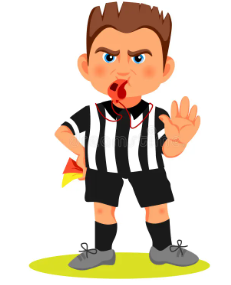
Las personas se preocupan por la justicia
A veces, las decisiones de las personas parecen poco racionales cuando se guían por un sentido de justicia. Por ejemplo, si necesitas comprar una pala para retirar nieve y normalmente cuesta 20 euros, pero tras una nevada su precio sube a 60 euros, podrías sentir que la ferretería está siendo injusta. Aunque comprar la pala sigue siendo beneficioso, muchas personas preferirían no adquirirla debido a la percepción de abuso.
Impaciencia a corto plazo
La economía conductual también evidencia que los humanos valoran más las recompensas inmediatas que los beneficios a largo plazo. Por ejemplo, un fumador sabe que dejar de fumar mejora su salud, pero puede priorizar el placer momentáneo del cigarrillo. Similarmente, un estudiante puede posponer sus deberes para disfrutar de actividades recreativas, aun sabiendo que le afectará en el futuro.
Efectos de la preferencia por lo inmediato:
Planes a largo plazo, como hacer ejercicio regularmente, suelen ser abandonados en favor de satisfacciones instantáneas, como ver redes sociales o comer alimentos poco saludables. Aunque estas decisiones parecen inofensivas, pueden tener consecuencias económicas y personales significativas con el tiempo.
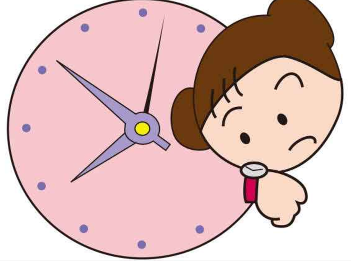
Sesgos cognitivos y decisiones humanas
Expertos en psicología y economía del comportamiento han identificado diversas tendencias cognitivas que influyen en cómo las personas toman decisiones.
| Un sesgo cognitivo es un fenómeno psicológico que distorsiona la manera en que se percibe la información del entorno. Esta distorsión, al afectar la lógica de los razonamientos, puede llevar a cometer errores al tomar decisiones. |
Ejemplos de sesgos cognitivos:
A. Contabilidad mental
Los individuos tienden a dividir su dinero en diferentes “cuentas mentales”, según el propósito o contexto. Por ejemplo, alguien puede gastar de más durante unas vacaciones justificando que “ya ha gastado tanto que un poco más no hace diferencia”. Sin embargo, esa misma persona podría esforzarse mucho para ahorrar unos pocos euros en el supermercado.
Otra manifestación de este sesgo es valorar más el dinero que se obtiene con esfuerzo, como un salario, que aquel obtenido sin dificultad, como un premio. Aunque ambos tienen el mismo valor, las personas suelen gestionarlos de manera distinta, lo que sugiere que debería tratarse todo el dinero con el mismo criterio.
B. Efecto ancla
Las personas suelen basar sus decisiones en la primera información que reciben, conocida como “ancla”. Por ejemplo, si te preguntan la edad a la que murió Cervantes y previamente te mencionan el número 40, podrías suponer que falleció alrededor de esa edad, aunque en realidad murió a los 68 años.
Un ejemplo comercial es el uso de precios elevados al inicio, lo que hace que cualquier oferta posterior parezca más atractiva en comparación.
C. Efecto manada
En muchas ocasiones, las personas prefieren seguir lo que hace la mayoría. Por ejemplo, si al elegir entre dos terrazas una está más llena que la otra, tendemos a optar por la que parece más popular, pensando que la mayoría tiene razón.
Esta tendencia refleja cómo a menudo nos dejamos influenciar por las decisiones del grupo, incluso sin evaluar si realmente son correctas.
D. Efecto marco
Las decisiones de las personas pueden cambiar según cómo se presente la información. Supongamos que debes elegir entre dos opciones: una indica que puede tener un 1% de bacterias, mientras la otra señala que es 99% libre de bacterias. Aunque ambas son equivalentes, la mayoría preferirá la opción que enfatiza el aspecto positivo.
Este fenómeno es ampliamente utilizado en publicidad, como en productos de cosmética que usan mensajes positivos como “te sentirás más joven” en lugar de “evitarás envejecer”.
E. Efecto dotación
Las personas tienden a asignar más valor a algo que ya poseen, aunque sea irracional. Por ejemplo, el dueño de un bien suele pedir un precio más alto por venderlo del que aceptaría si tuviera que comprarlo él mismo.
Empresas aprovechan este sesgo ofreciendo servicios o productos a precios iniciales bajos, con la intención de que los clientes los perciban como algo propio. Una vez que lo consideran “suyo”, están más dispuestos a pagar tarifas más altas por conservarlo.
F. Aversión a las pérdidas
La mayoría prefiere evitar perder algo a obtener una ganancia equivalente. Por ejemplo, si alguien encuentra un billete de 5 euros en la calle, sentirá una pequeña alegría, pero si lo pierde, la frustración será mucho mayor.
Este sesgo también explica por qué las personas suelen evitar inversiones riesgosas, incluso si la probabilidad de ganar es igual a la de perder, ya que el temor a una posible pérdida supera la expectativa de una posible ganancia.
G. Efecto señuelo
Este sesgo ocurre cuando se introduce una tercera opción que cambia las preferencias iniciales. Por ejemplo, si se presentan dos móviles, uno de 300 € y otro de 350 €, la mayoría elige el primero por ser más económico. Sin embargo, si se añade un tercer modelo de 800 €, el de 350 € parece más razonable en comparación, haciendo que más personas lo elijan.
Esta estrategia es usada con frecuencia en estrategias de marketing para dirigir la decisión del consumidor hacia un producto específico. Lo encontramos, por ejemplo, en la conocida cadena Starbucks. Si el precio del vaso grande es solo ligeramente inferior al tamaño venti, te "convendrá" elergir el mayor, aunque sea más caro.
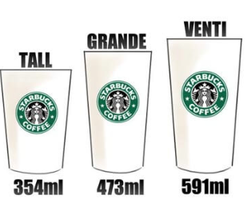
La identificación de estos sesgos permite comprender cómo factores aparentemente irrelevantes pueden tener un impacto significativo en nuestras decisiones cotidianas.
SDA 6. Economía en comunidad
Bienestar personal y social
¿Es posible que el egoísmo individual genere un bien común?
Imagina a María, una arquitecta que decide invertir sus ahorros en un proyecto de viviendas sostenibles en un barrio desfavorecido. Al hacerlo, busca tanto mejorar su calidad de vida (al invertir en algo que considera valioso) como generar un impacto positivo en su comunidad (al proporcionar viviendas dignas y eficientes).
En este ejemplo, podemos identificar claramente dos dimensiones del bienestar:
- Bienestar personal: María experimenta satisfacción personal al perseguir un objetivo que alinea con sus valores y creencias. La inversión en un proyecto sostenible le proporciona un sentido de propósito y realización.
- Bienestar social: Al construir viviendas sostenibles en un barrio desfavorecido, María contribuye a mejorar la calidad de vida de muchas personas. Su proyecto no solo proporciona un hogar, sino también un entorno más saludable y eficiente energéticamente.
Este ejemplo nos muestra cómo las acciones individuales pueden tener un impacto significativo en el bienestar colectivo. Al buscar nuestro propio bienestar, también podemos contribuir a mejorar el bienestar de los demás. Sin embargo, es importante considerar que el bienestar personal y el bienestar social no siempre están en conflicto. En muchos casos, ambos pueden reforzarse mutuamente.
| Aspecto | Bienestar personal | Bienestar social |
| Motivación | Satisfacción personal, realización. | Mejora de la calidad de vida de otros, contribución a la comunidad. |
| Impacto | Directo en la vida de la persona. | Indirecto, a través de acciones y decisiones. |
| Ejemplo | Invertir en un proyecto que se alinea con tus valores. | Donar a una organización benéfica, voluntariado. |
Eficiencia, equidad y bienestar social
Cuando hablamos de bienestar colectivo, existen dos aspectos clave que preocupan a la sociedad: la eficiencia y la equidad.
| EFICIENCIA Y BIENESTAR SOCIAL |
|
Para los economistas, una situación es más eficiente que otra si al menos una persona mejora su situación sin que nadie empeore la suya. Imagina que en una situación nueva, una o varias personas aumentan su bienestar personal sin que ninguna otra lo disminuya; estaríamos ante una situación más eficiente y, por ende, de mayor bienestar social. Imaginemos el proyecto de vivienda sostenible de María. Si gracias a su iniciativa, tanto ella como los habitantes del barrio donde construye obtienen beneficios (María obtiene ganancias y los habitantes tienen viviendas dignas), entonces estamos ante una situación más eficiente. Incluso si María obtuviera mayores beneficios que los habitantes, la situación seguiría siendo más eficiente, siempre y cuando nadie empeore. 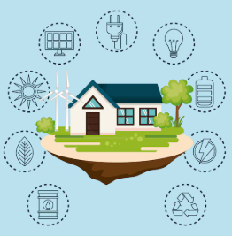 |
| EQUIDAD Y BIENESTAR SOCIAL |
|
Muchas personas consideran que para que haya verdadero bienestar social es necesario que exista un "reparto justo". Algunos podrían argumentar que si María gana mucho dinero con su proyecto, mientras que los habitantes solo obtienen una vivienda, la situación no es del todo justa. Para que haya una mayor equidad, se podría proponer que María reinvierta una parte de sus ganancias en el barrio, por ejemplo, financiando espacios públicos o programas sociales. El problema aquí es el término "justo". ¿Qué significa un reparto justo? ¿Cuál es el criterio para decidir cuánto le corresponde a cada persona? No hay una definición exacta de justicia y depende del punto de vista de cada uno. 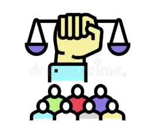 |
Interacción de las personas en sociedad
Nuestras decisiones no son islas aisladas. Lo que una persona elige hacer influye en las opciones de los demás y viceversa. Piensa en las elecciones políticas: el voto de una persona puede afectar las decisiones de todo un país. Así, las acciones individuales se entrelazan creando una compleja red de interacciones.
Principios de interacción entre personas
PRIMER PRINCIPIO: El intercambio puede mejorar el bienestar social.
Imagínate una sociedad donde cada familia se dedica a producir todo lo que necesita: cultivar sus alimentos, construir su propia casa. Sería muy poco eficiente y limitaría mucho lo que cada persona podría disfrutar.
Si en cambio, nos especializamos y colaboramos, las cosas cambian. Si cada uno se dedica a lo que mejor sabe hacer y luego intercambiamos lo que producimos, tendremos una mayor variedad de bienes y servicios. Por ejemplo, si alguien es excelente cazando y otro es hábil en la costura, el primero puede cazar para ambos y el segundo puede confeccionar ropa para ambos.
¿Por qué funciona esto?
- Especialización: Al concentrarnos en lo que hacemos mejor, aumentamos nuestra productividad.
- Intercambio: Al intercambiar lo que producimos, obtenemos una mayor variedad de bienes y servicios.
Esta dinámica de especialización e intercambio es la base de la economía y ha permitido a las sociedades desarrollarse y prosperar.
Pero, ¿cómo aseguramos que estas interacciones sean lo más beneficiosas posible? Necesitamos utilizar los recursos de manera eficiente. Esto significa producir lo que la sociedad necesita de la manera más efectiva posible, evitando el desperdicio y maximizando el bienestar de todos.
SEGUNDO PRINCIPIO: Optimizar el uso de los recursos incrementa el bienestar colectivo.
Imagina una escuela con dos aulas: una pequeña, abarrotada de 35 alumnos, y otra grande, casi vacía, con solo 10 estudiantes. Un economista diría que esta distribución de los recursos es ineficiente. Sería mucho más eficiente asignar a los 35 alumnos al aula grande y a los 10 al aula pequeña. De esta manera, todos los estudiantes tendrían más espacio y estarían más cómodos, sin perjudicar a nadie.
¿Siempre debemos buscar la máxima eficiencia posible?
Si bien la eficiencia es importante, no es el único factor a considerar. A veces, la justicia y la equidad también juegan un papel crucial. Por ejemplo, en muchos centros comerciales, las plazas de aparcamiento más cercanas a la entrada están reservadas para personas con movilidad reducida. Aunque esto pueda parecer justo, también genera ineficiencias: estas plazas suelen estar vacías mientras otras personas buscan desesperadamente un lugar para estacionar.
En este caso, existe un conflicto entre eficiencia y equidad. Al reservar plazas para personas con discapacidad, se prioriza la justicia, pero se reduce la eficiencia, ya que se podrían mejorar las condiciones de otras personas asignándoles esas plazas vacías.
Otro ejemplo son los impuestos progresivos. Al cobrar más impuestos a las personas con mayores ingresos para luego redistribuirlos entre las personas con menos recursos, se reduce la eficiencia económica, ya que quienes pagan más impuestos tienen menos dinero disponible. Sin embargo, esta medida aumenta la equidad, al brindar mayores oportunidades a aquellos que más lo necesitan.
TERCER PRINCIPIO: Los mercados suelen conducir a la eficiencia.
Cuando pensamos en cómo funciona la economía, a menudo nos imaginamos a personas y empresas que toman decisiones individuales. Nadie les dice qué producir o qué comprar; cada uno actúa según sus propios intereses. Pero, ¿cómo es posible que este sistema aparentemente caótico funcione tan bien?
| Adam Smith, un economista del siglo XVIII, introdujo el concepto de "mano invisible". Se refiere a la idea de que cuando cada individuo busca su propio beneficio, como una empresa que busca maximizar sus ganancias o un consumidor que busca el mejor precio, el resultado final es beneficioso para toda la sociedad. Es como si una fuerza invisible guiara a todos hacia un equilibrio donde se satisfacen las necesidades de todos. |
¿Cómo funciona esta mano invisible?
Imagina un mercado como el de los teléfonos móviles. Las empresas compiten para ofrecer los mejores productos al precio más bajo. Al hacerlo, no solo buscan ganar dinero, sino que también satisfacen las necesidades de los consumidores. Si una empresa ofrece un producto de mala calidad o a un precio demasiado alto, los consumidores simplemente comprarán a otra empresa. Esta competencia entre empresas beneficia a los consumidores, quienes obtienen productos de mejor calidad a precios más bajos.
¿Por qué los mercados suelen ser eficientes?
Los mercados son eficientes porque:
- Incentivan la innovación: Las empresas constantemente buscan nuevas formas de mejorar sus productos y servicios para atraer a más clientes.
- Asignan recursos de manera eficiente: Los recursos se dirigen hacia donde más se necesitan. Por ejemplo, si hay una escasez de un producto, su precio aumentará, lo que incentivará a las empresas a producir más.
- Promueve la calidad: La competencia entre empresas obliga a todas a ofrecer productos de alta calidad para atraer a los consumidores.
CUARTO PRINCIPIO: Cuando el mercado no es eficiente, el Estado puede mejorar el bienestar social.
Aunque los mercados suelen ser eficientes, no siempre son perfectos. A veces, el egoísmo individual puede llevar a situaciones donde algunos salen perjudicados. En estos casos, el Estado puede intervenir para corregir estas fallas de mercado y mejorar el bienestar social.
¿Cuándo falla el mercado?
- Externalidades: Cuando las acciones de una persona o empresa afectan a otros sin que estos reciban una compensación o paguen por ello. Por ejemplo, la contaminación de una fábrica afecta la salud de las personas que viven cerca.
- Monopolios: Cuando una empresa tiene demasiado poder de mercado y puede fijar precios muy altos.
- Bienes públicos: Algunos bienes, como la defensa nacional o la educación pública, son beneficiosos para todos, pero las empresas no los producirán porque no pueden cobrar un precio a cada individuo.
¿Qué puede hacer el Estado?
- Regular las empresas: Estableciendo normas y leyes para proteger a los consumidores y al medio ambiente.
- Imponer impuestos: Para financiar servicios públicos y redistribuir la riqueza.
- Ofrecer bienes y servicios públicos: Como educación, salud y seguridad.
La FPP
Imagina una pequeña economía, como una aldea, que solo produce dos bienes: peces y vegetales. Los habitantes de esta aldea tienen recursos limitados (tierra, trabajo, herramientas) y una tecnología determinada. La FPP representa el límite máximo de producción que esta aldea puede alcanzar con los recursos y tecnología que tiene.
¿Qué factores influyen en la FPP?
- Cantidad de recursos: Cuantos más recursos tenga un país (tierra, trabajadores, maquinaria), más bienes podrá producir.
- Tecnología: No solo la cantidad de recursos importa, sino también cómo se utilizan. Una mejor tecnología permite producir más bienes con los mismos recursos.
¿Qué representa la FPP?
| La FPP muestra todas las posibles combinaciones de producción de dos bienes que una economía puede alcanzar en un momento dado. Es decir, nos indica las cantidades máximas de bienes que se pueden producir, dadas las limitaciones de recursos y tecnología. |
La FPP y sus implicaciones
La FPP nos ayuda a entender conceptos clave en economía como:
- Coste de oportunidad: Al decidir producir más de un bien, necesariamente se debe producir menos del otro. Por ejemplo, si una aldea decide producir más peces, tendrá que reducir la producción de vegetales.
- Eficiencia: Un punto en la FPP representa una situación eficiente, donde se utilizan todos los recursos disponibles de la mejor manera posible.
- Crecimiento económico: Si la tecnología mejora o se descubren nuevos recursos, la FPP se desplazará hacia afuera, lo que significa que la economía puede producir más de ambos bienes.
Un ejemplo práctico
Imagina una tabla que muestra diferentes combinaciones de producción de peces y vegetales para nuestra aldea. Cada punto en la tabla representa una elección: producir más peces significa producir menos vegetales y viceversa.
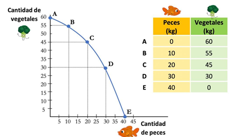
¿Qué podemos aprender de esto?
- La especialización: Si todos los habitantes se dedican a pescar, obtendrán muchos peces pero no podrán cultivar vegetales. Si todos se dedican a cultivar, tendrán muchos vegetales pero no pescarán nada.
- El equilibrio: Existe un punto óptimo donde se produce una cantidad equilibrada de ambos bienes, dependiendo de las preferencias de los habitantes.
La FPP y el coste de oportunidad
La FPP es como un mapa que nos muestra todas las combinaciones posibles de dos bienes que una economía puede producir con los recursos y tecnología que tiene en un momento dado. Imagina que solo podemos producir dos cosas: peces y vegetales. La FPP nos dice qué cantidad máxima de cada uno podemos obtener.
¿Por qué la FPP tiene forma de curva?
La forma curva de la FPP refleja el concepto de coste de oportunidad. Esto significa que producir más de un bien implica necesariamente producir menos del otro. Si queremos pescar más peces, tendremos que dejar de cultivar algunos vegetales, ya que los recursos (tierra, trabajo) son limitados.
Un ejemplo claro:
Supongamos que estamos en el punto A de la gráfica. Si decidimos movernos al punto C, estaremos produciendo 20 kg de peces más. Sin embargo, para conseguir esos 20 kg adicionales de peces, tendremos que renunciar a 15 kg de vegetales. Es decir, el coste de oportunidad de esos 20 kg de peces es dejar de producir 15 kg de vegetales.
Lo mismo ocurre si nos movemos del punto E al punto D. En este caso, estamos aumentando la producción de vegetales en 30 kg, pero a costa de reducir la producción de peces en 10 kg. El coste de oportunidad de esos 30 kg de vegetales es dejar de producir 10 kg de peces.
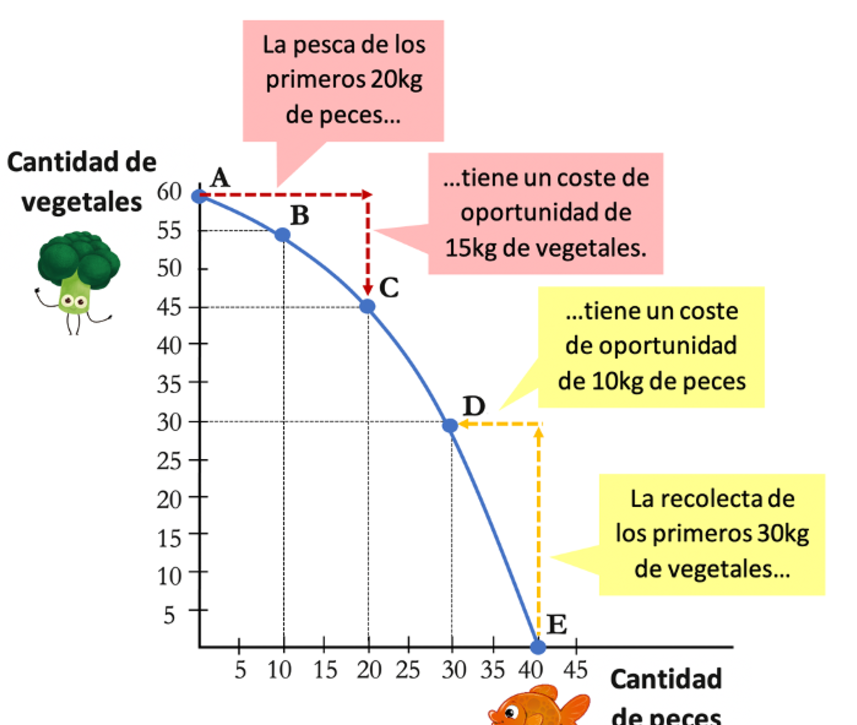
¿Qué nos enseña la FPP?
La FPP nos muestra que las decisiones económicas siempre implican elegir. No podemos tenerlo todo. Cuando decidimos producir más de un bien, estamos renunciando a producir más de otro. Esta es la esencia del coste de oportunidad.
La FPP y la eficiencia económica
La FPP no solo nos muestra las diferentes combinaciones de bienes que una economía puede producir, sino que también nos ayuda a entender qué tan bien estamos utilizando nuestros recursos. Pensemos en una economía como una fábrica que produce dos productos: peces y vegetales. La FPP nos muestra todas las posibles combinaciones de producción de estos dos bienes, dadas las limitaciones de recursos y tecnología de la fábrica.
Tipos de puntos en la FPP:
- Puntos eficientes: Estos puntos representan las combinaciones de producción donde estamos utilizando todos nuestros recursos de la manera más eficiente posible. Es decir, no podemos producir más de un bien sin producir menos del otro. Por ejemplo, si nuestra fábrica produce 20 kg de peces y 45 kg de vegetales, estamos operando de manera eficiente.
- Puntos ineficientes: Estos puntos se encuentran por debajo de la curva de la FPP. Significa que no estamos utilizando nuestros recursos de manera óptima. Podríamos estar produciendo más de un bien sin sacrificar la producción del otro. Por ejemplo, si nuestra fábrica solo produce 20 kg de peces y 20 kg de vegetales, cuando podría producir 20 kg de peces y 45 kg de vegetales, estaríamos siendo ineficientes.
- Puntos inalcanzables: Estos puntos se encuentran por encima de la curva de la FPP. Representan combinaciones de producción que no podemos alcanzar con los recursos y tecnología actuales. Por ejemplo, si nuestra fábrica quisiera producir 30 kg de peces y 40 kg de vegetales, sería imposible con los recursos que tiene en este momento.
¿Qué significa esto?
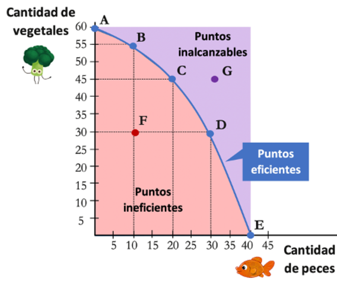
La FPP nos muestra que las decisiones económicas siempre implican elegir. No podemos tenerlo todo. Cuando decidimos producir más de un bien, estamos renunciando a producir más de otro. Esta es la esencia del coste de oportunidad. Además, la FPP nos ayuda a entender que:
- La eficiencia es clave: Las economías deben buscar siempre producir en la frontera de posibilidades, es decir, utilizar todos sus recursos de la manera más eficiente posible.
- El crecimiento económico es posible: Con el tiempo, a medida que se desarrollan nuevas tecnologías o se descubren nuevos recursos, la frontera de posibilidades se puede expandir, permitiendo producir más de ambos bienes.
La FPP y el crecimiento económico
La Frontera de Posibilidades de Producción (FPP) nos muestra las diferentes combinaciones de bienes que una economía puede producir en un momento dado. Pero, ¿qué pasa si con el tiempo nuestra economía crece y puede producir más? Esto se representa como un desplazamiento de la FPP hacia afuera. Imagina que nuestra aldea, que antes solo producía peces y vegetales, ahora puede producir más gracias a nuevos avances. En el ejemplo anterior:
¿Qué hace que nuestra economía crezca?
Hay dos causas principales que hacen que nuestra economía pueda producir más:
- Aumento de los factores de producción: Esto significa que tenemos más recursos para producir. Por ejemplo, si descubrimos nuevas tierras fértiles, podemos cultivar más vegetales. O si nuestra población crece, tendremos más trabajadores para pescar y cultivar.
- Mejora de la tecnología: Incluso con los mismos recursos, podemos producir más si utilizamos mejores herramientas o técnicas. Por ejemplo, si inventamos redes de pesca más eficientes o mejores sistemas de riego para los cultivos, podremos aumentar nuestra producción.
¿Cómo se refleja esto en la FPP?
Cuando nuestra economía crece, la FPP se desplaza hacia afuera, lo que significa que ahora podemos producir más de ambos bienes, peces y vegetales. Combinaciones que antes eran imposibles, ahora son posibles.
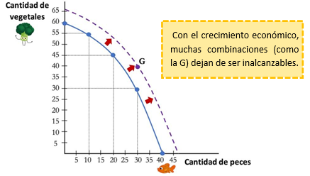
¿Qué opciones tenemos cuando nuestra economía crece?
Imagina que nuestros aldeanos dedican 4 horas al día a pescar y cultivar. Con el tiempo extra, tienen tres opciones:
- Descansar: Pueden usar este tiempo extra para descansar o divertirse.
- Consumir más: Pueden dedicar este tiempo a producir bienes que satisfagan sus necesidades inmediatas, como mejores casas o ropa.
- Invertir: Pueden invertir este tiempo en mejorar su capacidad de producción a futuro, como construir mejores barcos de pesca o desarrollar nuevas técnicas de cultivo.
¿Cuál es la mejor opción?
| La decisión de cómo utilizar el tiempo extra depende de los objetivos de cada sociedad. Si la sociedad prioriza el bienestar presente, puede optar por descansar o consumir más. Sin embargo, si la sociedad quiere crecer y tener más opciones en el futuro, debe invertir en mejorar su capacidad de producción. |
Ventaja comparativa y ganancias del comercio
Consideremos a dos agricultores, Carlos y Daniela, que cultivan tomates y lechugas en sus respectivas fincas. Ambos son eficientes en la producción de ambos cultivos, pero cada uno tiene una habilidad especial. Carlos, por su experiencia y las características de su tierra, puede cosechar tomates en menos tiempo que Daniela. Por otro lado, Daniela posee una variedad de lechugas únicas que requieren cuidados específicos y que ella domina a la perfección.
| El coste de oportunidad de producir un bien se define como la cantidad de otro bien al que se renuncia para producirlo |
En este caso, si Carlos decide dedicar más tiempo a cultivar lechugas, está renunciando a la oportunidad de cosechar más tomates. Del mismo modo, si Daniela decide cultivar tomates, está dejando de lado la producción de sus preciadas lechugas.
Para entender mejor este concepto, imaginemos que ambos agricultores dedican una hora a trabajar en sus cultivos. Supongamos que Carlos puede cosechar 10 tomates en una hora y 5 lechugas, mientras que Daniela puede cosechar 8 tomates y 12 lechugas.
| Agricultor | Tomates por hora | Lechugas por hora |
| Carlos | 10 | 5 |
| Daniela | 8 | 12 |
Si Carlos decide dedicar una hora más a cultivar lechugas, dejará de cosechar 10 tomates. Por lo tanto, el coste de oportunidad de una lechuga adicional para Carlos es de 2 tomates. En cambio, si Daniela decide cultivar un tomate adicional, dejará de cosechar 1.5 lechugas. El coste de oportunidad de un tomate adicional para Daniela es de 1.5 lechugas.
Como podemos observar, el coste de oportunidad de producir un tomate es menor para Carlos que para Daniela. Esto significa que Carlos tiene una ventaja comparativa en la producción de tomates. Por otro lado, Daniela tiene una ventaja comparativa en la producción de lechugas.
Al especializarse en la producción de los bienes en los que tienen una ventaja comparativa, tanto Carlos como Daniela pueden aumentar su producción total y mejorar su bienestar económico. Carlos puede concentrarse en la producción de tomates, en los que es más eficiente, mientras que Daniela puede dedicar más tiempo a cultivar sus lechugas especiales. Ambos pueden luego intercambiar sus productos, obteniendo así una mayor variedad de alimentos y a un menor coste.
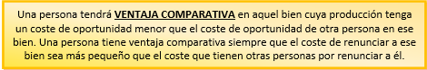
La clave
Recordemos que Matías y Silvia tienen una situación en la que pueden dedicar 20 horas a la semana a pescar o recolectar vegetales. Hemos visto que al especializarse y comerciar, ambos pueden obtener una mayor cantidad de ambos bienes. Sin embargo, surge una pregunta interesante: ¿Qué sucede si una persona no tiene ventaja absoluta en ninguno de los bienes?
¿Qué pasa si una persona no tiene ventaja absoluta en ningún bien?
Podríamos pensar que si una persona es mejor produciendo ambos bienes, no tendría sentido comerciar. Sin embargo, esto no es necesariamente cierto. El economista David Ricardo demostró que incluso cuando una persona es menos eficiente en la producción de todos los bienes, el comercio puede ser beneficioso para todos. La clave está en la ventaja comparativa.
La ventaja comparativa en acción
Imaginemos ahora que tenemos a otros dos individuos, Ana y Bruno. Ambos pueden producir tanto peces como vegetales, pero ninguno de los dos es claramente mejor en una tarea que en otra. Por ejemplo:
- Ana: Puede pescar 2 peces o recolectar 3 vegetales en una hora.
- Bruno: Puede pescar 3 peces o recolectar 2 vegetales en una hora.
En este caso, ninguno de los dos tiene una ventaja absoluta sobre el otro en la producción de ambos bienes. Sin embargo, si analizamos el costo de oportunidad para cada uno, veremos que existe una ventaja comparativa.
- Coste de oportunidad de un pez para Ana: Para obtener un pez, Ana debe renunciar a recolectar 1.5 vegetales (3 vegetales / 2 peces).
- Coste de oportunidad de un pez para Bruno: Para obtener un pez, Bruno debe renunciar a 2/3 de un vegetal (2 vegetales / 3 peces).
Como podemos ver, el costo de oportunidad de producir un pez es menor para Bruno que para Ana. Esto significa que Bruno tiene una ventaja comparativa en la producción de peces. Por otro lado, el costo de oportunidad de producir un vegetal es menor para Ana, por lo que ella tiene una ventaja comparativa en la producción de vegetales.
Beneficios del comercio
Si Ana y Bruno se especializan en la producción de los bienes en los que tienen una ventaja comparativa (Ana en vegetales y Bruno en peces) y luego intercambian sus productos, ambos pueden obtener una mayor cantidad de ambos bienes. Por ejemplo, si Ana dedica todo su tiempo a cultivar vegetales y Bruno a pescar, al final del día Ana tendrá más vegetales y Bruno más peces. Luego pueden intercambiar una parte de su producción para obtener una combinación de bienes que ambos prefieran.
Agentes económicos
| Los agentes económicos son los que toman las decisiones en la economía. Son ellos los que deciden qué producir y para quién hacerlo. Los principales agentes económicos son las familias y las empresas. |
Las familias
| Una familia es un grupo de personas que comparten un mismo presupuesto. |
Las familias cumplen dos funciones económicas básicas en la sociedad:
- Consumen bienes y servicios: Satisfacen sus necesidades y deseos adquiriendo productos y servicios que ofrecen las empresas.
- Son propietarias de los factores productivos: La tierra, el capital y el trabajo. Estos factores productivos los prestan a las empresas para que puedan llevar a cabo la producción.
¿Cómo toman las familias las decisiones de qué bienes consumir?
Las familias toman sus decisiones de consumo siendo racionales: buscan satisfacer el mayor número de necesidades posibles. En sus decisiones influyen dos factores principales:
- Los ingresos: Las familias tienen unos ingresos limitados que provienen de las rentas que reciben por prestar sus factores productivos a las empresas. Estos ingresos les dan un presupuesto limitado para consumir.
- Las preferencias: Cada familia tiene sus propias preferencias y prioridades a la hora de consumir.
Las empresas
| Las empresas son organizaciones que producen bienes y servicios para venderlos a las familias. |
Las empresas también cumplen dos funciones básicas en la sociedad:
- Producen bienes y servicios: Satisfacen las necesidades y deseos de las familias ofreciendo una variedad de productos.
- Contratan factores productivos: Para producir, las empresas necesitan tierra, trabajo y capital, que obtienen de las familias a cambio de una remuneración (alquileres, salarios, intereses).
¿Cómo toman las empresas las decisiones de qué producir y cómo producir?
El objetivo principal de las empresas es obtener beneficios. Para ello, las empresas buscan:
- Maximizar sus ingresos: Vendiendo más productos o a un precio más alto.
- Minimizar sus costos: Organizando los factores productivos de la manera más eficiente para que los costos sean los menores posibles.
El Sector Público
| Además de las familias y las empresas, existe el Sector Público. Este está formado por el conjunto de organismos que toman decisiones colectivas en un país y regulan la actividad económica. Normalmente, el objetivo del Sector Público es aumentar el bienestar de la sociedad. |
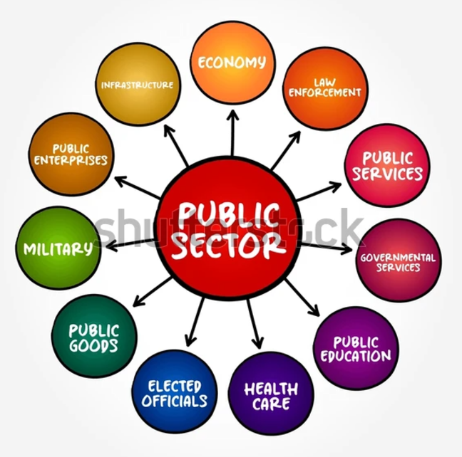
¿Cómo toma el Sector Público las decisiones que permiten aumentar el bienestar de un país?
El Sector Público busca el bienestar de los ciudadanos. Para 1 ello se centra en conseguir tres objetivos:
- Eficiencia: Ser eficiente consiste en aprovechar los recursos de la mejor manera posible.
- Equidad: Se busca una distribución más justa de la riqueza para que todos tengan oportunidades.
- Estabilidad: El Sector Público trata de evitar épocas de crisis.
Flujo circular de la renta
¿Alguna vez te has preguntado cómo funciona la economía? ¿Cómo es que los bienes y servicios llegan a nuestras manos y cómo se genera el dinero que necesitamos para adquirirlos? La respuesta a estas preguntas se encuentra en un modelo económico fundamental: el flujo circular de la renta.
Imagina la economía como un gran circuito donde el dinero fluye constantemente entre dos grupos principales: las familias y las empresas. Las familias proporcionan a las empresas los recursos necesarios para producir (trabajo, tierra y capital), a cambio de un salario. Con esos recursos, las empresas producen bienes y servicios que luego venden a las familias. El dinero que las familias pagan por esos bienes vuelve a las empresas, completando así el ciclo.
¿Por qué es circular este flujo?
| El flujo es circular porque el dinero que las empresas obtienen de las familias al venderles bienes, lo utilizan para pagar a las familias por los factores productivos (trabajo, tierra y capital) que necesitan para seguir produciendo. A su vez, las familias utilizan el dinero que reciben de las empresas para comprar nuevos bienes, y así sucesivamente. Es como una rueda que gira constantemente. |
Dos tipos de mercados y dos tipos de flujos
Para entender mejor cómo funciona este flujo, es importante distinguir dos tipos de mercados:
- Mercado de bienes: Aquí, las familias son los compradores y las empresas los vendedores. Las familias adquieren los bienes y servicios que necesitan (alimentos, ropa, etc.) y las empresas obtienen el dinero a cambio.
- Mercado de factores: En este mercado, las familias ofrecen su trabajo, tierra y capital a las empresas. Las empresas, a su vez, compran estos factores productivos y pagan a las familias salarios, alquileres, intereses y dividendos.
La intervención del sector público en el flujo circular de la renta
Si introducimos al Estado en este análisis, vemos que su papel es fundamental. El Estado actúa de tres formas principales:
- Como empresa: Contrata trabajadores (funcionarios públicos) y utiliza recursos (edificios públicos) para producir bienes y servicios públicos (educación, sanidad, etc.).
- Como familia: Compra bienes y servicios a las empresas (material de oficina, mobiliario, etc.).
- Como regulador fiscal: Obtiene ingresos a través de los impuestos y utiliza esos fondos para realizar transferencias a familias y empresas (ayudas, subvenciones).
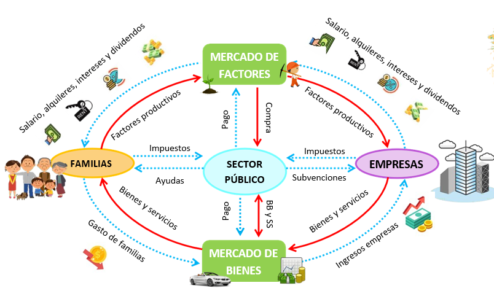
SDA 7. El juego económico del mercado
El mecanismo del mercado
¿Alguna vez te has preguntado por qué el precio de los langostinos se dispara en Navidad o por qué los hoteles son más caros en verano? La respuesta a estas preguntas, y a muchas otras relacionadas con los precios, se encuentra en un concepto fundamental de la economía: la oferta y la demanda.
¿Qué es un mercado?
Cuando pensamos en un mercado, lo primero que se nos viene a la mente es un lugar físico, como un mercado de abastos. Sin embargo, el concepto de mercado va más allá.
| Un mercado es cualquier espacio, ya sea físico o virtual, donde compradores y vendedores intercambian bienes o servicios. |
Puede ser desde un puesto de frutas hasta una plataforma de comercio electrónico.
En cualquier mercado, hay tres actores principales:
- Los compradores: Son quienes demandan los productos o servicios. La cantidad que están dispuestos a comprar depende del precio.
- Los vendedores: Son quienes ofrecen los productos o servicios. La cantidad que ofrecen también depende del precio.
- El precio: Es el valor monetario que se asigna a un bien o servicio. El precio se determina por la interacción entre la oferta y la demanda.
¿Cómo funciona la oferta y la demanda?
Imagínate un mercado de manzanas. Si hay muchas manzanas disponibles y pocas personas quieren comprarlas, el precio bajará. Por el contrario, si hay pocas manzanas y mucha gente las quiere, el precio subirá. Este es un ejemplo sencillo de cómo la oferta y la demanda influyen en los precios.
En una economía de mercado, como la nuestra, nadie nos dice qué debemos comprar ni a qué precio. Somos los consumidores, a través de nuestras decisiones de compra, quienes determinamos qué productos se producen y a qué precio se venden.
Imaginemos que de repente, sin previo aviso, todo el mundo quiere más pan. ¿Cómo se enteran las panaderías de que necesitan producir más? La respuesta está en los precios.
1. El precio es un acuerdo entre compradores y vendedores: Tanto los compradores como los vendedores buscan obtener el mejor trato posible. Los compradores quieren pagar lo menos posible, mientras que los vendedores desean ganar lo más que puedan. A través de este tira y afloja, se establece un precio que satisfaga a ambos. Si el precio es demasiado alto, nadie comprará. Si es demasiado bajo, a los vendedores no les resultará rentable producir más.
2. Los precios son señales: Cuando un producto escasea, los consumidores están dispuestos a pagar más por él. Este aumento en el precio es una señal para los productores: hay una demanda insatisfecha y pueden aumentar su producción. Por el contrario, si un producto no se vende, los precios bajarán, indicando que hay un exceso de oferta.
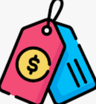
3. Los precios son incentivos: Los precios altos incentivan a los productores a aumentar su producción. Al ganar más dinero, pueden invertir en nuevas fábricas o contratar más trabajadores. Por otro lado, los precios bajos desalientan la producción, ya que no es rentable producir algo que nadie quiere comprar.
¿Por qué es importante la libertad de mercado?
La libertad de mercado fomenta la competencia, la innovación y la eficiencia. Al permitir que los precios se ajusten libremente, el mercado garantiza que los recursos se asignen de manera eficiente y que los consumidores tengan acceso a una amplia variedad de productos a precios competitivos.
Sin embargo, la libertad de mercado no es perfecta. Existen situaciones en las que la intervención del gobierno puede ser necesaria para corregir ciertas fallas del mercado, como los monopolios o las externalidades.
La oferta y la demanda
La demanda
Para entender cómo funcionan los mercados, necesitamos comprender tres conceptos clave: la demanda, la oferta y el punto de equilibrio entre ambas.
¿Qué es la demanda?
Imaginemos que quieres comprar unas zapatillas que has visto en una tienda. Te las pruebas y te encantan, pero cuando vas a pagar te das cuenta de que están rebajadas. ¡Qué suerte! Sin embargo, al llegar a caja, te encuentras con una sorpresa: la rebaja es aún mayor de lo que pensabas. Esto te lleva a comprar más de un par, porque el precio es tan bueno que es una oportunidad que no puedes dejar pasar.
¿Qué ha ocurrido aquí? Pues que has entrado en juego con la ley de la demanda. La demanda no es solo la cantidad de productos que se venden, sino también cómo esa cantidad cambia en función del precio. Si el precio baja, normalmente la demanda aumenta, y viceversa.
¿Por qué es importante la demanda?
La demanda es fundamental para las empresas, ya que les indica qué productos fabricar y en qué cantidad. Si hay una alta demanda de un producto, las empresas aumentarán su producción para satisfacer a los consumidores. Por el contrario, si la demanda es baja, las empresas reducirán su producción o incluso dejarán de fabricar ese producto.
| La demanda de un bien o servicio representa la cantidad que los consumidores desean adquirir a un precio determinado en un momento específico. Es decir, la demanda refleja el deseo de los consumidores de obtener un producto y su disposición a pagar por él. |
Es importante destacar que la demanda no es estática, sino que varía en función de diversos factores, como:
- El precio del bien: La relación inversa entre el precio y la cantidad demandada es uno de los principios fundamentales de la economía. A medida que el precio de un bien aumenta, la cantidad demandada tiende a disminuir, y viceversa.
- El ingreso de los consumidores: Los consumidores con mayores ingresos suelen demandar una mayor cantidad de bienes y servicios.
- Los gustos y preferencias de los consumidores: Los cambios en los gustos y preferencias pueden influir significativamente en la demanda de ciertos productos.
- El precio de los bienes sustitutos y complementarios: Los bienes sustitutos son aquellos que pueden reemplazar a otro bien, mientras que los bienes complementarios son aquellos que se consumen conjuntamente. Los cambios en los precios de estos bienes pueden afectar la demanda del bien en cuestión.
- Las expectativas de los consumidores: Las expectativas sobre futuros cambios en el precio o en la disponibilidad de un bien pueden influir en las decisiones de compra de los consumidores.
Introduciendo el concepto de curva de demanda
| La relación entre el precio y la cantidad demandada puede representarse gráficamente a través de una curva de demanda. Esta curva es descendente, lo que refleja la ley de la demanda: a medida que el precio aumenta, la cantidad demandada disminuye. |
La curva de demanda es una herramienta útil para analizar cómo responden los consumidores a los cambios en el precio de un bien. Además, permite identificar los factores que desplazan la curva de demanda, es decir, los factores que provocan cambios en la cantidad demandada a cada nivel de precio.
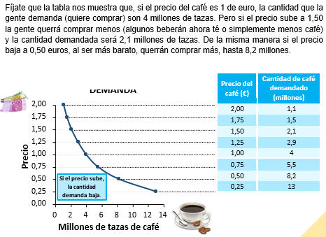
La oferta
| La oferta de un bien o servicio representa la cantidad que los productores están dispuestos a vender a un precio determinado en un momento específico. Es decir, la oferta refleja la decisión de las empresas de producir y poner a la venta un producto. |
Varios factores influyen en la oferta de un bien, entre ellos:
- El precio del bien: Existe una relación directa entre el precio de un bien y la cantidad ofertada. A medida que el precio aumenta, los productores tienen mayores incentivos para aumentar su producción, ya que obtienen mayores beneficios.
- El costo de producción: Los costos de producción, como los costos de materias primas, mano de obra y energía, afectan directamente la oferta. Si los costos de producción aumentan, los productores estarán dispuestos a ofrecer una menor cantidad a cada precio.
- La tecnología: Los avances tecnológicos pueden reducir los costos de producción y aumentar la eficiencia, lo que permite a las empresas ofrecer una mayor cantidad de bienes a precios más bajos.
- Los precios de otros bienes: Si los precios de otros bienes que pueden producir las empresas aumentan, es posible que estas decidan producir más de esos bienes y menos del bien en cuestión.
- Las expectativas de los productores: Las expectativas de los productores sobre futuros cambios en los precios o en las condiciones del mercado pueden influir en sus decisiones de producción.
Introduciendo el concepto de curva de oferta
| La relación entre el precio y la cantidad ofertada puede representarse gráficamente a través de una curva de oferta. Esta curva es ascendente, lo que refleja la ley de la oferta: a medida que el precio aumenta, la cantidad ofertada también aumenta. |
La curva de oferta es una herramienta útil para analizar cómo responden los productores a los cambios en el precio de un bien. Además, permite identificar los factores que desplazan la curva de oferta, es decir, los factores que provocan cambios en la cantidad ofertada a cada nivel de precio.
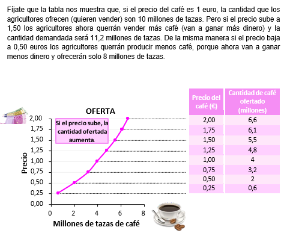
El equilibrio de mercado
| El equilibrio de mercado representa un estado en el que la cantidad demandada de un bien es igual a la cantidad ofertada. Es decir, en el punto de equilibrio, los deseos de los consumidores y los productores coinciden, y se establece un precio que satisface a ambas partes. |
Este equilibrio es dinámico y puede verse afectado por cambios en diversos factores, como:
- Cambios en la demanda: Un aumento en la demanda desplazará la curva de demanda hacia la derecha, lo que provocará un aumento tanto del precio como de la cantidad de equilibrio.
- Cambios en la oferta: Un aumento en la oferta desplazará la curva de oferta hacia la derecha, lo que provocará una disminución del precio y un aumento de la cantidad de equilibrio.
- Cambios en los costos de producción: Un aumento en los costos de producción desplazará la curva de oferta hacia la izquierda, lo que provocará un aumento del precio y una disminución de la cantidad de equilibrio.
- Cambios en las preferencias de los consumidores: Los cambios en los gustos y preferencias de los consumidores pueden desplazar la curva de demanda, alterando el equilibrio del mercado.
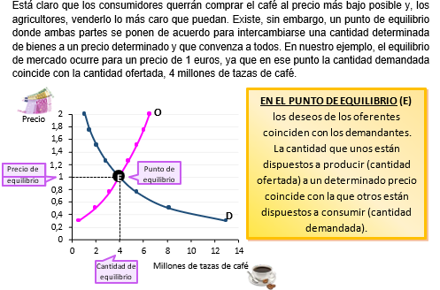
Analizando las consecuencias de los desequilibrios
Cuando el mercado no se encuentra en equilibrio, surgen tensiones que impulsan al mercado a ajustarse y alcanzar un nuevo equilibrio.
- Exceso de demanda: Si el precio de mercado es inferior al precio de equilibrio, se producirá un exceso de demanda. Esto significa que los consumidores demandarán más cantidad del bien de la que los productores están dispuestos a ofrecer. Como consecuencia, el precio tenderá a aumentar hasta que se alcance el equilibrio.
- Exceso de oferta: Si el precio de mercado es superior al precio de equilibrio, se producirá un exceso de oferta. Esto significa que los productores ofrecerán una mayor cantidad del bien de la que los consumidores están dispuestos a comprar. Como consecuencia, el precio tenderá a disminuir hasta que se alcance el equilibrio.
¿Todos los mercados funcionan de la misma manera?
Elementos que influyen en cómo funcionan los mercados:
Hemos visto cómo se establecen los precios en un mercado y cómo se llega a un punto de equilibrio donde la cantidad demandada y la ofertada coinciden. Pero, ¿ocurre lo mismo en todos los mercados? La respuesta es no.
Varios factores influyen en la forma en que los precios se fijan y en el equilibrio de un mercado. Estos elementos son:
Número de empresas en el mercado
- Muchos vendedores: En mercados con muchos vendedores (como las panaderías), es más difícil que una empresa suba mucho el precio, ya que los consumidores tienen muchas alternativas para comprar el producto más barato.
- Pocos vendedores: En mercados con pocos vendedores (como las compañías de telefonía móvil), las empresas suelen fijar precios más altos. La razón es simple: como tenemos pocas opciones, las empresas aprovechan para subir los precios. Esto pasa con las compañías telefónicas, al existir pocas empresas, las tarifas son más altas.
La diferenciación de los productos:
- Productos homogéneos: Cuando los productos de las empresas son idénticos (como los tomates), es difícil para una empresa diferenciar su producto y justificar un precio más alto.
- Productos diferenciados: Cuando los productos de las empresas son diferentes (como los coches), las empresas pueden cobrar precios más altos porque los consumidores perciben un beneficio en su producto y están dispuestos a pagar más por él. Esto ocurre con el iPhone o la Coca-Cola, como la gente los ve diferentes a los demás, estas empresas pueden subir sus precios.
Existencia de barreras de entrada al mercado:
- Barreras bajas: En algunos mercados, es muy fácil que una nueva empresa entre a competir (cualquiera puede, por ejemplo, montar una panadería).
- Barreras altas: En otros mercados, las empresas pueden tener ventajas que dificultan la entrada de nuevos competidores. Por ejemplo, se necesitan licencias legales para entrar en un mercado (como en el caso de los taxis), o se requiere una tecnología específica (como en el caso de los ordenadores).
Las empresas tienen más capacidad para aumentar los precios cuando:
- Hay un menor número de vendedores en el mercado.
- Los productos son más diferenciados.
- Existen barreras que impiden la entrada de competidores.
- Hay poca información en el mercado.
Tipos de mercados
Dependiendo de las características y condiciones de un mercado, las empresas tienen diferente capacidad para influir en los precios. Esto nos lleva a dos grandes tipos de mercados:
1. Mercados competitivos o de competencia perfecta:
En estos mercados, las empresas no pueden manipular los precios a su antojo. La competencia es tan fuerte que si una empresa sube sus precios, los consumidores simplemente comprarán a otra empresa. Esto se debe a que:
- Muchos vendedores: Hay muchas empresas ofreciendo el mismo producto.
- Productos idénticos: Los productos son prácticamente iguales, sin diferencias significativas.
- Libre entrada y salida: Cualquier empresa puede entrar o salir del mercado fácilmente.
- Información perfecta: Los consumidores conocen todos los precios y características de los productos.
Un ejemplo de mercado competitivo es el de las panaderías. Si una panadería sube el precio del pan, los consumidores simplemente comprarán a otra panadería más barata.
2. Mercados no competitivos o de competencia imperfecta:
En estos mercados, las empresas tienen cierto poder para influir en los precios. Esto ocurre cuando:
- Pocos vendedores: Hay pocas empresas en el mercado. Si hay pocas empresas, los consumidores tienen pocas opciones y pueden verse obligados a pagar precios más altos.
- Productos diferenciados: Los productos de cada empresa tienen características únicas que los hacen diferentes a los de la competencia. Si los productos son muy diferentes, los consumidores pueden estar dispuestos a pagar más por un producto específico.
- Barreras de entrada: Existen obstáculos que dificultan la entrada de nuevas empresas al mercado, como requerir grandes inversiones o licencias.
Ejemplos de mercados no competitivos son el mercado de los teléfonos móviles (donde pocas empresas dominan) o el mercado de los automóviles (donde las marcas tienen productos diferenciados).
Tipos de mercados no competitivos:
- Monopolio: Existe una única empresa que controla todo el mercado. Por ejemplo, hasta 2021 en España, Renfe era la única empresa de trenes.
- Oligopolio: Un pequeño grupo de empresas domina el mercado. Por ejemplo, las empresas de refrescos cola.
- Competencia monopolística: Muchas empresas compiten, pero cada una ofrece un producto ligeramente diferenciado. Por ejemplo, el mercado de los restaurantes.
La distribución de la riqueza
¿Alguna vez te has preguntado por qué algunas personas tienen mucho dinero y otras muy poco? La distribución de la riqueza es un tema complejo que influye en nuestras vidas de muchas maneras.
¿Cómo decide el mercado quién gana más?
El mercado, ese sistema económico donde se compran y venden bienes y servicios, juega un papel fundamental en la distribución de la riqueza. Básicamente, el mercado recompensa a las personas en función de:
- Los factores productivos que poseen: Esto incluye cosas como el trabajo, la tierra, el capital (dinero para invertir) y la capacidad de emprender nuevos negocios.
- La escasez de esos factores: Si un recurso es escaso y muy demandado, las personas que lo poseen pueden cobrar más por él. Por ejemplo, los programadores suelen ganar más que los dependientes de supermercado porque hay menos programadores cualificados.
- La contribución a la producción: Aquellos que producen bienes y servicios más valiosos o en mayor cantidad suelen obtener mayores ingresos. Por ejemplo, un futbolista famoso gana mucho dinero porque su talento genera grandes ingresos para los equipos y las marcas.
¿Por qué hay tanta desigualdad?
La desigualdad en la distribución de la riqueza se debe a varios factores:
- Herramientas y habilidades: Las personas que tienen una buena educación, habilidades técnicas o acceso a capital tienen más oportunidades de generar ingresos.
- El mercado laboral: Los salarios están influenciados por la oferta y la demanda de trabajadores. Los trabajos que requieren habilidades especializadas suelen estar mejor remunerados.
- La concentración de la riqueza: A medida que el tiempo pasa, la riqueza tiende a concentrarse en manos de unas pocas personas. Esto se debe a que aquellos que tienen más dinero pueden invertirlo y generar aún más riqueza.
¿Es justa esta distribución?
Aunque a menudo se nos dice que el éxito es fruto del esfuerzo individual, la realidad es mucho más compleja. No todos partimos de la misma línea de salida. Existen factores que influyen en nuestras posibilidades de éxito y que están más allá de nuestro control. Estos factores crean lo que conocemos como desigualdad de oportunidades.
¿Qué factores influyen en nuestras oportunidades?
- Origen familiar: Las personas que nacen en familias con mayores recursos económicos suelen tener acceso a una mejor educación, a redes de contactos más amplias y a mayores oportunidades de inversión. Esto les permite acumular más riqueza y transmitirla a las siguientes generaciones, perpetuando así la desigualdad.
- Capacidades y talentos: No todas las personas nacemos con las mismas habilidades o talentos. Algunos tienen una mayor facilidad para ciertas áreas, como las matemáticas o las lenguas, lo que les abre las puertas a determinados trabajos bien remunerados.
- Suerte: A veces, el azar juega un papel importante en nuestras vidas. Un golpe de suerte, como ganar la lotería o recibir una herencia inesperada, puede cambiar drásticamente nuestras circunstancias. Por otro lado, eventos desafortunados, como perder el empleo o enfermar gravemente, pueden dejarnos en una situación económica precaria.
¿Quiénes son excluidos por el mercado?
- Personas que no pueden trabajar: Niños, ancianos, personas con discapacidad y quienes se encuentran desempleados por motivos ajenos a su voluntad (como la falta de oportunidades laborales o la automatización de empleos) quedan fuera del sistema de recompensas del mercado.
- Trabajadores no remunerados: Personas que realizan tareas esenciales para la sociedad, como el cuidado de niños o de personas mayores, pero que no reciben un salario a cambio.
¿Por qué ocurre esto?
El mercado, al basarse en la oferta y la demanda, tiende a valorar más aquellos bienes y servicios que generan mayores ganancias. Sin embargo, no todos los trabajos o labores son fácilmente cuantificables en términos monetarios. Por ejemplo, el trabajo de un cuidador o de un maestro es fundamental para la sociedad, pero no siempre se traduce en altos ingresos.
¿Qué consecuencias tiene esta exclusión?
La exclusión de ciertos grupos del mercado puede generar desigualdad social, pobreza y otros problemas sociales. Además, puede llevar a una sociedad menos justa y equitativa.
- Mayor desigualdad en la distribución de la riqueza: La desigualdad de oportunidades contribuye a una mayor concentración de la riqueza en manos de unos pocos. Esto genera una sociedad más polarizada y con mayores tensiones sociales.
- Pobreza: La falta de oportunidades lleva a que muchas personas vivan en condiciones de pobreza o pobreza relativa, lo que limita sus posibilidades de desarrollo y bienestar.
- Dificultades educativas: Las personas con menos recursos económicos suelen tener dificultades para acceder a una educación de calidad, lo que limita sus oportunidades laborales.
- Problemas de salud: La pobreza se asocia a una peor salud física y mental, debido a una alimentación inadecuada, un acceso limitado a servicios sanitarios y mayores niveles de estrés.
- Exclusión social: Las personas con menos recursos pueden sentirse excluidas de muchas actividades sociales y culturales, lo que limita sus oportunidades de desarrollo personal.
¿Qué podemos hacer al respecto?
Esta es una pregunta que cada uno debe responder por sí mismo. Sin embargo, es importante estar informado sobre cómo funciona el sistema económico y cómo las políticas públicas pueden influir en la distribución de la riqueza:
- Educación y formación: Invertir en educación y formación puede ayudar a las personas a adquirir las habilidades necesarias para obtener mejores empleos.
- Políticas laborales: Las políticas laborales pueden ayudar a garantizar salarios justos y condiciones de trabajo dignas.
- Impuestos progresivos: Los impuestos progresivos gravan a las personas con mayores ingresos a tasas más altas, lo que puede ayudar a reducir la desigualdad.
- Programas de asistencia social: Los programas de asistencia social pueden ayudar a las personas con menos recursos a satisfacer sus necesidades básicas.
¿Qué es la equidad?
A menudo confundimos igualdad con equidad. Aunque ambos conceptos están relacionados con la justicia, no significan lo mismo.
- Igualdad: Significa dar a todos lo mismo, sin importar las circunstancias o necesidades individuales.
- Equidad: Se refiere a dar a cada persona lo que necesita o merece, considerando sus circunstancias y contribuciones.
¿Por qué una sociedad busca la equidad?
Las personas valoran la justicia. Por ejemplo, imagina que realizas un trabajo en equipo y obtienes una recompensa. Es lógico pensar que esta recompensa se distribuya de forma justa, considerando el esfuerzo y la contribución de cada miembro del equipo. Si alguien ha trabajado más o ha aportado ideas más valiosas, es razonable que obtenga una mayor recompensa.
¿Cómo conseguimos la equidad?
Para conseguir la equidad, es importante que todos tengamos las mismas oportunidades de partida. Esto implica que se deben eliminar las barreras que impiden a algunas personas alcanzar su potencial.
Algunas medidas que permiten igualar las oportunidades son:
- Educación gratuita y de calidad: Garantizar que todos, independientemente de sus recursos, tengan acceso a una educación de calidad.
- Sanidad universal: Asegurar que todos tengan acceso a servicios de salud, evitando así que las personas por alguna circunstancia se queden sin atención médica.
- Ayudas al empleo: Ofrecer ayudas económicas para poder afrontar el desempleo, facilitar la formación y el acceso al mercado laboral.
¿Por qué es difícil lograr la equidad?
Aunque estas medidas son necesarias, el pago de los impuestos que las financian puede generar debate. ¿Es justo que todos paguen los mismos impuestos? Algunos argumentan que quienes tienen más recursos deberían contribuir en mayor medida, mientras que otros consideran que todos deberían aportar por igual.
No existe una respuesta única a esta pregunta. Lo importante es encontrar un equilibrio entre la justicia y la eficiencia económica, asegurando que todos tengan oportunidades de desarrollo y que la sociedad en su conjunto se beneficie.
SDA 8. Finanzas personales I: Ahorro, consumo y el reto de la deuda
Consumo y ahorro
¿Gastar ahora o ahorrar para después?
María, como muchos, prefiere gastar su dinero en el momento. Pero ¿qué pasa cuando queremos algo y no tenemos suficiente? Ahí es cuando entra en juego la decisión de consumir ahora o ahorrar para el futuro.
¿Qué es el consumo?
| Consumir es utilizar nuestro dinero para comprar cosas que queremos o necesitamos. Todos disfrutamos de tener el último modelo de teléfono o la ropa de moda. Sin embargo, gastar demasiado puede llevarnos a problemas económicos. |
¿Y el ahorro?
| Ahorrar es guardar una parte de nuestro dinero para el futuro. Es como plantar una semilla: hoy sacrificamos un poco para tener una gran cosecha más adelante. Al ahorrar, nos aseguramos de poder alcanzar nuestras metas, como comprar un coche o viajar. |
¿Por qué es importante ahorrar?
Imaginemos que María quería ir de viaje pero no tenía suficiente dinero. Si hubiera ahorrado un poco cada mes, podría haber pagado el viaje sola. Ahorrar nos da libertad financiera y nos permite disfrutar de las cosas que realmente queremos.
¿Y si no ahorro?
A menudo pensamos que podemos postergar el ahorro y pedir dinero prestado cuando lo necesitemos. Sin embargo, esta decisión tiene consecuencias.
Ahorro vs. Deuda
La deuda es como un adelanto: te permite disfrutar de algo ahora, pero tendrás que pagarlo más adelante, con intereses. Imaginemos que quieres comprar un coche. Puedes ahorrar poco a poco durante meses o pedir un préstamo para comprarlo de inmediato.
Si optas por la deuda, tendrás el coche antes, pero también tendrás que pagar intereses adicionales. Esto significa que, a largo plazo, habrás gastado más dinero del que habrías gastado si hubieras ahorrado.
¿Cuál es la mejor opción?
Ahorrar te brinda mayor libertad financiera. Al no tener deudas, no tendrás que preocuparte por pagos mensuales y podrás disfrutar de tus compras sin la presión de tener que pagar intereses.
Los beneficios del ahorro
Ahorrar es mucho más que simplemente guardar dinero. Es una herramienta fundamental para construir un futuro sólido y alcanzar tus metas. Al establecer el hábito de ahorrar, estarás creando un colchón financiero que te protegerá de imprevistos y te brindará la libertad de tomar decisiones importantes sin depender de terceros.
¿Por qué es tan importante ahorrar?
- Seguridad financiera: Un fondo de emergencia te permitirá afrontar gastos inesperados, como reparaciones en el hogar, problemas de salud o pérdidas de empleo, sin tener que recurrir a préstamos o endeudarte.
- Alcanzar tus metas: Ya sea comprar una casa, un coche, viajar o iniciar un negocio, ahorrar te permitirá financiar tus proyectos a largo plazo sin depender de terceros.
- Inversión: Al ahorrar, tendrás la oportunidad de invertir tu dinero y hacerlo crecer a través de diferentes instrumentos financieros. Esto te permitirá generar ingresos pasivos y aumentar tu patrimonio.
- Tranquilidad mental: Saber que tienes un respaldo económico te brindará una mayor sensación de seguridad y te permitirá disfrutar más del presente sin preocuparte por el futuro.
- Independencia financiera: A largo plazo, el ahorro te permitirá alcanzar la independencia financiera y tomar decisiones basadas en tus propias necesidades y deseos, sin estar sujeto a las limitaciones económicas.
¿Cuánto dinero debo ahorrar?
La cantidad ideal de ahorro varía según cada persona y sus circunstancias. Factores como la estabilidad de tus ingresos, tus propiedades y tu estado de salud influyen en la cantidad que deberías ahorrar.
- Estabilidad laboral: Si tienes un trabajo seguro, puedes ahorrar menos que alguien con un empleo inestable.
- Patrimonio: Si tienes propiedades, puedes contar con ellas en caso de necesidad, lo que te permite ahorrar menos.
- Salud: Si tienes problemas de salud, es recomendable ahorrar más para cubrir posibles gastos médicos futuros.
Una regla general: Se recomienda ahorrar al menos un 10% de tus ingresos mensuales.
Fondo de emergencia
Tener un colchón financiero
¿Qué es un fondo de emergencia?
| Un fondo de emergencia es un colchón económico que creamos para cubrir gastos inesperados. Imagínate que tu coche se avería o pierdes tu trabajo. Con un fondo de emergencia, podrás afrontar estas situaciones sin tener que pedir dinero prestado. |
¿Por qué es importante?
Un fondo de emergencia te da tranquilidad y seguridad. Te permite mantener tu estilo de vida en caso de imprevistos y te brinda la libertad de tomar decisiones importantes sin presiones económicas.
¿Cuánto necesito ahorrar?
La cantidad ideal depende de tus gastos mensuales. Se recomienda tener ahorrado el equivalente a entre 3 y 6 meses de gastos. Si tienes un trabajo inestable, lo ideal es tener ahorrado el equivalente a 9 o 12 meses de gastos.
¿Dónde guardar tu fondo de emergencia?
Cuando tienes dinero ahorrado, es tentador invertirlo para que crezca. Sin embargo, el fondo de emergencia es para imprevistos, así que debe estar siempre disponible.
- Cuenta de ahorro: Es la opción más segura, aunque la rentabilidad suele ser baja.
- Depósito a plazo fijo: Ofrece mayor rentabilidad, pero el dinero queda bloqueado por un tiempo.
¡No inviertas en acciones! Son demasiado riesgosas para un fondo de emergencia.
Presupuesto
¿Qué es un presupuesto?
| Un presupuesto es un plan detallado de nuestros ingresos y gastos. Nos ayuda a controlar nuestro dinero y a alcanzar nuestras metas financieras. |
¿Para qué sirve un presupuesto?
- Conocer nuestros gastos: Al llevar un registro de nuestros gastos, podemos identificar en qué gastamos más dinero y tomar decisiones más informadas.
- Priorizar: Un presupuesto nos ayuda a establecer prioridades y a decidir en qué queremos gastar nuestro dinero.
- Ahorrar para conseguir objetivos: Imagina que tus primos quieren comprarse una consola de videojuegos. Si ahorran 20 euros al mes durante 12 meses, lograrán su objetivo. El presupuesto les ayuda a planificar y alcanzar sus metas.
- Vivir dentro de nuestras posibilidades: Si quieres comprarte una casa pero tus ingresos no te lo permiten, un presupuesto te ayudará a entender tus límites y evitar endeudarte.
- Llevar un control y no desviarnos: Si siempre te quedas sin dinero al final del mes, un presupuesto te ayudará a controlar tus gastos y a ahorrar.
¿Cómo hacer un presupuesto?
El primer paso para controlar tu dinero es conocer tus ingresos y gastos. Haz una lista detallada de todo lo que ganas y en qué te gastas el dinero. No te olvides de incluir hasta los gastos más pequeños.
Una vez que tengas esta información, el segundo paso es priorizar tus gastos. Distingue entre los gastos necesarios (como la renta) y los que puedes reducir (como el ocio).
Gastos fijos obligatorios: Son aquellos que debes pagar sí o sí cada mes, como la hipoteca, los seguros o los impuestos. No puedes evitarlos.
Gastos variables necesarios: Estos gastos son imprescindibles para vivir, pero puedes buscar formas de reducirlos. Por ejemplo, puedes comparar precios antes de comprar.
Gastos discrecionales: Son gastos que puedes eliminar si quieres ahorrar. Piensa si realmente necesitas salir a cenar con tus amigos cada fin de semana.
Tercer paso: Ahorro como un gasto fijo. Imagina que tus primos querían una consola. Para conseguirla, decidieron ahorrar una parte fija de su dinero cada mes. Así, al final del año, tenían el dinero suficiente.
Lo mismo aplica a tus finanzas. Al considerar el ahorro como un gasto fijo, aseguras que siempre tendrás dinero ahorrado, incluso antes de pagar otros gastos. Es como pagar una cuota mensual a ti mismo.
Cuarto paso: El presupuesto es un plan vivo. Cuando creas un presupuesto, es como hacer un mapa. Pero al igual que un mapa puede necesitar ajustes, tu presupuesto también. Con el tiempo, tus ingresos y gastos pueden cambiar. Por eso, es importante revisarlo regularmente y hacer los cambios necesarios.
¿Qué pasa si no llego a fin de mes?
Si te das cuenta de que te estás quedando corto, lo primero es identificar en qué estás gastando más de lo previsto. Luego, puedes reducir los gastos que no son esenciales para cubrir tus necesidades básicas.
Deudas
Imagínate que estás aplicando todas las recomendaciones de tu profesor de economía, logrando ahorrar dinero mes a mes. Eres realmente disciplinado con tus finanzas, y siempre logras acumular algo de dinero. Pero, ¿esto significa que nunca enfrentarás la necesidad de solicitar dinero prestado? ¡Qué más quisiéramos! La realidad es que a veces no podemos evitarlo.
¿Qué significa endeudarse?
| Cuando hablamos de deuda, nos referimos a una situación en la que una persona obtiene dinero de otra parte con el objetivo de adquirir bienes o servicios en el presente, con el compromiso de devolver ese dinero más adelante, generalmente con intereses adicionales. |
¿Cómo se relacionan las deudas con el ahorro?
La deuda puede entenderse como lo opuesto al ahorro. Mientras que el ahorro implica reservar dinero hoy para consumir en el futuro, la deuda nos permite disfrutar ahora a cambio de gastar más en el futuro.
Por ejemplo, supongamos que quieres comprar un coche cuyo precio es de 10.000 euros. Si decides ahorrar 500 euros al mes, te tomaría aproximadamente 20 meses acumular la cantidad necesaria. Sin embargo, si optas por solicitar un préstamo por los 10.000 euros, podrías tener el coche de inmediato, aunque después tendrías que dedicar 20 meses a devolver el préstamo, con intereses incluidos.
¿Es conveniente disfrutar de los bienes antes de pagarlos?
Aunque parecería ideal disfrutar de un bien sin esperar, el principal problema de las deudas es que, en realidad, no estás evitando el esfuerzo del ahorro, sino solo posponiéndolo. Al final, la cantidad que tendrás que devolver será mayor debido a los intereses que se aplican al dinero prestado. Es decir, aunque consigas lo que necesitas hoy, terminarás pagando más de lo que el bien costaba originalmente. Esto implica que, a largo plazo, te puede resultar más difícil mantener tus finanzas equilibradas. A pesar de todo, es común que las personas recurran a la deuda para cubrir grandes inversiones, como la compra de una vivienda o de un coche. Estas adquisiciones representan gastos elevados que son complicados de pagar de una sola vez. En casos de necesidad, pedir un préstamo puede ser útil, siempre que se haga de manera responsable y se tengan en cuenta las implicaciones a futuro.
Ventajas de endeudarse
Uno de los beneficios de acceder a una deuda es que te permite disponer de dinero de forma inmediata, lo cual puede ser útil para atender emergencias, adquirir bienes necesarios o mejorar tu calidad de vida en el presente.
Desventajas de endeudarse
No obstante, endeudarse tiene una serie de inconvenientes que deben considerarse con atención:
- Aumento de los gastos familiares: Al comprometerte con una deuda, añades pagos obligatorios a tu presupuesto, lo cual puede limitar tus recursos para otras necesidades o deseos.
- Costos adicionales: Cuando solicitas dinero prestado, no solo debes devolver la cantidad solicitada, sino también los intereses, lo que significa que terminarás pagando más dinero del que inicialmente recibiste.
Estos aspectos negativos no son insignificantes. De hecho, muchas familias enfrentan graves problemas financieros porque los pagos de sus deudas terminan siendo tan altos que no pueden cubrirlos. En situaciones extremas, esto ha llevado a algunas familias a perder sus propiedades o incluso sus hogares.
¿Cuál es el costo real de endeudarse?
Supongamos que decides pedir un préstamo para adquirir tu primer automóvil. Un banco te ofrece una tasa de interés variable del 3,7% TAE, mientras que otro te propone un interés nominal fijo del 5,2%. Además, algunos te indican que tendrás que pagar un porcentaje adicional del 4% y asumir otros costos relacionados, como las comisiones. Esto puede resultar confuso, sobre todo cuando no tienes claro qué oferta es la más conveniente. Por eso, es fundamental analizar cuidadosamente todos los aspectos antes de tomar una decisión. ¡Presta mucha atención!
¿Qué debemos tener en cuenta al solicitar una deuda?
El paso inicial al considerar un préstamo es entender con precisión cuáles serán los costos totales que tendrás que asumir, es decir, cuánto dinero adicional deberás pagar por el dinero prestado. Es esencial buscar opciones que sean manejables dentro de tu presupuesto personal o familiar. Por ejemplo, si tus ingresos mensuales son de 1.000 euros, sería irresponsable aceptar un préstamo que te obligue a destinar 700 euros al mes para cubrir sus costos.
Dentro de un préstamo, los costos se dividen principalmente en intereses, comisiones y otros gastos. A continuación, analizamos cada uno en detalle:
1. El interés nominal
Este es uno de los factores más relevantes en el costo de un préstamo. Básicamente, representa el porcentaje que te cobrarán por el dinero que recibas. Dependiendo de la naturaleza del préstamo, el interés nominal puede clasificarse en dos tipos principales:
A) Interés nominal fijo
Este tipo de interés permanece constante durante toda la duración del préstamo. Esto significa que, independientemente de las circunstancias, pagarás siempre el mismo porcentaje cada año. Su ventaja principal radica en que te ofrece seguridad y previsibilidad, ya que sabes exactamente cuánto deberás pagar. Sin embargo, en algunos casos, las tasas fijas pueden ser más elevadas que las variables.
B) Interés nominal variable
A diferencia del interés fijo, este puede aumentar o disminuir a lo largo del tiempo. Las variaciones dependen de factores externos como los cambios en el mercado financiero. En un principio, este tipo de interés puede parecer más atractivo, ya que suele comenzar siendo más bajo. Sin embargo, tiene el inconveniente de que introduce incertidumbre, ya que no es posible prever cuánto terminarás pagando en el futuro.
2. Comisiones
Además de los intereses, muchos préstamos incluyen diferentes tipos de comisiones. Estas suelen aplicarse por diversos conceptos, como el costo de apertura del préstamo o gastos administrativos. Aunque en algunos casos las comisiones pueden parecer pequeñas, cuando se suman al resto de los costos, pueden incrementar significativamente el monto total a pagar.
3. Otros gastos
Existen también otros costos asociados a algunos préstamos específicos, como los hipotecarios. Estos pueden incluir gastos notariales, tarifas de gestión o incluso la contratación de seguros obligatorios. Es importante tener en cuenta estos detalles, ya que pueden marcar una gran diferencia en el costo final.
La TAE y su importancia en la comparación de préstamos
Cuando necesitas evaluar diferentes opciones de préstamo, uno de los indicadores más útiles es la Tasa Anual Equivalente (TAE). Este porcentaje te muestra el costo total que tendrás que pagar por el dinero prestado, incluyendo tanto los intereses como las comisiones y otros gastos asociados. Es decir, la TAE no solo refleja el interés nominal, sino que también tiene en cuenta los costes adicionales, lo que permite tener una visión más clara y completa del préstamo.
¿Cómo se calcula la TAE?
La fórmula para determinar la TAE integra varios elementos:
- El interés nominal: Es el porcentaje básico que el banco o entidad financiera aplica sobre el dinero prestado.
- Las comisiones: Cargos adicionales que suelen incluirse por la gestión del préstamo, como la apertura.
- Otros gastos: Por ejemplo, seguros o costes administrativos asociados al crédito.
Al combinar estos factores, la TAE te ofrece un indicador único que facilita la comparación entre diferentes ofertas de préstamo.
Al combinar estos factores, la TAE te ofrece un indicador único que facilita la comparación entre diferentes ofertas de préstamo.
Aspectos clave para considerar al comparar préstamos con la TAE
Aunque en teoría un préstamo con una TAE más baja resultará más económico, existen ciertos elementos que deberías tener en cuenta antes de tomar una decisión:
El plazo del préstamo
Si el periodo de devolución es muy largo, aunque la TAE sea baja, acabarás pagando intereses durante más tiempo. Por eso, cuando compares préstamos, procura elegir aquellos que tengan plazos similares, ya que esto facilitará la comparación.
Diferencia entre TAE fija y TAE variable
Es importante prestar atención al tipo de TAE que se aplica. Si el interés es variable, puede fluctuar con el tiempo, lo que genera incertidumbre sobre cuánto pagarás realmente. Por otro lado, una TAE fija asegura que las condiciones permanecerán estables durante todo el periodo del préstamo.
Costes no incluidos en la TAE
Algunos gastos asociados al préstamo pueden no estar reflejados en la TAE. Esto ocurre principalmente con las hipotecas, donde suelen excluirse ciertos gastos, como los de notaría o seguros obligatorios. Es crucial identificar estos costes adicionales para evitar sorpresas.
Componentes de un préstamo
Pedir prestado
¿Necesitas dinero?
Cuando necesitamos un préstamo, encontramos una variedad de opciones, cada una con sus propias características y costos. Es importante conocer las diferencias para elegir la que mejor se adapte a nuestras necesidades y situación financiera.
Hipoteca: Este tipo de préstamo se utiliza principalmente para adquirir una vivienda. Al ofrecer la vivienda como garantía, las tasas de interés suelen ser más bajas que otros tipos de préstamos. Sin embargo, es un compromiso a largo plazo y requiere una evaluación cuidadosa de tu capacidad de pago.
- Ventajas: Tasas de interés generalmente más bajas, posibilidad de deducir los intereses de la hipoteca en la declaración de la renta.
- Desventajas: Compromiso a largo plazo, riesgo de perder la vivienda en caso de impago, trámites burocráticos.
Préstamos personales: Estos préstamos se otorgan para financiar gastos específicos, como la compra de un coche, viajes o estudios. Suelen tener plazos más cortos y tasas de interés más altas que las hipotecas, ya que no cuentan con una garantía tan sólida.
- Ventajas: Flexibilidad en el uso del dinero, plazos más cortos.
- Desventajas: Tasas de interés más altas, puede generar endeudamiento si no se gestiona correctamente.
Tarjetas de crédito: Las tarjetas de crédito permiten realizar compras a crédito y pagarlas posteriormente, ya sea al final del mes o en cuotas. Son muy populares debido a su comodidad, pero es importante utilizarlas con responsabilidad.
- Ventajas: Comodidad, posibilidad de aplazar pagos, acumulación de puntos o millas.
- Desventajas: Tasas de interés altas, especialmente si no se paga el saldo completo al final del mes, riesgo de endeudamiento excesivo.
Tarjetas de grandes superficies: Similares a las tarjetas de crédito, pero suelen estar vinculadas a una tienda o grupo de tiendas específico. Ofrecen descuentos y promociones exclusivas, pero también suelen tener tasas de interés elevadas y condiciones menos flexibles.
- Ventajas: Descuentos y promociones exclusivas, facilidad para realizar compras.
- Desventajas: Tasas de interés altas, puede limitar tus opciones de compra.
Descubiertos: Cuando gastas más dinero del que tienes en tu cuenta bancaria, entras en lo que se conoce como "números rojos" o "descubierto". Esto significa que le debes dinero al banco y tendrás que pagar intereses por este préstamo no solicitado.
Los intereses por descubierto suelen ser muy altos, lo que puede hacer que una pequeña deuda se convierta rápidamente en una bola de nieve difícil de pagar. Además, los bancos pueden cobrarte comisiones adicionales por entrar en números rojos.
¡Ojo con los despistes! Muchas veces, los descubiertos se producen por errores o descuidos, como olvidar que se ha realizado un pago o no tener actualizados los movimientos de la cuenta.
Créditos rápidos: ¿Por qué son peligrosos? Los créditos rápidos suelen tener tasas de interés muy altas, lo que significa que pagarás mucho más dinero del que pediste inicialmente. Además, los plazos de devolución suelen ser cortos, lo que puede dificultar la devolución del préstamo.
Un ejemplo: Si pides un crédito rápido de 1.000 euros con una TAE del 20%, podrías terminar pagando más del doble de esa cantidad en intereses.
¿Qué deuda puedo asumir?
¿Cómo evitar caer en la trampa de las deudas?
Emilio es un ejemplo claro de cómo las deudas pueden convertirse en una bola de nieve difícil de parar. Cuando adquirimos más deudas de las que podemos manejar, entramos en un ciclo vicioso del que es complicado salir.
¿Qué tipo de deudas debemos evitar?
- Deudas que superen nuestra capacidad de pago: Si las cuotas mensuales de nuestros préstamos son demasiado altas, podemos tener dificultades para cubrir otros gastos importantes como la alimentación o el alquiler.
- Deudas con intereses excesivos: Los intereses altos pueden hacer que el costo total de un préstamo se dispare, haciendo que sea más difícil de pagar.
- Deudas por bienes no esenciales: Comprar a crédito bienes que no necesitamos puede llevarnos a endeudarnos innecesariamente y dificultar nuestra estabilidad financiera.
¿Qué tipo de deudas pueden ser beneficiosas?
En algunos casos, las deudas pueden ser una inversión. Por ejemplo, un préstamo para comprar una vivienda o para iniciar un negocio puede generar ingresos a largo plazo.
Límites saludables de endeudamiento
¿Cuánto es demasiado endeudamiento?
Tener deudas no siempre es malo, pero es importante saber hasta dónde podemos llegar sin poner en riesgo nuestra estabilidad financiera. Una regla general es que los pagos mensuales de tus deudas (sin contar la hipoteca) no deberían superar el 15% de tus ingresos mensuales. La hipoteca, por su parte, no debería superar el 30% de tus ingresos.
¿Por qué estos límites?
- Flexibilidad financiera: Si dedicas una gran parte de tus ingresos a pagar deudas, tendrás menos dinero disponible para imprevistos, ahorros o disfrutar de la vida.
- Estrés financiero: Un alto nivel de endeudamiento puede generar estrés y ansiedad.
- Dificultad para obtener crédito: Si tienes muchas deudas, los bancos y otras entidades financieras pueden ser reticentes a prestarte dinero en el futuro.
Acciones a tomar ante el sobreendeudamiento
Si te encuentras en una situación en la que tus deudas superan tu capacidad de pago, no te desanimes. Hay varias acciones que puedes tomar para salir de esta situación:
- Ajustar tu presupuesto: Reducir gastos innecesarios, como salidas, compras por impulso o suscripciones, te permitirá destinar más dinero al pago de tus deudas.
- Reunificar tus deudas: Esta opción consiste en agrupar todos tus préstamos en uno solo, con una cuota mensual más baja y un interés menor. Sin embargo, el plazo del préstamo suele ser más largo, lo que significa que pagarás más intereses a largo plazo.
- Negociar con los acreedores: Puedes intentar negociar con los bancos o entidades financieras para conseguir mejores condiciones de pago, como una reducción de los intereses o un aumento del plazo.
- Buscar ayuda profesional: Si la situación es muy complicada, puedes acudir a una entidad de asesoramiento financiero para que te ayuden a elaborar un plan de pagos y negociar con tus acreedores.
Las consecuencias de no cumplir con tus obligaciones
Si no pagas tus deudas, además de los intereses y posibles embargos, puedes enfrentarte a otra consecuencia importante: ser incluido en una lista de morosos.
Esta lista es un registro público al que tienen acceso entidades como bancos, aseguradoras y compañías de servicios. Al aparecer en ella, tendrás dificultades para acceder a nuevos créditos, contratar seguros o incluso contratar servicios básicos como el teléfono o la luz. Esto se debe a que las empresas consultan estas listas para evaluar el riesgo crediticio de sus potenciales clientes y, si detectan que eres moroso, es probable que te denieguen sus servicios.
Etapas de la vida y necesidades económicas
A lo largo de nuestra vida, nuestras necesidades económicas evolucionan de manera constante, adaptándose a las diferentes etapas y responsabilidades que enfrentamos. Desde la infancia, cuando aprendemos conceptos básicos como el valor del dinero y la importancia de ahorrar, hasta la adultez, cuando tomamos decisiones financieras de mayor envergadura, como adquirir una vivienda o planificar la jubilación, la gestión de nuestros recursos es fundamental.
Infancia y adolescencia: En estas primeras etapas, los niños y adolescentes comienzan a desarrollar una relación con el dinero. A través de pequeñas cantidades que reciben como regalo o por realizar tareas, aprenden conceptos básicos como el ahorro, el gasto y el valor de las cosas. Es fundamental que los padres y educadores fomenten hábitos financieros saludables desde temprana edad, explicando de manera sencilla cómo funciona el dinero y la importancia de administrarlo de manera responsable.
Juventud y primera etapa adulta: Al ingresar al mundo laboral, los jóvenes se enfrentan a nuevas responsabilidades financieras. Los ingresos aumentan, pero también surgen nuevos gastos relacionados con estudios, vivienda, ocio y otros compromisos. Es en este momento cuando es crucial establecer un presupuesto y comenzar a ahorrar para objetivos a corto y largo plazo. Además, es importante aprender a gestionar el crédito de manera responsable, evitando endeudarse excesivamente.
Edad adulta y formación de una familia: Con la llegada de la familia, las necesidades económicas se multiplican. La compra de una vivienda, la educación de los hijos y otros gastos asociados a la vida familiar requieren una planificación financiera cuidadosa. Es fundamental establecer un presupuesto familiar, proteger a la familia con seguros adecuados y comenzar a pensar en la jubilación.
Jubilación: La jubilación marca una nueva etapa en la vida, en la que los ingresos se reducen y las necesidades de salud pueden aumentar. Es esencial haber planificado adecuadamente esta etapa, contando con ahorros suficientes para mantener un nivel de vida adecuado y hacer frente a posibles imprevistos.
SDA 10. Emprendedores del cambio
En esta situación de aprendizaje vamos a analizar los problemas sociales y ambientales que atraviesa la economía tradicional y cómo el compromiso de las empresas y la responsabilidad ciudadana están combatiendo esos grandes retos a los que nos enfrentamos en el siglo XXI. Es necesario dar paso a una nueva economía, que se centre en las personas y en el mundo en el que vivimos, donde el valor que crean las empresas va mucho más allá del dinero.
Rúbricas
Primero, os mostraré que es lo que se espera que consigáis y cómo se evalúa esta SDA. Como habitualmente os digo, las rúbricas os tienen que servir como un mapa que os muestra el camino a seguir, para autoevaluaros antes siquiera de que yo lo haga. Podéis estar seguros que la evaluación será justa, pues con ella, todos sois evaluados bajo los mismos criterios. Al igual que siempre, añadiré comentarios sobre lo que habéis hecho bien y aquello en lo que podéis mejorar (recordad que nuestro principal objetivo es la mejora continua).
Reconocimientos
Citar a otros autores es reconocer y agradecer el trabajo que han hecho. Como nosotros somos personas éticas, aquí os dejo los créditos:
A lo largo de la situación de aprendizaje, además de los materiales propios, utilizaremos otros del libro "Economía y emprendimiento 4º. ESO" de la editorial McGraw Hill, la "Unidad 4: Valoramos la nueva economía" de Iris Martín Arconada y el libro "Economía y Emprendimiento 4º ESO" de Javier Martínez Argudo.
Hacia una economía centrada en el bienestar
Leamos, reflexionemos...
En los siguientes epígrafes, iremos viendo cómo las empresas (y las personas que hay tras ellas) han ido solventando problemas reales que afectan nuestro presente y determinan nuestro futuro.
¿Os imagináis generar electricidad cuando andáis? Ya es posible borrar tu huella con cada pisada con estas baldosas inteligentes. En las energías renovables está la clave para librarnos de la dependencia energética que disparó los precios de la electricidad en 2022 debido a la guerra entre Rusia y Ucrania.
¿Te has enzarzado con una botella porque el tapón no salía? Seguro que has pensado que has perdido fuerza... pues no, es un nuevo ecodiseño que evitará que miles de tapones queden tirados en el campo, en las playas o en la calle (Beber con el tapón).
Sin duda os sonarán Zara, Nike o H&M, probablemente habréis comprado alguna vez en estas tiendas. Recientemente, estos gigantes se han incorporado al mercado de segunda mano, rompiendo con la "monopolización", ya que hasta hace poco era una labor de ciertos negocios específicos. De esta forma, la segunda mano coge fuerza en la moda.
¿Te has ido de viaje con un amigo y te ha resultado curioso que uno llevara tenis y el otro chanclas? Alberto Espinós se dio cuenta de ello y fundó en Barcelona la empresa Tropicfeel para "crear productos relevantes, con menor impacto y con los que inspirar a una nueva generación de viajeros". La fabricación de sus productos se hace, en su mayoría, con productos reciclados y han conseguido ahorrar 2,4kg de CO2 y 3,5l de H2O por cada producto, tal y como podéis leer en la noticia "Las zapatillas sostenibles españolas que triunfan en EEUU".
"Un 1% del plástico de los océanos son cepillos de dientes". Puede no parecer mucho, pero si tuvieras un 1% del PIB de España en tu cuenta del banco, contarías con más de 14,5 mil millones de euros; o si hicieras una fiesta con el 1% de la población andaluza, meterías en torno a 86.000 personas en tu casa... Visto con perspectiva, no es tan poco, ¿Verdad? Resulta que, a lo largo de nuestra vida, utilizamos 300 cepillos de dientes por persona. Gracias a la nueva economía, ahora existen cepillos de dientes biodegradables que pueden servir para abonar macetas.
Juego: Sopa de letras
2
Hallar las palabras ocultas.
%E9%B0%E6%EB%E2%F7%D5%F3%FF%F7%B0%A8%B0%C1%FD%E2%F3%B0%BE%B0%FB%FC%E1%E6%E0%E7%F1%E6%FB%FD%FC%E1%B0%A8%B0%AE%E2%AC%DA%F3%FE%FE%F3%E0%B2%FE%F3%E1%B2%E2%F3%FE%F3%F0%E0%F3%E1%B2%FD%F1%E7%FE%E6%F3%E1%BC%AE%BD%E2%AC%B0%BE%B0%E1%FA%FD%E5%DF%FB%FC%FB%FF%FB%E8%F7%B0%A8%F4%F3%FE%E1%F7%BE%B0%FB%E6%FB%FC%F7%E0%F3%E0%EB%B0%A8%E9%B0%E1%FA%FD%E5%D1%FE%E7%F7%B0%A8%F4%F3%FE%E1%F7%BE%B0%F1%FE%E7%F7%D5%F3%FF%F7%B0%A8%B0%B0%BE%B0%E2%F7%E0%F1%F7%FC%E6%F3%F5%F7%D1%FE%E7%F7%B0%A8%A6%A2%BE%B0%E1%FA%FD%E5%D1%FD%F6%F7%D3%F1%F1%F7%E1%E1%B0%A8%F4%F3%FE%E1%F7%BE%B0%F1%FD%F6%F7%D3%F1%F1%F7%E1%E1%B0%A8%B0%B0%BE%B0%FF%F7%E1%E1%F3%F5%F7%D1%FD%F6%F7%D3%F1%F1%F7%E1%E1%B0%A8%B0%B0%EF%BE%B0%E5%FD%E0%F6%E1%D5%F3%FF%F7%B0%A8%C9%E9%B0%E5%FD%E0%F6%B0%A8%B0%D1%FD%FE%F3%F0%FD%E0%F3%E6%FB%E4%F3%B0%BE%B0%F6%F7%F4%FB%FC%FB%E6%FB%FD%FC%B0%A8%B0%D7%F1%FD%FC%FD%FF%7F%F3%B2%F7%FC%B2%FE%F3%B2%E3%E7%F7%B2%E6%E0%F3%F0%F3%F8%F3%F6%FD%E0%F7%E1%B2%EB%B2%F7%FF%E2%E0%F7%E1%F3%B2%E4%F3%FC%B2%E6%FD%F6%FD%E1%B2%F3%B2%E7%FC%F3%B0%BE%B0%EA%B0%A8%A2%BE%B0%EB%B0%A8%A2%BE%B0%F3%E7%E6%FA%FD%E0%B0%A8%B0%B0%BE%B0%F3%FE%E6%B0%A8%B0%B0%BE%B0%E7%E0%FE%B0%A8%B0%B0%BE%B0%F3%E7%F6%FB%FD%B0%A8%B0%B0%BE%B0%E2%F7%E0%F1%F7%FC%E6%F3%F5%F7%C1%FA%FD%E5%B0%A8%FC%E7%FE%FE%EF%BE%E9%B0%E5%FD%E0%F6%B0%A8%B0%D6%F7%E1%FB%F5%E7%F3%FE%F6%F3%F6%B0%BE%B0%F6%F7%F4%FB%FC%FB%E6%FB%FD%FC%B0%A8%B0%D6%FB%F4%F7%E0%F7%FC%F1%FB%F3%E1%B2%F6%F7%B2%F5%7B%FC%F7%E0%FD%B2%EB%B2%F1%FD%FC%F1%F7%FC%E6%E0%F3%F1%FBa%FC%B2%F6%F7%B2%F0%F7%FC%F7%F4%FB%F1%FB%FD%E1%B0%BE%B0%EA%B0%A8%A2%BE%B0%EB%B0%A8%A2%BE%B0%F3%E7%E6%FA%FD%E0%B0%A8%B0%B0%BE%B0%F3%FE%E6%B0%A8%B0%B0%BE%B0%E7%E0%FE%B0%A8%B0%B0%BE%B0%F3%E7%F6%FB%FD%B0%A8%B0%B0%BE%B0%E2%F7%E0%F1%F7%FC%E6%F3%F5%F7%C1%FA%FD%E5%B0%A8%FC%E7%FE%FE%EF%BE%E9%B0%E5%FD%E0%F6%B0%A8%B0%D6%F7%E1%F3%E0%E0%FD%FE%FE%FD%B2%FE%FD%F1%F3%FE%B0%BE%B0%F6%F7%F4%FB%FC%FB%E6%FB%FD%FC%B0%A8%B0%D4%FD%FF%F7%FC%E6%F3%E0%B2%F7%FE%B2%F1%FD%FC%E1%E7%FF%FD%B2%F7%FC%B2%FE%F3%B2%FE%FD%F1%F3%FE%FB%F6%F3%F6%B2%E2%F3%E0%F3%B2%F3%E7%FF%F7%FC%E6%F3%E0%B2%F7%FE%B2%F7%FF%E2%FE%F7%FD%B2%EB%B2%FE%FD%E1%B2%E2%E0%FD%F6%E7%F1%E6%FD%E1%B0%BE%B0%EA%B0%A8%A2%BE%B0%EB%B0%A8%A2%BE%B0%F3%E7%E6%FA%FD%E0%B0%A8%B0%B0%BE%B0%F3%FE%E6%B0%A8%B0%B0%BE%B0%E7%E0%FE%B0%A8%B0%B0%BE%B0%F3%E7%F6%FB%FD%B0%A8%B0%B0%BE%B0%E2%F7%E0%F1%F7%FC%E6%F3%F5%F7%C1%FA%FD%E5%B0%A8%FC%E7%FE%FE%EF%BE%E9%B0%E5%FD%E0%F6%B0%A8%B0%C2%E0%F7%F1%F3%E0%FB%F7%F6%F3%F6%B0%BE%B0%F6%F7%F4%FB%FC%FB%E6%FB%FD%FC%B0%A8%B0%D1%FD%FC%F6%FB%F1%FB%FD%FC%F7%E1%B2%FE%F3%F0%FD%E0%F3%FE%F7%E1%B2%FC%FD%B2%F6%FB%F5%FC%F3%E1%B0%BE%B0%EA%B0%A8%A2%BE%B0%EB%B0%A8%A2%BE%B0%F3%E7%E6%FA%FD%E0%B0%A8%B0%B0%BE%B0%F3%FE%E6%B0%A8%B0%B0%BE%B0%E7%E0%FE%B0%A8%B0%B0%BE%B0%F3%E7%F6%FB%FD%B0%A8%B0%B0%BE%B0%E2%F7%E0%F1%F7%FC%E6%F3%F5%F7%C1%FA%FD%E5%B0%A8%FC%E7%FE%FE%EF%BE%E9%B0%E5%FD%E0%F6%B0%A8%B0%C2%FD%F0%E0%F7%E8%F3%B0%BE%B0%F6%F7%F4%FB%FC%FB%E6%FB%FD%FC%B0%A8%B0%C1%FB%E6%E7%F3%F1%FBa%FC%B2%F7%FC%B2%FE%F3%B2%E3%E7%F7%B2%FC%FD%B2%E1%F7%B2%E6%FB%F7%FC%F7%B2%FE%FD%B2%FC%F7%F1%F7%E1%F3%E0%FB%FD%B2%E2%F3%E0%F3%B2%E4%FB%E4%FB%E0%B0%BE%B0%EA%B0%A8%A2%BE%B0%EB%B0%A8%A2%BE%B0%F3%E7%E6%FA%FD%E0%B0%A8%B0%B0%BE%B0%F3%FE%E6%B0%A8%B0%B0%BE%B0%E7%E0%FE%B0%A8%B0%B0%BE%B0%F3%E7%F6%FB%FD%B0%A8%B0%B0%BE%B0%E2%F7%E0%F1%F7%FC%E6%F3%F5%F7%C1%FA%FD%E5%B0%A8%FC%E7%FE%FE%EF%BE%E9%B0%E5%FD%E0%F6%B0%A8%B0%DE%FB%FC%F7%F3%FE%B0%BE%B0%F6%F7%F4%FB%FC%FB%E6%FB%FD%FC%B0%A8%B0%D7%F1%FD%FC%FD%FF%7F%F3%B2%F6%FD%FC%F6%F7%B2%FE%F3%B2%E2%E0%FD%F6%E7%F1%F1%FBa%FC%B2%F7%E1%E6s%B2%F6%F7%E1%E6%FB%FC%F3%F6%F3%B2%F3%B2%E7%E1%F3%E0%B2%EB%B2%E6%FB%E0%F3%E0%B0%BE%B0%EA%B0%A8%A2%BE%B0%EB%B0%A8%A2%BE%B0%F3%E7%E6%FA%FD%E0%B0%A8%B0%B0%BE%B0%F3%FE%E6%B0%A8%B0%B0%BE%B0%E7%E0%FE%B0%A8%B0%B0%BE%B0%F3%E7%F6%FB%FD%B0%A8%B0%B0%BE%B0%E2%F7%E0%F1%F7%FC%E6%F3%F5%F7%C1%FA%FD%E5%B0%A8%FC%E7%FE%FE%EF%BE%E9%B0%E5%FD%E0%F6%B0%A8%B0%D1%FD%FC%E6%F3%FF%FB%FC%F3%F1%FBa%FC%B0%BE%B0%F6%F7%F4%FB%FC%FB%E6%FB%FD%FC%B0%A8%B0%D6%F7%E6%F7%E0%FB%FD%E0%FD%B2%F6%F7%FE%B2%FF%F7%F6%FB%FD%B2%F3%FF%F0%FB%F7%FC%E6%F7%B0%BE%B0%EA%B0%A8%A2%BE%B0%EB%B0%A8%A2%BE%B0%F3%E7%E6%FA%FD%E0%B0%A8%B0%B0%BE%B0%F3%FE%E6%B0%A8%B0%B0%BE%B0%E7%E0%FE%B0%A8%B0%B0%BE%B0%F3%E7%F6%FB%FD%B0%A8%B0%B0%BE%B0%E2%F7%E0%F1%F7%FC%E6%F3%F5%F7%C1%FA%FD%E5%B0%A8%FC%E7%FE%FE%EF%BE%E9%B0%E5%FD%E0%F6%B0%A8%B0%C1%FD%E1%E6%F7%FC%FB%F0%FB%FE%FB%F6%F3%F6%B0%BE%B0%F6%F7%F4%FB%FC%FB%E6%FB%FD%FC%B0%A8%B0%D1%FD%FC%E1%FB%E1%E6%F7%B2%F7%FC%B2%E1%F3%E6%FB%E1%F4%F3%F1%F7%E0%B2%FE%F3%E1%B2%FC%F7%F1%F7%E1%FB%F6%F3%F6%F7%E1%B2%E2%E0%F7%E1%F7%FC%E6%F7%E1%BE%B2%E1%FB%FC%B2%F1%FD%FF%E2%E0%FD%FF%F7%E6%F7%E0%B2%FE%FD%E1%B2%E0%F7%F1%E7%E0%E1%FD%E1%B2%F6%F7%B2%FE%F3%E1%B2%F5%F7%FC%F7%E0%F3%F1%FB%FD%FC%F7%E1%B2%F4%E7%E6%E7%E0%F3%E1%B0%BE%B0%EA%B0%A8%A2%BE%B0%EB%B0%A8%A2%BE%B0%F3%E7%E6%FA%FD%E0%B0%A8%B0%B0%BE%B0%F3%FE%E6%B0%A8%B0%B0%BE%B0%E7%E0%FE%B0%A8%B0%B0%BE%B0%F3%E7%F6%FB%FD%B0%A8%B0%B0%BE%B0%E2%F7%E0%F1%F7%FC%E6%F3%F5%F7%C1%FA%FD%E5%B0%A8%FC%E7%FE%FE%EF%CF%BE%B0%FB%E1%C1%F1%FD%E0%FF%B0%A8%A2%BE%B0%E6%F7%EA%E6%D0%E7%E6%E6%FD%FC%C1%F1%FD%E0%FF%B0%A8%B0%D5%E7%F3%E0%F6%F3%E0%B2%FE%F3%B2%E2%E7%FC%E6%E7%F3%F1%FBa%FC%B0%BE%B0%E0%F7%E2%F7%F3%E6%D3%F1%E6%FB%E4%FB%E6%EB%B0%A8%F4%F3%FE%E1%F7%BE%B0%E6%F7%EA%E6%D4%F7%F7%F6%D0%F3%F1%F9%B0%A8%B0%B0%BE%B0%E6%F7%EA%E6%D3%F4%E6%F7%E0%B0%A8%B0%B0%BE%B0%F4%F7%F7%F6%D0%F3%F1%F9%B0%A8%F4%F3%FE%E1%F7%BE%B0%E2%F7%E0%F1%F7%FC%E6%F3%F8%F7%D4%D0%B0%A8%A3%A2%A2%BE%B0%E4%F7%E0%E1%FB%FD%FC%B0%A8%A3%BE%B0%E2%F7%E0%F1%F7%FC%E6%F3%F8%F7%C3%E7%F7%E1%E6%FB%FD%FC%E1%B0%A8%A3%A2%A2%BE%B0%E6%FB%FF%F7%B0%A8%A2%BE%B0%F6%FB%F3%F5%FD%FC%F3%FE%E1%B0%A8%F4%F3%FE%E1%F7%BE%B0%E0%F7%E4%F7%E0%E1%F7%E1%B0%A8%F4%F3%FE%E1%F7%BE%B0%E1%FA%FD%E5%C0%F7%E1%FD%FE%E4%F7%B0%A8%E6%E0%E7%F7%BE%B0%F7%E4%F3%FE%E7%F3%E6%FB%FD%FC%B0%A8%F4%F3%FE%E1%F7%BE%B0%F7%E4%F3%FE%E7%F3%E6%FB%FD%FC%DB%D6%B0%A8%B0%B0%BE%B0%FB%F6%B0%A8%B0%A0%A2%A0%A6%A3%A3%A3%A2%A0%A2%A0%AB%A6%A7%BF%A4%A2%B0%BE%B0%FF%E1%F5%E1%B0%A8%E9%B0%FF%E1%F5%C0%F7%E2%FE%EB%B0%A8%B0%C0%F7%E1%E2%FD%FC%F6%F7%E0%B0%BE%B0%FF%E1%F5%D7%FC%E6%F7%E0%D1%FD%F6%F7%B0%A8%B0%DB%FC%E6%E0%FD%F6%E7%E8%F1%F3%B2%F7%FE%B2%F1a%F6%FB%F5%FD%B2%F6%F7%B2%F3%F1%F1%F7%E1%FD%B0%BE%B0%FF%E1%F5%D7%E0%E0%FD%E0%D1%FD%F6%F7%B0%A8%B0%D7%FE%B2%F1a%F6%FB%F5%FD%B2%F6%F7%B2%F3%F1%F1%F7%E1%FD%B2%FC%FD%B2%F7%E1%B2%F1%FD%E0%E0%F7%F1%E6%FD%B0%BE%B0%FF%E1%F5%D1%FE%E7%F7%B0%A8%B03%D5%F7%FC%FB%F3%FE%B3%B2%DE%F3%B2%E2%FB%E1%E6%F3%B2%F7%E1%A8%B0%BE%B0%FF%E1%F5%D1%FD%F6%F7%D3%F1%F1%F7%E1%E1%B0%A8%B0%D1a%F6%FB%F5%FD%B2%F6%F7%B2%F3%F1%F1%F7%E1%FD%B0%BE%B0%FF%E1%F5%C2%FE%F3%EB%C1%E6%F3%E0%E6%B0%A8%B0%C2%E7%FE%E1%F7%B2%F3%E3%E7%7F%B2%E2%F3%E0%F3%B2%F8%E7%F5%F3%E0%B0%BE%B0%FF%E1%F5%DA%FB%E6%E1%B0%A8%B0%D3%F1%FB%F7%E0%E6%FD%E1%B0%BE%B0%FF%E1%F5%C1%F1%FD%E0%F7%B0%A8%B0%C2%E7%FC%E6%E7%F3%F1%FBa%FC%B0%BE%B0%FF%E1%F5%DF%FB%FC%FB%FF%FB%E8%F7%B0%A8%B0%DF%FB%FC%FB%FF%FB%E8%F3%E0%B0%BE%B0%FF%E1%F5%DF%F3%EA%FB%FF%FB%E8%F7%B0%A8%B0%DF%F3%EA%FB%FF%FB%E8%F3%E0%B0%BE%B0%FF%E1%F5%C6%FB%FF%F7%B0%A8%B0%DE%7F%FF%FB%E6%F7%B2%F6%F7%B2%E6%FB%F7%FF%E2%FD%B2%BA%FF%FF%A8%E1%E1%BB%B0%BE%B0%FF%E1%F5%D4%E7%FE%FE%C1%F1%E0%F7%F7%FC%B0%A8%B0%C2%F3%FC%E6%F3%FE%FE%F3%B2%D1%FD%FF%E2%FE%F7%E6%F3%B0%BE%B0%FF%E1%F5%D7%EA%FB%E6%D4%E7%FE%FE%C1%F1%E0%F7%F7%FC%B0%A8%B0%C1%F3%FE%FB%E0%B2%F6%F7%FE%B2%FF%FD%F6%FD%B2%E2%F3%FC%E6%F3%FE%FE%F3%B2%F1%FD%FF%E2%FE%F7%E6%F3%B0%BE%B0%FF%E1%F5%DC%E7%FF%C3%E7%F7%E1%E6%FB%FD%FC%E1%B0%A8%B0%DCh%FF%F7%E0%FD%B2%F6%F7%B2%E2%E0%F7%F5%E7%FC%E6%F3%E1%B0%BE%B0%FF%E1%F5%DC%FD%DB%FF%F3%F5%F7%B0%A8%B0%C2%E0%F7%F5%E7%FC%E6%F3%B2%E1%FB%FC%B2%FB%FFs%F5%F7%FC%F7%E1%B0%BE%B0%FF%E1%F5%C1%E7%F1%F1%F7%E1%E1%F7%E1%B0%A8%B03%D1%FD%E0%E0%F7%F1%E6%FD%B3%B2%EE%B23%D7%EA%F1%F7%FE%F7%FC%E6%F7%B3%B2%EE%B23%D5%F7%FC%FB%F3%FE%B3%B2%EE%B23%DF%E7%EB%B2%F0%FB%F7%FC%B3%B2%EE%B23%C2%F7%E0%F4%F7%F1%E6%FD%B3%B0%BE%B0%FF%E1%F5%D4%F3%FB%FE%E7%E0%F7%E1%B0%A8%B03%DC%FD%B2%F7%E0%F3%B2%F7%E1%FD%B3%B2%EE%B23%DB%FC%F1%FD%E0%E0%F7%F1%E6%FD%B3%B2%EE%B23%DC%FD%B2%F7%E1%B2%F1%FD%E0%E0%F7%F1%E6%FD%B3%B2%EE%B23%DE%FD%B2%E1%F7%FC%E6%FB%FF%FD%E1%B3%B2%EE%B23%D7%E0%E0%FD%E0%B3%B0%BE%B0%FF%E1%F5%C6%E0%EB%D3%F5%F3%FB%FC%B0%A8%B0%DC%F7%F1%F7%E1%FB%E6%F3%B2%F3%FE%B2%FF%F7%FC%FD%E1%B2%E7%FC%B2%B7%E1%B7%B2%F6%F7%B2%E0%F7%E1%E2%E7%F7%E1%E6%F3%E1%B2%F1%FD%E0%E0%F7%F1%E6%F3%E1%B2%E2%F3%E0%F3%B2%F1%FD%FC%E1%F7%F5%E7%FB%E0%B2%FE%F3%B2%FB%FC%F4%FD%E0%FF%F3%F1%FBa%FC%BC%B2%C4%E7%F7%FE%E4%F3%B2%F3%B2%FB%FC%E6%F7%FC%E6%F3%E0%FE%FD%BC%B0%BE%B0%FF%E1%F5%C1%F1%FD%E0%F7%C1%F1%FD%E0%FF%B0%A8%B0%DE%F3%B2%E2%E7%FC%E6%E7%F3%F1%FBa%FC%B2%FC%FD%B2%E1%F7%B2%E2%E7%F7%F6%F7%B2%F5%E7%F3%E0%F6%F3%E0%B2%E2%FD%E0%E3%E7%F7%B2%F7%E1%E6%F3%B2%E2s%F5%FB%FC%F3%B2%FC%FD%B2%F4%FD%E0%FF%F3%B2%E2%F3%E0%E6%F7%B2%B2%F6%F7%B2%E7%FC%B2%E2%F3%E3%E7%F7%E6%F7%B2%C1%D1%DD%C0%DF%BC%B0%BE%B0%FF%E1%F5%DD%FC%FE%EB%C1%F3%E4%F7%C1%F1%FD%E0%F7%B0%A8%B03%C1a%FE%FD%B2%E2%E7%F7%F6%F7%B2%F5%E7%F3%E0%F6%F3%E0%B2%FE%F3%B2%E2%E7%FC%E6%E7%F3%F1%FBa%FC%B2%E7%FC%F3%B2%E4%F7%E8%B3%B0%BE%B0%FF%E1%F5%DD%FC%FE%EB%C1%F3%E4%F7%B0%A8%B0%C1a%FE%FD%B2%E2%E7%F7%F6%F7%B2%F5%E7%F3%E0%F6%F3%E0%B2%E7%FC%F3%B2%E4%F7%E8%B0%BE%B0%FF%E1%F5%DB%FC%F4%FD%E0%FF%F3%E6%FB%FD%FC%B0%A8%B0%DB%FC%F4%FD%E0%FF%F3%F1%FBa%FC%B0%BE%B0%FF%E1%F5%DD%FC%FE%EB%C1%F3%E4%F7%D3%E7%E6%FD%B0%A8%B0%C1%E7%B2%E2%E7%FC%E6%E7%F3%F1%FBa%FC%B2%E1%F7%B2%F5%E7%F3%E0%F6%F3%E0s%B2%F6%F7%E1%E2%E7%7B%E1%B2%F6%F7%B2%F1%F3%F6%F3%B2%E2%E0%F7%F5%E7%FC%E6%F3%BC%B2%C1a%FE%FD%B2%E2%E7%F7%F6%F7%B2%F8%E7%F5%F3%E0%B2%E7%FC%F3%B2%E4%F7%E8%BC%B0%BE%B0%FF%E1%F5%C1%F3%E4%F7%D3%E7%E6%FD%B0%A8%B0%C1%E7%B2%E2%E7%FC%E6%E7%F3%F1%FBa%FC%B2%E1%F7%B2%F5%E7%F3%E0%F6%F3%E0s%B2%F3%E7%E6%FD%FFs%E6%FB%F1%F3%FF%F7%FC%E6%F7%B2%F6%F7%E1%E2%E7%7B%E1%B2%F6%F7%B2%F1%F3%F6%F3%B2%E2%E0%F7%F5%E7%FC%E6%F3%BC%B0%BE%B0%FF%E1%F5%C1%F7%E4%F7%E0%F3%FE%C1%F1%FD%E0%F7%B0%A8%B0%C2%E7%F7%F6%F7%B2%F5%E7%F3%E0%F6%F3%E0%B2%FE%F3%B2%E2%E7%FC%E6%E7%F3%F1%FBa%FC%B2%E6%F3%FC%E6%F3%E1%B2%E4%F7%F1%F7%E1%B2%F1%FD%FF%FD%B2%E3%E7%FB%F7%E0%F3%B0%BE%B0%FF%E1%F5%CB%FD%E7%DE%F3%E1%E6%C1%F1%FD%E0%F7%B0%A8%B0%DE%F3%B2h%FE%E6%FB%FF%F3%B2%E2%E7%FC%E6%E7%F3%F1%FBa%FC%B2%F5%E7%F3%E0%F6%F3%F6%F3%B2%F7%E1%B0%BE%B0%FF%E1%F5%D3%F1%E6%FB%E6%EB%D1%FD%FF%E2%FE%EB%B0%A8%B0%CB%F3%B2%FA%F3%B2%E0%F7%F3%FE%FB%E8%F3%F6%FD%B2%F7%E1%E6%F3%B2%F3%F1%E6%FB%E4%FB%F6%F3%F6%BC%B0%BE%B0%FF%E1%F5%C2%FE%F3%EB%C1%F7%E4%F7%E0%F3%FE%C6%FB%FF%F7%E1%B0%A8%B0%C2%E7%F7%F6%F7%B2%E0%F7%F3%FE%FB%E8%F3%E0%B2%F7%E1%E6%F3%B2%F3%F1%E6%FB%E4%FB%F6%F3%F6%B2%F1%E7%F3%FC%E6%F3%E1%B2%E4%F7%F1%F7%E1%B2%E3%E7%FB%F7%E0%F3%B0%BE%B0%FF%E1%F5%D1%FE%FD%E1%F7%B0%A8%B0%D1%F7%E0%E0%F3%E0%B0%BE%B0%FF%E1%F5%C2%FD%FB%FC%E6%E1%B0%A8%B0%E2%E7%FC%E6%FD%E1%B0%BE%B0%FF%E1%F5%D3%E7%F6%FB%FD%B0%A8%B0%D3%E7%F6%FB%FD%B0%BE%B0%FF%E1%F5%C5%FD%E0%F6%E1%D4%FB%FC%F6%B0%A8%B0%DA%F3%E1%B2%F7%FC%F1%FD%FC%E6%E0%F3%F6%FD%B2%E6%FD%F6%F3%E1%B2%FE%F3%E1%B2%E2%F3%FE%F3%F0%E0%F3%E1%BC%B2%C6%E7%B2%E2%E7%FC%E6%E7%F3%F1%FBa%FC%B2%F7%E1%B2%B7%E1%BC%B0%BE%B0%FF%E1%F5%D7%FC%F6%D5%F3%FF%F7%C1%F1%FD%E0%F7%B0%A8%B0%DB%FC%FB%F1%FB%F3%B2%F7%FE%B2%F8%E7%F7%F5%FD%BC%BC%BC%B0%BE%B0%FF%F5%E1%D5%F3%FF%F7%C1%E6%F3%E0%E6%B0%A8%B0%D7%FE%B2%F8%E7%F7%F5%FD%B2%EB%F3%B2%FA%F3%B2%F1%FD%FF%F7%FC%E8%F3%F6%FD%BC%B0%BE%B0%FF%E1%F5%CB%FD%E7%C1%F1%FD%E0%F7%B0%A8%B0%C2%E7%FC%E6%E7%F3%F1%FBa%FC%B0%BE%B0%FF%E1%F5%D7%FC%F6%C6%FB%FF%F7%B0%A8%B0%D3%F1%F3%F0a%B2%F7%FE%B2%E6%FB%F7%FF%E2%FD%B2%F6%F7%B2%F8%E7%F7%F5%FD%BC%B2%C6%E7%B2%E2%E7%FC%E6%E7%F3%F1%FBa%FC%B2%F7%E1%B2%B7%E1%BC%B0%BE%B0%FF%E1%F5%D7%FC%F6%B0%A8%B0%D4%FB%FC%F3%FE%FB%E8%F3%E0%B0%BE%B0%FF%E1%F5%D7%FC%F6%D5%F3%FF%F7%DF%B0%A8%B0%DA%F3%E1%B2%F1%FD%FF%E2%FE%F7%E6%F3%F6%FD%B2%F7%FE%B2%F8%E7%F7%F5%FD%BC%B2%C6%E7%B2%E2%E7%FC%E6%E7%F3%F1%FBa%FC%B2%F7%E1%B2%B7%E1%BC%B0%BE%B0%FF%E1%F5%C7%FC%F1%FD%FF%E2%FE%F7%E6%F7%F6%D3%F1%E6%FB%E4%FB%E6%EB%B0%A8%B0%D3%F1%E6%FB%E4%FB%F6%F3%F6%B2%FC%FD%B2%F1%FD%FF%E2%FE%F7%E6%F3%F6%F3%B0%BE%B0%FF%E1%F5%C1%E7%F1%F1%F7%E1%E1%F4%E7%FE%D3%F1%E6%FB%E4%FB%E6%EB%B0%A8%B0%D3%F1%E6%FB%E4%FB%F6%F3%F6%B2%E1%E7%E2%F7%E0%F3%F6%F3%BC%B2%C2%E7%FC%E6%E7%F3%F1%FBa%FC%A8%B2%B7%E1%B0%BE%B0%FF%E1%F5%C7%FC%E1%E7%F1%F1%F7%E1%E1%F4%E7%FE%D3%F1%E6%FB%E4%FB%E6%EB%B0%A8%B0%D3%F1%E6%FB%E4%FB%F6%F3%F6%B2%FC%FD%B2%E1%E7%E2%F7%E0%F3%F6%F3%BC%B2%C2%E7%FC%E6%E7%F3%F1%FBa%FC%A8%B2%B7%E1%B0%BE%B0%FF%E1%F5%C6%EB%E2%F7%D5%F3%FF%F7%B0%A8%B0%C1%FD%E2%F3%B2%F6%F7%B2%FE%F7%E6%E0%F3%E1%B0%EF%EF
01234567Su navegador no es compatible con esta herramienta.
La economía tradicional
Modelo de economía lineal
La economía lineal es aquella en la que la que los recursos que tomamos de la naturaleza para producir son consumidos y desechados. Es un modelo de producción basado en usar y tirar.
Esto, sin embargo, no es sostenible, pues genera una gran cantidad de basura que contamina tierra, agua y aire. Así, el entorno se va deteriorando y los recursos disponibles para generaciones venideras van en decadencia.
Problemas de la economía tradicional
Desde la II Guerra Mundial, la economía experimentó un considerable crecimiento, debido a la aparición de grandes multinacionales que vendían en países de todo el mundo y fabricaban productos en masa. Muchas empresas perseguían beneficios a toda costa, sin tener en cuenta el bienestar de las personas y de la Tierra. Esto provocó ciertos problemas:
- La contaminación del aire, el agua y la tierra provocada por el exceso de producción y utilización de ciertos sistemas productivos. 1 de cada muertes se debe a este problema.
- El uso excesivo de recursos para la producción como la madera, los minerales, el agua, la energía, etc. Ya existen determinadas zonas con restricciones sobre el consumo de agua.
- La desigualdad, ya que el reparto de los beneficios no ha sido igualitario, enriqueciendo sólo a algunos. En España el 50% de la población más pobre apenas alcanzaba el 7,8% de la riqueza total. El 10% de los más ricos acaparaban el 53,8% y el 1% de mayor poder adquisitivo poseía el 22,4% en 2022. En 2008 esta última cifra era de un 15,3% y en 2023 del 23,1%, lo que demuestra el aumento de la concentración del dinero en unos pocos individuos.
- La precariedad del empleo. Una mayor producción implica un crecimiento en la contratación y esa creación de empleo es un aspecto muy positivo. Sin embargo, no siempre se han asegurado condiciones dignas en los puestos de trabajo. A pesar de ir en contra de la normativa, hay gran cantidad de trabajadores que echan 50 horas a la semana y 1 de cada 4 españoles no llega a fin de mes con su bajo salario.
Problemas ambientales
El medio ambiente tiene capacidad para aportar gran cantidad de residuos, pero si se abusan de ellos, se generan problemas medioambientales. Podemos destacar:
1. El cambio climático. La acumulación de gases, derivados fundamentalmente de la quema de carbón y petróleo, que son contaminantes, hacen que la Tierra se vaya calentando, causando así el efecto invernadero.
Esa concentración de gases provoca que parte de la energía que transmite el sol vuelva a la Tierra ya que imposibilitan que salga al espacio (rebote). Conlleva un incremento de las temperaturas, causando efectos negativos en el sector agrícola, ganadero, el agua y genera inundaciones por la elevación del nivel del mar, además del riesgo de desertización.
Los países con abundantes recursos económicos son los culpables principales, ya que el 7% de las naciones más ricas emiten la mitad de todo el dióxido de carbono producido.
2. El deterioro de la capa de ozono. Los gases han generado también una reducción de la capa de ozono, por lo que los rayos solares entran con menor dificultar en la atmósfera. Los efectos son altamente perjudiciales para las personas, la vegetación y los animales acuáticos.
3. La contaminación. Se debe a la incapacidad del medio ambiente de hacer frente a la gran cantidad de residuos que generan las personas, provocando daños en tierra, aire y agua. Las consecuencias van desde enfermedades a muertes y desequilibrios en los ecosistemas.
4. La pérdida de biodiversidad. Es consecuencia de una actividad de pesca y caza abusiva, el vertido de químicos en el suelo agrícola y la sobreexplotación de los bosques. Esto ha generado la desaparición de ciertos animales y plantas.
5. El agotamiento de los recursos naturales. La sociedad actual tiene un nivel de consumo que está reduciendo las reservas del planeta. Si continuamos así, no tardarán en darse problemas con materias primas básicas, tanto si son renovables (por ejemplo, la madera) como si no lo son.
6. Los residuos. La producción y el consumo generan abundantes residuos. Muchos lugares y mares se han convertido en vertederos, lo que al final ocasiona perjuicio en la salud de las personas.
La nueva economía
Como hemos mencionado, esta nueva economía no se centra exclusivamente en ganar beneficios, sino que considera relevante la solidaridad y colaboración, primándolas por encima de la actuación individual y la competencia. Se basa en los derechos humanos, pretende proteger el planeta, garantizar una distribución más equitativa de los recursos y conseguir un trabajo decente.
Movimientos de la nueva economía
Esta nueva economía, con carácter más social, tiene muy diversos movimientos. Sin embargo, podemos destacar algunos en función de los objetivos que persigue.
- Beneficios sociales. Tienen por objeto que las empresas persigan el beneficio social y no solo el económico. Uno de los movimientos más importantes en este sentido es la Economía Social y Solidaria.
- Sostenibilidad ecológica. Se enfoca en proteger el planeta. Sus fines son aminorar la contaminación y la utilización excesiva de recursos. Se puede destacar la Economía Circular.
- Colaboración abierta. Las empresas y las personas se ayudan conjuntamente. Se debe pasar de un mundo basado en la competencia a uno enfocado en la colaboración. Encontramos al respecto la Economía Colaborativa.
- El desarrollo local. En un mundo globalizado donde se pueden adquirir productos de cualquier parte del mundo, las empresas locales tenderán a desaparecer y, con ello, nuestros productos y los puestos de trabajo de nuestros ciudadanos. Por eso se debe encontrar cierto equilibrio. Muchas administraciones ya están desarrollando estrategias de desarrollo local.
Economía circular
En el epígrafe anterior hablamos de la economía lineal y de la necesidad de generar menos residuos, así como de aprovechar mejor los recursos disponibles. De esta forma, surge la economía circular, que tradicionalmente se enfocaba en las 3 R's:
- Reducir.
- Reciclar.
- Reutilizar.
Hoy en día, el concepto se ha ampliado y han pasado a ser 7 R's:
- Rediseñar la manera de producir y consumir los productos de forma más sostenible y eficiente. Por ejemplo, diseñar los móviles para que cambiar la batería se más fácil e incite a que muchas personas no compren un teléfono nuevo, sino que la sustituyan por otra.
- Reducir la cantidad de bienes y servicios consumidos, así como los residuos que generamos. También se debe reducir la cantidad de materiales y energía usada para la producción y el consumo.
- Reutilizar los productos, alargando su vida útil o dándoles un nuevo uso a través del bricolaje o las manualidades. En internet se pueden encontrar bastantes ideas,
- Reparar un producto en vez de comprar uno nuevo cuando se estropea. Es más barato, generalmente, y mejor para el medioambiente.
- Renovar o refabricar es actualizar productos que se encuentran anticuados para que vuelvan a servir a su fin. También se pueden crear productos nuevos con los materiales y componentes recuperados de los antiguos, Por ejemplo, los ordenadores reacondicionados de Back Market son más baratos.
- Recuperar consiste en recoger materiales usados e introducirlos de nuevo en el proceso productivo de otros productos.
- Reciclar es introducir residuos de nuevo en el proceso productivo de otros productos como materia prima.
La importancia de la economía circular radica en los beneficios que reporta:
- Reduce el uso de recursos utilizados alargando la vida de los bienes y servicios.
- Reduce la contaminación, disminuyendo la producción de nuevos productos,
- Reduce los residuos, reutilizándolos o reciclándolos.
- Aumenta el ahorro al disminuir el consumo de nuevos productos, generalmente más caros.
- Beneficia la economía local debido a que la mayor parte de actividades de reparación, refabricación o reciclaje son llevadas a cabo por empresas locales. Esto puede contribuir al aumento del empleo y la mejora de la calidad de vida de las personas de esa localidad.
Aquí os dejo el primer vídeo que tenéis que ver en casa y trabajaremos en clase:
Economía colaborativa
Y aquí tenéis el segundo vídeo para ver en casa, que como ya sabéis trabajaremos en clase:
Veamos algunos ejemplos...
Compartir comida casera
Economía de acceso
Se trata de conseguir tener acceso a algo que en vez de conseguir ese algo. De esta forma, pagas por usar un bien, pero no lo compras.
Ejemplos de ello serían Netflix o Spotify, plataformas que te permiten visionar series y películas o escuchar música, sin necesidad de adquirir un DVD o un CD.
PÓSTER DIGITAL Y ROSCO DE PALABRAS
Rosco de palabras
2
Observe las letras, identifique y rellene las palabras que faltan.
%E9%B0%E6%EB%E2%F7%D5%F3%FF%F7%B0%A8%B0%C0%FD%E1%F1%FD%B0%BE%B0%FB%FC%E1%E6%E0%E7%F1%E6%FB%FD%FC%E1%B0%A8%B0%AE%E2%AC%DD%F0%E1%F7%E0%E4%F7%B2%FE%F3%E1%B2%FE%F7%E6%E0%F3%E1%BE%B2%FB%F6%F7%FC%E6%FB%F4%FB%E3%E7%F7%B2%EB%B2%E0%F7%FE%FE%F7%FC%F7%B2%FE%F3%E1%B2%E2%F3%FE%F3%F0%E0%F3%E1%B2%E3%E7%F7%B2%F4%F3%FE%E6%F3%FC%BC%AE%BD%E2%AC%B0%BE%B0%E6%FB%FF%F7%C1%FA%FD%E5%C1%FD%FE%E7%E6%FB%FD%FC%B0%A8%A1%BE%B0%F6%E7%E0%F3%E6%FB%FD%FC%D5%F3%FF%F7%B0%A8%A6%A4%A2%BE%B0%FC%E7%FF%F0%F7%E0%C6%E7%E0%FC%E1%B0%A8%A3%BE%B0%E1%FA%FD%E5%C1%FD%FE%E7%E6%FB%FD%FC%B0%A8%E6%E0%E7%F7%BE%B0%E1%FA%FD%E5%DF%FB%FC%FB%FF%FB%E8%F7%B0%A8%F4%F3%FE%E1%F7%BE%B0%FB%E6%FB%FC%F7%E0%F3%E0%EB%B0%A8%E9%B0%E1%FA%FD%E5%D1%FE%E7%F7%B0%A8%F4%F3%FE%E1%F7%BE%B0%F1%FE%E7%F7%D5%F3%FF%F7%B0%A8%B0%B0%BE%B0%E2%F7%E0%F1%F7%FC%E6%F3%F5%F7%D1%FE%E7%F7%B0%A8%A6%A2%BE%B0%E1%FA%FD%E5%D1%FD%F6%F7%D3%F1%F1%F7%E1%E1%B0%A8%F4%F3%FE%E1%F7%BE%B0%F1%FD%F6%F7%D3%F1%F1%F7%E1%E1%B0%A8%B0%B0%BE%B0%FF%F7%E1%E1%F3%F5%F7%D1%FD%F6%F7%D3%F1%F1%F7%E1%E1%B0%A8%B0%B0%EF%BE%B0%E5%FD%E0%F6%E1%D5%F3%FF%F7%B0%A8%C9%E9%B0%FE%F7%E6%E6%F7%E0%B0%A8%B0%D3%B0%BE%B0%E5%FD%E0%F6%B0%A8%B0%D3%FE%F3%E0%F5%F3%E0%B0%BE%B0%F6%F7%F4%FB%FC%FB%E6%FB%FD%FC%B0%A8%B0%D1%FD%FC%B2%FE%F3%B2%F7%F1%FD%FC%FD%FF%7F%F3%B2%F1%FB%E0%F1%E7%FE%F3%E0%B2%E1%F7%B2%E2%F7%E0%FF%FB%E6%F7%B2%BC%BC%BC%BC%BC%BC%BC%BC%BC%BC%BC%BC%BC%BC%B2%FE%F3%B2%E4%FB%F6%F3%B2h%E6%FB%FE%B2%F6%F7%B2%FE%FD%E1%B2%E2%E0%FD%F6%E7%F1%E6%FD%E1%BC%B0%BE%B0%E6%EB%E2%F7%B0%A8%A2%BE%B0%F3%FE%E6%B0%A8%B0%B0%BE%B0%F3%E7%E6%FA%FD%E0%B0%A8%B0%B0%BE%B0%E7%E0%FE%B0%A8%B0%B0%BE%B0%F3%E7%F6%FB%FD%B0%A8%B0%B0%BE%B0%EA%B0%A8%A2%BE%B0%EB%B0%A8%A2%EF%BE%E9%B0%FE%F7%E6%E6%F7%E0%B0%A8%B0%D0%B0%BE%B0%E5%FD%E0%F6%B0%A8%B0%D1%FD%FE%F3%F0%FD%E0%F3%E6%FB%E4%F3%B0%BE%B0%F6%F7%F4%FB%FC%FB%E6%FB%FD%FC%B0%A8%B0%DF%FD%F6%F7%FE%FD%B2%E3%E7%F7%B2%E7%E1%F3%B2%FE%F3%E1%B2%FC%E7%F7%E4%F3%E1%B2%E6%F7%F1%FC%FD%FE%FD%F5%7F%F3%E1%B2%E2%F3%E0%F3%B2%E2%E0%F7%E1%E6%F3%E0%BE%B2%F1%FD%FF%E2%E0%F3%E0%BE%B2%E4%F7%FC%F6%F7%E0%B2%FD%B2%F3%FE%E3%E7%FB%FE%F3%E0%BC%B0%BE%B0%E6%EB%E2%F7%B0%A8%A3%BE%B0%F3%FE%E6%B0%A8%B0%B0%BE%B0%F3%E7%E6%FA%FD%E0%B0%A8%B0%B0%BE%B0%E7%E0%FE%B0%A8%B0%B0%BE%B0%F3%E7%F6%FB%FD%B0%A8%B0%B0%BE%B0%EA%B0%A8%A2%BE%B0%EB%B0%A8%A2%EF%BE%E9%B0%FE%F7%E6%E6%F7%E0%B0%A8%B0%D1%B0%BE%B0%E5%FD%E0%F6%B0%A8%B0%D1%FB%E0%F1%E7%FE%F3%E0%B0%BE%B0%F6%F7%F4%FB%FC%FB%E6%FB%FD%FC%B0%A8%B0%DF%FD%F6%F7%FE%FD%B2%F7%F1%FD%FCa%FF%FB%F1%FD%B2%E3%E7%F7%B2%FB%FF%E2%FE%FB%F1%F3%B2%F1%FD%FF%E2%F3%E0%E6%FB%E0%BE%B2%F3%FE%E3%E7%FB%FE%F3%E0%BE%B2%E0%F7%E7%E6%FB%FE%FB%E8%F3%E0%BE%B2%E0%F7%E2%F3%E0%F3%E0%B2%EB%B2%E0%F7%F1%FB%F1%FE%F3%E0%B2%E6%FD%F6%F3%E1%B2%FE%F3%E1%B2%E4%F7%F1%F7%E1%B2%E3%E7%F7%B2%E1%F7%F3%B2%E2%FD%E1%FB%F0%FE%F7%BC%B0%BE%B0%E6%EB%E2%F7%B0%A8%A2%BE%B0%F3%FE%E6%B0%A8%B0%B0%BE%B0%F3%E7%E6%FA%FD%E0%B0%A8%B0%B0%BE%B0%E7%E0%FE%B0%A8%B0%B0%BE%B0%F3%E7%F6%FB%FD%B0%A8%B0%B0%BE%B0%EA%B0%A8%A2%BE%B0%EB%B0%A8%A2%EF%BE%E9%B0%FE%F7%E6%E6%F7%E0%B0%A8%B0%D6%B0%BE%B0%E5%FD%E0%F6%B0%A8%B0%D6%F7%E1%F7%F1%FA%FD%E1%B0%BE%B0%F6%F7%F4%FB%FC%FB%E6%FB%FD%FC%B0%A8%B0%C1%F7%B2%F1%E0%F7%F3%FC%B2%F3%FE%B2%E6%FB%E0%F3%E0%B2%FE%FD%E1%B2%E2%E0%FD%F6%E7%F1%E6%FD%E1%B2%EB%B2%F7%FE%B2%FF%F7%F6%FB%FD%B2%F3%FF%F0%FB%F7%FC%E6%F7%B2%FC%FD%B2%E2%E7%F7%F6%F7%B2%F3%F0%E1%FD%E0%E4%F7%E0%FE%FD%E1%BC%B0%BE%B0%E6%EB%E2%F7%B0%A8%A2%BE%B0%F3%FE%E6%B0%A8%B0%B0%BE%B0%F3%E7%E6%FA%FD%E0%B0%A8%B0%B0%BE%B0%E7%E0%FE%B0%A8%B0%B0%BE%B0%F3%E7%F6%FB%FD%B0%A8%B0%B0%BE%B0%EA%B0%A8%A2%BE%B0%EB%B0%A8%A2%EF%BE%E9%B0%FE%F7%E6%E6%F7%E0%B0%A8%B0%D7%B0%BE%B0%E5%FD%E0%F6%B0%A8%B0%D7%F4%FB%F1%FB%F7%FC%F1%FB%F3%B0%BE%B0%F6%F7%F4%FB%FC%FB%E6%FB%FD%FC%B0%A8%B0%D1%F3%E2%F3%F1%FB%F6%F3%F6%B2%F6%F7%B2%E2%E0%FD%F6%E7%F1%FB%E0%B2%E7%E6%FB%FE%FB%E8%F3%FC%F6%FD%B2%FE%F3%B2%FF%F7%FC%FD%E0%B2%F1%F3%FC%E6%FB%F6%F3%F6%B2%E2%FD%E1%FB%F0%FE%F7%B2%F6%F7%B2%E0%F7%F1%E7%E0%E1%FD%E1%BC%B0%BE%B0%E6%EB%E2%F7%B0%A8%A2%BE%B0%F3%FE%E6%B0%A8%B0%B0%BE%B0%F3%E7%E6%FA%FD%E0%B0%A8%B0%B0%BE%B0%E7%E0%FE%B0%A8%B0%B0%BE%B0%F3%E7%F6%FB%FD%B0%A8%B0%B0%BE%B0%EA%B0%A8%A2%BE%B0%EB%B0%A8%A2%EF%BE%E9%B0%FE%F7%E6%E6%F7%E0%B0%A8%B0%D4%B0%BE%B0%E5%FD%E0%F6%B0%A8%B0%D1%FD%FC%F4%FB%F3%FC%E8%F3%B0%BE%B0%F6%F7%F4%FB%FC%FB%E6%FB%FD%FC%B0%A8%B0%DC%F7%F1%F7%E1%F3%E0%FB%F3%B2%E2%F3%E0%F3%B2%F1%FD%FF%E2%F3%E0%E6%FB%E0%B2%E0%F7%F1%E7%E0%E1%FD%E1%B2%EB%B2%FA%F3%F0%FB%FE%FB%F6%F3%F6%F7%E1%B2%F1%FD%FC%B2%F6%F7%E1%F1%FD%FC%FD%F1%FB%F6%FD%E1%B0%BE%B0%E6%EB%E2%F7%B0%A8%A3%BE%B0%F3%FE%E6%B0%A8%B0%B0%BE%B0%F3%E7%E6%FA%FD%E0%B0%A8%B0%B0%BE%B0%E7%E0%FE%B0%A8%B0%B0%BE%B0%F3%E7%F6%FB%FD%B0%A8%B0%B0%BE%B0%EA%B0%A8%A2%BE%B0%EB%B0%A8%A2%EF%BE%E9%B0%FE%F7%E6%E6%F7%E0%B0%A8%B0%D5%B0%BE%B0%E5%FD%E0%F6%B0%A8%B0%D5%E0%F3%E6%E7%FB%E6%FD%B0%BE%B0%F6%F7%F4%FB%FC%FB%E6%FB%FD%FC%B0%A8%B0%D1%FD%FC%B2%FE%F3%B2%F7%F1%FD%FC%FD%FF%7F%F3%B2%F1%FD%FE%F3%F0%FD%E0%F3%E6%FB%E4%F3%BE%B2%FF%E7%F1%FA%F3%E1%B2%E5%F7%F0%E1%B2%FD%F4%E0%F7%F1%F7%FC%B2%F1%FD%FC%FD%F1%FB%FF%FB%F7%FC%E6%FD%B2%BC%BC%BC%BC%BC%BC%BC%BC%BC%BC%BC%BC%BC%BC%B0%BE%B0%E6%EB%E2%F7%B0%A8%A2%BE%B0%F3%FE%E6%B0%A8%B0%B0%BE%B0%F3%E7%E6%FA%FD%E0%B0%A8%B0%B0%BE%B0%E7%E0%FE%B0%A8%B0%B0%BE%B0%F3%E7%F6%FB%FD%B0%A8%B0%B0%BE%B0%EA%B0%A8%A2%BE%B0%EB%B0%A8%A2%EF%BE%E9%B0%FE%F7%E6%E6%F7%E0%B0%A8%B0%DA%B0%BE%B0%E5%FD%E0%F6%B0%A8%B0%D3%FA%FD%E0%E0%FD%B0%BE%B0%F6%F7%F4%FB%FC%FB%E6%FB%FD%FC%B0%A8%B0%DF%F7%FC%FD%E0%B2%F5%F3%E1%E6%FD%B2%F6%F7%B2%F6%FB%FC%F7%E0%FD%B2%F3%FE%B2%F1%FD%FF%E2%F3%E0%E6%FB%E0%B2%E0%F7%F1%E7%E0%E1%FD%E1%BC%B0%BE%B0%E6%EB%E2%F7%B0%A8%A3%BE%B0%F3%FE%E6%B0%A8%B0%B0%BE%B0%F3%E7%E6%FA%FD%E0%B0%A8%B0%B0%BE%B0%E7%E0%FE%B0%A8%B0%B0%BE%B0%F3%E7%F6%FB%FD%B0%A8%B0%B0%BE%B0%EA%B0%A8%A2%BE%B0%EB%B0%A8%A2%EF%BE%E9%B0%FE%F7%E6%E6%F7%E0%B0%A8%B0%DB%B0%BE%B0%E5%FD%E0%F6%B0%A8%B0%DB%FF%E2%F3%F1%E6%FD%B0%BE%B0%F6%F7%F4%FB%FC%FB%E6%FB%FD%FC%B0%A8%B0%D7%FE%B2%BC%BC%BC%BC%BC%BC%BC%BC%BC%BC%BC%BC%BC%BC%BC%B2%F3%FF%F0%FB%F7%FC%E6%F3%FE%B2%F7%E1%B2%FE%F3%B2%F3%FE%E6%F7%E0%F3%F1%FBa%FC%B2%E3%E7%F7%B2%E1%E7%F4%E0%F7%B2%F7%FE%B2%FF%F7%F6%FB%FD%B2%F3%FF%F0%FB%F7%FC%E6%F7%B2%E2%FD%E0%B2%F1%E7%FE%E2%F3%B2%FE%F3%B2%F3%F1%E6%FB%E4%FB%F6%F3%F6%B2%FA%E7%FF%F3%FC%F3%BC%B0%BE%B0%E6%EB%E2%F7%B0%A8%A2%BE%B0%F3%FE%E6%B0%A8%B0%B0%BE%B0%F3%E7%E6%FA%FD%E0%B0%A8%B0%B0%BE%B0%E7%E0%FE%B0%A8%B0%B0%BE%B0%F3%E7%F6%FB%FD%B0%A8%B0%B0%BE%B0%EA%B0%A8%A2%BE%B0%EB%B0%A8%A2%EF%BE%E9%B0%FE%F7%E6%E6%F7%E0%B0%A8%B0%D8%B0%BE%B0%E5%FD%E0%F6%B0%A8%B0%C0%F7%F1%FB%F1%FE%F3%F8%F7%B0%BE%B0%F6%F7%F4%FB%FC%FB%E6%FB%FD%FC%B0%A8%B0%C2%F7%E0%FF%FB%E6%F7%B2%E3%E7%F7%B2%FE%FD%E1%B2%FF%F3%E6%F7%E0%FB%F3%FE%F7%E1%B2%F6%F7%B2%E7%FC%B2%E2%E0%FD%F6%E7%F1%E6%FD%B2%E3%E7%F7%B2%FA%F3%B2%FE%FE%F7%F5%F3%F6%FD%B2%F3%FE%B2%F4%FB%FC%B2%F6%F7%B2%E1%E7%B2%E4%FB%F6%F3%B2%E1%F7%B2%FF%F3%FC%E6%F7%FC%F5%F3%FC%B2%F6%F7%FC%E6%E0%FD%B2%F6%F7%B2%FE%F3%B2%F7%F1%FD%FC%FD%FF%7F%F3%BC%B0%BE%B0%E6%EB%E2%F7%B0%A8%A3%BE%B0%F3%FE%E6%B0%A8%B0%B0%BE%B0%F3%E7%E6%FA%FD%E0%B0%A8%B0%B0%BE%B0%E7%E0%FE%B0%A8%B0%B0%BE%B0%F3%E7%F6%FB%FD%B0%A8%B0%B0%BE%B0%EA%B0%A8%A2%BE%B0%EB%B0%A8%A2%EF%BE%E9%B0%FE%F7%E6%E6%F7%E0%B0%A8%B0%D9%B0%BE%B0%E5%FD%E0%F6%B0%A8%B0%B0%BE%B0%F6%F7%F4%FB%FC%FB%E6%FB%FD%FC%B0%A8%B0%B0%BE%B0%E6%EB%E2%F7%B0%A8%A2%BE%B0%F3%FE%E6%B0%A8%B0%B0%BE%B0%F3%E7%E6%FA%FD%E0%B0%A8%B0%B0%BE%B0%E7%E0%FE%B0%A8%B0%B0%BE%B0%F3%E7%F6%FB%FD%B0%A8%B0%B0%BE%B0%EA%B0%A8%A2%BE%B0%EB%B0%A8%A2%EF%BE%E9%B0%FE%F7%E6%E6%F7%E0%B0%A8%B0%DE%B0%BE%B0%E5%FD%E0%F6%B0%A8%B0%DE%FB%FC%F7%F3%FE%B0%BE%B0%F6%F7%F4%FB%FC%FB%E6%FB%FD%FC%B0%A8%B0%D7%F1%FD%FC%FD%FF%7F%F3%B2%F1%F7%FC%E6%E0%F3%F6%F3%B2%F7%FC%B2%E2%E0%FD%F6%E7%F1%FB%E0%BE%B2%F1%FD%FC%E1%E7%FF%FB%E0%B2%EB%B2%E6%FB%E0%F3%E0%B0%BE%B0%E6%EB%E2%F7%B0%A8%A2%BE%B0%F3%FE%E6%B0%A8%B0%B0%BE%B0%F3%E7%E6%FA%FD%E0%B0%A8%B0%B0%BE%B0%E7%E0%FE%B0%A8%B0%B0%BE%B0%F3%E7%F6%FB%FD%B0%A8%B0%B0%BE%B0%EA%B0%A8%A2%BE%B0%EB%B0%A8%A2%EF%BE%E9%B0%FE%F7%E6%E6%F7%E0%B0%A8%B0%DF%B0%BE%B0%E5%FD%E0%F6%B0%A8%B0%DF%F3%E6%F7%E0%FB%F3%B0%BE%B0%F6%F7%F4%FB%FC%FB%E6%FB%FD%FC%B0%A8%B0%D7%FC%B2%FE%F3%B2%F7%F1%FD%FC%FD%FF%7F%F3%B2%FE%FB%FC%F7%F3%FE%B2%F7%E1%B2%FC%F7%F1%F7%E1%F3%E0%FB%F3%B2%FC%E7%F7%E4%F3%B2%BC%BC%BC%BC%BC%BC%BC%BC%BC%BC%BC%BC%BC%BC%BC%B2%E2%E0%FB%FF%F3%B2%E2%F3%E0%F3%B2%F1%E0%F7%F3%E0%B2%E2%E0%FD%F6%E7%F1%E6%FD%E1%BC%B0%BE%B0%E6%EB%E2%F7%B0%A8%A2%BE%B0%F3%FE%E6%B0%A8%B0%B0%BE%B0%F3%E7%E6%FA%FD%E0%B0%A8%B0%B0%BE%B0%E7%E0%FE%B0%A8%B0%B0%BE%B0%F3%E7%F6%FB%FD%B0%A8%B0%B0%BE%B0%EA%B0%A8%A2%BE%B0%EB%B0%A8%A2%EF%BE%E9%B0%FE%F7%E6%E6%F7%E0%B0%A8%B0%DC%B0%BE%B0%E5%FD%E0%F6%B0%A8%B0%C0%F7%FC%FD%E4%F3%E0%B0%BE%B0%F6%F7%F4%FB%FC%FB%E6%FB%FD%FC%B0%A8%B0%D3%F1%E6%E7%F3%FE%FB%E8%F3%E0%B2%FD%F0%F8%F7%E6%FD%E1%B2%F3%FC%E6%FB%F5%E7%FD%E1%B0%BE%B0%E6%EB%E2%F7%B0%A8%A3%BE%B0%F3%FE%E6%B0%A8%B0%B0%BE%B0%F3%E7%E6%FA%FD%E0%B0%A8%B0%B0%BE%B0%E7%E0%FE%B0%A8%B0%B0%BE%B0%F3%E7%F6%FB%FD%B0%A8%B0%B0%BE%B0%EA%B0%A8%A2%BE%B0%EB%B0%A8%A2%EF%BE%E9%B0%FE%F7%E6%E6%F7%E0%B0%A8%B0C%B0%BE%B0%E5%FD%E0%F6%B0%A8%B0%D7%F1%FD%F6%FB%E1%F7c%FD%B0%BE%B0%F6%F7%F4%FB%FC%FB%E6%FB%FD%FC%B0%A8%B0%D4%FD%E0%FF%F3%B2%F6%F7%B2%F6%FB%E1%F7c%F3%E0%B2%FE%FD%E1%B2%E2%E0%FD%F6%E7%F1%E6%FD%E1%B2%E3%E7%F7%B2%F0%E7%E1%F1%F3%B2%E0%F7%F6%E7%F1%FB%E0%B2%E1%E7%B2%FB%FF%E2%F3%F1%E6%FD%B2%F3%FF%F0%FB%F7%FC%E6%F3%FE%BC%B0%BE%B0%E6%EB%E2%F7%B0%A8%A3%BE%B0%F3%FE%E6%B0%A8%B0%B0%BE%B0%F3%E7%E6%FA%FD%E0%B0%A8%B0%B0%BE%B0%E7%E0%FE%B0%A8%B0%B0%BE%B0%F3%E7%F6%FB%FD%B0%A8%B0%B0%BE%B0%EA%B0%A8%A2%BE%B0%EB%B0%A8%A2%EF%BE%E9%B0%FE%F7%E6%E6%F7%E0%B0%A8%B0%DD%B0%BE%B0%E5%FD%E0%F6%B0%A8%B0%DD%F4%F7%E0%E6%F3%B0%BE%B0%F6%F7%F4%FB%FC%FB%E6%FB%FD%FC%B0%A8%B0%D1%FD%FC%B2%FE%F3%B2%F7%F1%FD%FC%FD%FF%7F%F3%B2%F1%FD%FE%F3%F0%FD%E0%F3%E6%FB%E4%F3%B2%E1%F7%B2%FB%FC%F1%E0%F7%FF%F7%FC%E6%F3%B2%FE%F3%B2%BC%BC%BC%BC%BC%BC%BC%BC%BC%BC%BC%BC%BC%BC%BC%BC%B0%BE%B0%E6%EB%E2%F7%B0%A8%A2%BE%B0%F3%FE%E6%B0%A8%B0%B0%BE%B0%F3%E7%E6%FA%FD%E0%B0%A8%B0%B0%BE%B0%E7%E0%FE%B0%A8%B0%B0%BE%B0%F3%E7%F6%FB%FD%B0%A8%B0%B0%BE%B0%EA%B0%A8%A2%BE%B0%EB%B0%A8%A2%EF%BE%E9%B0%FE%F7%E6%E6%F7%E0%B0%A8%B0%C2%B0%BE%B0%E5%FD%E0%F6%B0%A8%B0%C2%FE%F3%E6%F3%F4%FD%E0%FF%F3%E1%B0%BE%B0%F6%F7%F4%FB%FC%FB%E6%FB%FD%FC%B0%A8%B0%D3%E2%FE%FB%F1%F3%F1%FB%FD%FC%F7%E1%B2%EB%B2%E1%FB%E6%FB%FD%E1%B2%E5%F7%F0%B2%F6%F7%B2%F5%E0%F3%FC%B2%E0%F7%FE%F7%E4%F3%FC%F1%FB%F3%B2%E2%F3%E0%F3%B2%FE%F3%B2%F7%F1%FD%FC%FD%FF%7F%F3%B2%F1%FD%FE%F3%F0%FD%E0%F3%E6%FB%E4%F3%BC%B0%BE%B0%E6%EB%E2%F7%B0%A8%A2%BE%B0%F3%FE%E6%B0%A8%B0%B0%BE%B0%F3%E7%E6%FA%FD%E0%B0%A8%B0%B0%BE%B0%E7%E0%FE%B0%A8%B0%B0%BE%B0%F3%E7%F6%FB%FD%B0%A8%B0%B0%BE%B0%EA%B0%A8%A2%BE%B0%EB%B0%A8%A2%EF%BE%E9%B0%FE%F7%E6%E6%F7%E0%B0%A8%B0%C3%B0%BE%B0%E5%FD%E0%F6%B0%A8%B0%D3%FE%E3%E7%FB%FE%F3%E0%B0%BE%B0%F6%F7%F4%FB%FC%FB%E6%FB%FD%FC%B0%A8%B0%DC%FD%B2%FA%F3%F1%F7%B2%F4%F3%FE%E6%F3%B2%F1%FD%FF%E2%E0%F3%E0%B2%F3%FE%F5%FD%BE%B2%E2%FD%E1%F7%F7%E0%FE%FD%BC%B2%D7%FC%B2%E1%E7%B2%FE%E7%F5%F3%E0%B2%E1%F7%B2%E2%E7%F7%F6%F7%B2%BC%BC%BC%BC%BC%BC%BC%BC%BC%BC%BC%BC%BC%BC%BC%B0%BE%B0%E6%EB%E2%F7%B0%A8%A3%BE%B0%F3%FE%E6%B0%A8%B0%B0%BE%B0%F3%E7%E6%FA%FD%E0%B0%A8%B0%B0%BE%B0%E7%E0%FE%B0%A8%B0%B0%BE%B0%F3%E7%F6%FB%FD%B0%A8%B0%B0%BE%B0%EA%B0%A8%A2%BE%B0%EB%B0%A8%A2%EF%BE%E9%B0%FE%F7%E6%E6%F7%E0%B0%A8%B0%C0%B0%BE%B0%E5%FD%E0%F6%B0%A8%B0%C0%F7%F1%FB%F1%FE%F3%E0%B0%BE%B0%F6%F7%F4%FB%FC%FB%E6%FB%FD%FC%B0%A8%B0%C7%E6%FB%FE%FB%E8%F3%E0%B2%E0%F7%E1%FB%F6%E7%FD%E1%B2%EB%F3%B2%E7%E1%F3%F6%FD%E1%B2%F1%FD%FF%FD%B2%FF%F3%E6%F7%E0%FB%F3%E1%B2%E2%E0%FB%FF%F3%E1%B2%E2%F3%E0%F3%B2%FD%E6%E0%FD%E1%B2%E2%E0%FD%F6%E7%F1%E6%FD%E1%BC%B0%BE%B0%E6%EB%E2%F7%B0%A8%A2%BE%B0%F3%FE%E6%B0%A8%B0%B0%BE%B0%F3%E7%E6%FA%FD%E0%B0%A8%B0%B0%BE%B0%E7%E0%FE%B0%A8%B0%B0%BE%B0%F3%E7%F6%FB%FD%B0%A8%B0%B0%BE%B0%EA%B0%A8%A2%BE%B0%EB%B0%A8%A2%EF%BE%E9%B0%FE%F7%E6%E6%F7%E0%B0%A8%B0%C1%B0%BE%B0%E5%FD%E0%F6%B0%A8%B0%C1%FB%F7%E6%F7%B0%BE%B0%F6%F7%F4%FB%FC%FB%E6%FB%FD%FC%B0%A8%B0-%D1%E7s%FC%E6%F3%E1%B2%C0%B5%E1%B2%F1%FD%FC%E6%FB%F7%FC%F7%B2%FE%F3%B2%F7%F1%FD%FC%FD%FF%7F%F3%B2%F1%FB%E0%F1%E7%FE%F3%E0%B2%F3%F1%E6%E7%F3%FE%FF%F7%FC%E6%F7%AD%B0%BE%B0%E6%EB%E2%F7%B0%A8%A2%BE%B0%F3%FE%E6%B0%A8%B0%B0%BE%B0%F3%E7%E6%FA%FD%E0%B0%A8%B0%B0%BE%B0%E7%E0%FE%B0%A8%B0%B0%BE%B0%F3%E7%F6%FB%FD%B0%A8%B0%B0%BE%B0%EA%B0%A8%A2%BE%B0%EB%B0%A8%A2%EF%BE%E9%B0%FE%F7%E6%E6%F7%E0%B0%A8%B0%C6%B0%BE%B0%E5%FD%E0%F6%B0%A8%B0%C1%FD%E1%E6%F7%FC%FB%F0%FB%FE%FB%F6%F3%F6%B0%BE%B0%F6%F7%F4%FB%FC%FB%E6%FB%FD%FC%B0%A8%B0%D1%E7%F0%E0%FB%E0%B2%FE%F3%E1%B2%FC%F7%F1%F7%E1%FB%F6%F3%F6%F7%E1%B2%E2%E0%F7%E1%F7%FC%E6%F7%E1%B2%E1%FB%FC%B2%F1%FD%FF%E2%E0%FD%FF%F7%E6%F7%E0%B2%F3%B2%FE%F3%E1%B2%F5%F7%FC%F7%E0%F3%F1%FB%FD%FC%F7%E1%B2%F4%E7%E6%E7%E0%F3%E1%BC%B0%BE%B0%E6%EB%E2%F7%B0%A8%A3%BE%B0%F3%FE%E6%B0%A8%B0%B0%BE%B0%F3%E7%E6%FA%FD%E0%B0%A8%B0%B0%BE%B0%E7%E0%FE%B0%A8%B0%B0%BE%B0%F3%E7%F6%FB%FD%B0%A8%B0%B0%BE%B0%EA%B0%A8%A2%BE%B0%EB%B0%A8%A2%EF%BE%E9%B0%FE%F7%E6%E6%F7%E0%B0%A8%B0%C7%B0%BE%B0%E5%FD%E0%F6%B0%A8%B0%C0%F7%F1%E7%E2%F7%E0%F3%E0%B0%BE%B0%F6%F7%F4%FB%FC%FB%E6%FB%FD%FC%B0%A8%B0%C0%F7%F1%FD%F5%F7%E0%B2%FF%F3%E6%F7%E0%FB%F3%FE%F7%E1%B2%EB%F3%B2%E7%E1%F3%F6%FD%E1%B2%E2%F3%E0%F3%B2%E0%F7%FB%FC%F1%FD%E0%E2%FD%E0%F3%E0%FE%FD%E1%B2%F3%FE%B2%E2%E0%FD%F1%F7%E1%FD%B2%E2%E0%FD%F6%E7%F1%E6%FB%E4%FD%BC%B0%BE%B0%E6%EB%E2%F7%B0%A8%A3%BE%B0%F3%FE%E6%B0%A8%B0%B0%BE%B0%F3%E7%E6%FA%FD%E0%B0%A8%B0%B0%BE%B0%E7%E0%FE%B0%A8%B0%B0%BE%B0%F3%E7%F6%FB%FD%B0%A8%B0%B0%BE%B0%EA%B0%A8%A2%BE%B0%EB%B0%A8%A2%EF%BE%E9%B0%FE%F7%E6%E6%F7%E0%B0%A8%B0%C4%B0%BE%B0%E5%FD%E0%F6%B0%A8%B0%DB%FC%FC%FD%E4%F3%F1%FBa%FC%B0%BE%B0%F6%F7%F4%FB%FC%FB%E6%FB%FD%FC%B0%A8%B0%DC%E7%F7%E4%FD%E1%B2%FB%F6%F7%F3%E1%B2%EB%B2%F7%FC%F4%FD%E3%E7%F7%E1%B2%E2%F3%E0%F3%B2%E0%F7%E1%FD%FE%E4%F7%E0%B2%E2%E0%FD%F0%FE%F7%FF%F3%E1%B0%BE%B0%E6%EB%E2%F7%B0%A8%A3%BE%B0%F3%FE%E6%B0%A8%B0%B0%BE%B0%F3%E7%E6%FA%FD%E0%B0%A8%B0%B0%BE%B0%E7%E0%FE%B0%A8%B0%B0%BE%B0%F3%E7%F6%FB%FD%B0%A8%B0%B0%BE%B0%EA%B0%A8%A2%BE%B0%EB%B0%A8%A2%EF%BE%E9%B0%FE%F7%E6%E6%F7%E0%B0%A8%B0%C5%B0%BE%B0%E5%FD%E0%F6%B0%A8%B0%D1%E0%FD%E5%F4%E7%FC%F6%FB%FC%F5%B0%BE%B0%F6%F7%F4%FB%FC%FB%E6%FB%FD%FC%B0%A8%B0%C1%FB%E1%E6%F7%FF%F3%B2%F6%F7%B2%F4%FB%FC%F3%FC%E8%F3%E1%B2%F1%FD%FE%F3%F0%FD%E0%F3%E6%FB%E4%F3%E1%B2%F7%FC%B2%FE%F3%E1%B2%E3%E7%F7%B2%FD%E6%E0%FD%E1%B2%E6%F7%B2%E2%E7%F7%F6%F7%FC%B2%E2%E0%F7%E1%E6%F3%E0%B2%F6%FB%FC%F7%E0%FD%B0%BE%B0%E6%EB%E2%F7%B0%A8%A3%BE%B0%F3%FE%E6%B0%A8%B0%B0%BE%B0%F3%E7%E6%FA%FD%E0%B0%A8%B0%B0%BE%B0%E7%E0%FE%B0%A8%B0%B0%BE%B0%F3%E7%F6%FB%FD%B0%A8%B0%B0%BE%B0%EA%B0%A8%A2%BE%B0%EB%B0%A8%A2%EF%BE%E9%B0%FE%F7%E6%E6%F7%E0%B0%A8%B0%CA%B0%BE%B0%E5%FD%E0%F6%B0%A8%B0%B0%BE%B0%F6%F7%F4%FB%FC%FB%E6%FB%FD%FC%B0%A8%B0%B0%BE%B0%E6%EB%E2%F7%B0%A8%A2%BE%B0%F3%FE%E6%B0%A8%B0%B0%BE%B0%F3%E7%E6%FA%FD%E0%B0%A8%B0%B0%BE%B0%E7%E0%FE%B0%A8%B0%B0%BE%B0%F3%E7%F6%FB%FD%B0%A8%B0%B0%BE%B0%EA%B0%A8%A2%BE%B0%EB%B0%A8%A2%EF%BE%E9%B0%FE%F7%E6%E6%F7%E0%B0%A8%B0%CB%B0%BE%B0%E5%FD%E0%F6%B0%A8%B0%B0%BE%B0%F6%F7%F4%FB%FC%FB%E6%FB%FD%FC%B0%A8%B0%B0%BE%B0%E6%EB%E2%F7%B0%A8%A2%BE%B0%F3%FE%E6%B0%A8%B0%B0%BE%B0%F3%E7%E6%FA%FD%E0%B0%A8%B0%B0%BE%B0%E7%E0%FE%B0%A8%B0%B0%BE%B0%F3%E7%F6%FB%FD%B0%A8%B0%B0%BE%B0%EA%B0%A8%A2%BE%B0%EB%B0%A8%A2%EF%BE%E9%B0%FE%F7%E6%E6%F7%E0%B0%A8%B0%C8%B0%BE%B0%E5%FD%E0%F6%B0%A8%B0%C0%F7%E7%E6%FB%FE%FB%E8%F3%E0%B0%BE%B0%F6%F7%F4%FB%FC%FB%E6%FB%FD%FC%B0%A8%B0%C7%E1%F3%E0%B2%F6%F7%B2%FC%E7%F7%E4%FD%B2%E7%FC%B2%E2%E0%FD%F6%E7%F1%E6%FD%B2%FD%B2%F6%F3%E0%FE%F7%B2%E7%FC%F3%B2%FC%E7%F7%E4%F3%B2%E4%FB%F6%F3%B2%F3%B2%E6%E0%F3%E4%7B%E1%B2%F6%F7%FE%B2%F0%E0%FB%F1%FD%FE%F3%F8%F7%BC%B0%BE%B0%E6%EB%E2%F7%B0%A8%A3%BE%B0%F3%FE%E6%B0%A8%B0%B0%BE%B0%F3%E7%E6%FA%FD%E0%B0%A8%B0%B0%BE%B0%E7%E0%FE%B0%A8%B0%B0%BE%B0%F3%E7%F6%FB%FD%B0%A8%B0%B0%BE%B0%EA%B0%A8%A2%BE%B0%EB%B0%A8%A2%EF%CF%BE%B0%FB%E1%C1%F1%FD%E0%FF%B0%A8%A2%BE%B0%E6%F7%EA%E6%D0%E7%E6%E6%FD%FC%C1%F1%FD%E0%FF%B0%A8%B0%D5%E7%F3%E0%F6%F3%E0%B2%FE%F3%B2%E2%E7%FC%E6%E7%F3%F1%FBa%FC%B0%BE%B0%E0%F7%E2%F7%F3%E6%D3%F1%E6%FB%E4%FB%E6%EB%B0%A8%F4%F3%FE%E1%F7%BE%B0%FE%F7%E6%E6%F7%E0%E1%B0%A8%B0%D3%D0%D1%D6%D7%D4%D5%DA%DB%D8%D9%DE%DF%DCC%DD%C2%C3%C0%C1%C6%C7%C4%C5%CA%CB%C8%B0%BE%B0%E6%F7%EA%E6%D3%F4%E6%F7%E0%B0%A8%B0%B0%BE%B0%F1%F3%E1%F7%C1%F7%FC%E1%FB%E6%FB%E4%F7%B0%A8%F4%F3%FE%E1%F7%BE%B0%E4%F7%E0%E1%FB%FD%FC%B0%A8%A0%BE%B0%FF%FD%F6%F7%D0%FD%F3%E0%F6%B0%A8%F4%F3%FE%E1%F7%BE%B0%F7%E4%F3%FE%E7%F3%E6%FB%FD%FC%B0%A8%F4%F3%FE%E1%F7%BE%B0%F7%E4%F3%FE%E7%F3%E6%FB%FD%FC%DB%D6%B0%A8%B0%B0%BE%B0%FB%F6%B0%A8%B0%A0%A2%A0%A6%A3%A3%A3%A2%A0%A3%A7%A3%A1%BF%A4%A2%B0%BE%B0%FF%E1%F5%E1%B0%A8%E9%B0%FF%E1%F5%C0%F7%F3%F6%EB%B0%A8%B0-%C2%E0%F7%E2%F3%E0%F3%F6%FD%AD%B0%BE%B0%FF%E1%F5%C1%E6%F3%E0%E6%D5%F3%FF%F7%B0%A8%B0%C2%E7%FE%E1%F7%B2%F3%E3%E7%7F%B2%E2%F3%E0%F3%B2%F7%FF%E2%F7%E8%F3%E0%B0%BE%B0%FF%E1%F5%DA%F3%E2%E2%F7%FC%B0%A8%B0%C2%F3%E1%F3%E0%B0%BE%B0%FF%E1%F5%C0%F7%E2%FE%EB%B0%A8%B0%C0%F7%E1%E2%FD%FC%F6%F7%E0%B0%BE%B0%FF%E1%F5%C1%E7%F0%FF%FB%E6%B0%A8%B0%D7%FC%E4%FB%F3%E0%B0%BE%B0%FF%E1%F5%D7%FC%E6%F7%E0%D1%FD%F6%F7%B0%A8%B0%DB%FC%E6%E0%FD%F6%E7%E8%F1%F3%B2%F7%FE%B2%F1a%F6%FB%F5%FD%B2%F6%F7%B2%F3%F1%F1%F7%E1%FD%B0%BE%B0%FF%E1%F5%D7%E0%E0%FD%E0%D1%FD%F6%F7%B0%A8%B0%D7%FE%B2%F1a%F6%FB%F5%FD%B2%F6%F7%B2%F3%F1%F1%F7%E1%FD%B2%FC%FD%B2%F7%E1%B2%F1%FD%E0%E0%F7%F1%E6%FD%B0%BE%B0%FF%E1%F5%D5%F3%FF%F7%DD%E4%F7%E0%B0%A8%B03%D4%FB%FC%B2%F6%F7%B2%FE%F3%B2%E2%F3%E0%E6%FB%F6%F3%B3%B0%BE%B0%FF%E1%F5%DC%F7%E5%C5%FD%E0%F6%B0%A8%B0%C2%F3%FE%F3%F0%E0%F3%B2%FC%E7%F7%E4%F3%B0%BE%B0%FF%E1%F5%C1%E6%F3%E0%E6%C5%FB%E6%FA%B0%A8%B0%D7%FF%E2%FB%F7%E8%F3%B2%E2%FD%E0%B2%B7%A3%B0%BE%B0%FF%E1%F5%D1%FD%FC%E6%F3%FB%FC%E6%B0%A8%B0%D1%FD%FC%E6%FB%F7%FC%F7%B2%FE%F3%B2%FE%F7%E6%E0%F3%B2%B7%A3%B0%BE%B0%FF%E1%F5%C2%F3%E1%E1%B0%A8%B0%C2%F3%E1%F3%E0%B2%F3%B2%FE%F3%B2%E1%FB%F5%E7%FB%F7%FC%E6%F7%B2%E2%F3%FE%F3%F0%E0%F3%B0%BE%B0%FF%E1%F5%DB%FC%F6%FB%F1%F3%E6%F7%C5%FD%E0%F6%B0%A8%B0%DB%FC%E6%E0%FD%F6%E7%E8%F1%F3%B2%E7%FC%F3%B2%E2%F3%FE%F3%F0%E0%F3%B0%BE%B0%FF%E1%F5%D1%FE%E7%F7%B0%A8%B03%D5%F7%FC%FB%F3%FE%B3%B2%DE%F3%B2%E2%FB%E1%E6%F3%B2%F7%E1%A8%B0%BE%B0%FF%E1%F5%DC%F7%E5%D5%F3%FF%F7%B0%A8%B0%C2%E7%FE%E1%F7%B2%F3%E3%E7%7F%B2%E2%F3%E0%F3%B2%F7%FF%E2%F7%E8%F3%E0%B2%FD%E6%E0%F3%B2%E2%F3%E0%E6%FB%F6%F3%B0%BE%B0%FF%E1%F5%CB%FD%E7%DA%F3%E1%B0%A8%B0%C6%FB%F7%FC%F7%B2%B7%A3%B2%F3%F1%FB%F7%E0%E6%FD%E1%B2%EB%B2%B7%A0%B2%F4%F3%FE%FE%FD%E1%B0%BE%B0%FF%E1%F5%D1%FD%F6%F7%D3%F1%F1%F7%E1%E1%B0%A8%B0%D1a%F6%FB%F5%FD%B2%F6%F7%B2%F3%F1%F1%F7%E1%FD%B0%BE%B0%FF%E1%F5%C2%FE%F3%EB%D3%F5%F3%FB%FC%B0%A8%B0%D8%E7%F5%F3%E0%B2%FD%E6%E0%F3%B2%E4%F7%E8%B0%BE%B0%FF%E1%F5%C0%F7%E3%E7%FB%E0%F7%F6%D3%F1%F1%F7%E1%E1%D9%F7%EB%B0%A8%B0%D7%E1%B2%FC%F7%F1%F7%E1%F3%E0%FB%FD%B2%F7%FE%B2%F1a%F6%FB%F5%FD%B2%F6%F7%B2%F3%F1%F1%F7%E1%FD%B0%BE%B0%FF%E1%F5%DB%FC%F4%FD%E0%FF%F3%E6%FB%FD%FC%DE%FD%FD%F9%FB%FC%F5%B0%A8%B0%DE%F3%B2%FB%FC%F4%FD%E0%FF%F3%F1%FBa%FC%B2%E3%E7%F7%B2%F7%E1%E6%F3%F0%F3%B2%F0%E7%E1%F1%F3%FC%F6%FD%B0%BE%B0%FF%E1%F5%C2%FE%F3%EB%C1%E6%F3%E0%E6%B0%A8%B0%C2%E7%FE%E1%F7%B2%F3%E3%E7%7F%B2%E2%F3%E0%F3%B2%F8%E7%F5%F3%E0%B0%BE%B0%FF%E1%F5%DF%FB%FC%FB%FF%FB%E8%F7%B0%A8%B0%DF%FB%FC%FB%FF%FB%E8%F3%E0%B0%BE%B0%FF%E1%F5%DF%F3%EA%FB%FF%FB%E8%F7%B0%A8%B0%DF%F3%EA%FB%FF%FB%E8%F3%E0%B0%BE%B0%FF%E1%F5%DA%FB%E6%E1%B0%A8%B0%D3%F1%FB%F7%E0%E6%FD%E1%B0%BE%B0%FF%E1%F5%D7%E0%E0%FD%E0%E1%B0%A8%B0%D7%E0%E0%FD%E0%F7%E1%B0%BE%B0%FF%E1%F5%C6%FB%FF%F7%B0%A8%B0%DE%7F%FF%FB%E6%F7%B2%F6%F7%B2%E6%FB%F7%FF%E2%FD%B2%BA%FF%FF%A8%E1%E1%BB%B0%BE%B0%FF%E1%F5%DD%FC%F7%C0%FD%E7%FC%F6%B0%A8%B0%C7%FC%F3%B2%E4%E7%F7%FE%E6%F3%B0%BE%B0%FF%E1%F5%C6%FD%E5%C0%FD%E7%FC%F6%E1%B0%A8%B0%D6%FD%E1%B2%E4%E7%F7%FE%E6%F3%E1%B0%BE%B0%FF%E1%F5%DB%FF%F3%F5%F7%B0%A8%B0%DB%FF%F3%F5%F7%FC%B0%BE%B0%FF%E1%F5%DC%FD%DB%FF%F3%F5%F7%B0%A8%B0%C1%FB%FC%B2%FB%FFs%F5%F7%FC%F7%E1%B0%BE%B0%FF%E1%F5%C5%E0%FD%E6%F7%B0%A8%B0%D7%E1%F1%E0%FB%F0%F3%B2%FE%F3%B2%E2%F3%FE%F3%F0%E0%F3%B2%F1%FD%E0%E0%F7%F1%E6%F3%B2%EB%B2%E2%E7%FE%E1%F7%B2%F7%FC%B2%C0%F7%E1%E2%FD%FC%F6%F7%E0%BC%B2%C1%FB%B2%F6%E7%F6%F3%BE%B2%E2%E7%FE%E1%F7%B2%F7%FC%B2%C1%F7%F5%E7%FB%E0%BC%B0%BE%B0%FF%E1%F5%DC%FD%E6%DC%F7%E6%E5%FD%E0%F9%B0%A8%B0%D3%B2%F7%E1%E6%F7%B2%F8%E7%F7%F5%FD%B2%E1a%FE%FD%B2%E1%F7%B2%E2%E7%F7%F6%F7%B2%F8%E7%F5%F3%E0%B2%F1%FD%FC%B2%F1%FD%FC%F7%EA%FBa%FC%B2%F3%B2%FB%FC%E6%F7%E0%FC%F7%E6%BC%B0%BE%B0%FF%E1%F5%C1%E7%F1%F1%F7%E1%E1%F7%E1%B0%A8%B03%D1%FD%E0%E0%F7%F1%E6%FD%B3%B2%EE%B23%D7%EA%F1%F7%FE%F7%FC%E6%F7%B3%B2%EE%B23%D5%F7%FC%FB%F3%FE%B3%B2%EE%B23%DF%E7%EB%B2%F0%FB%F7%FC%B3%B2%EE%B23%C2%F7%E0%F4%F7%F1%E6%FD%B3%B0%BE%B0%FF%E1%F5%D4%F3%FB%FE%E7%E0%F7%E1%B0%A8%B03%DC%FD%B2%F7%E0%F3%B2%F7%E1%FD%B3%B2%EE%B23%DB%FC%F1%FD%E0%E0%F7%F1%E6%FD%B3%B2%EE%B23%DC%FD%B2%F7%E1%B2%F1%FD%E0%E0%F7%F1%E6%FD%B3%B2%EE%B23%DE%FD%B2%E1%F7%FC%E6%FB%FF%FD%E1%B3%B2%EE%B23%D7%E0%E0%FD%E0%B3%B0%BE%B0%FF%E1%F5%D7%FC%F6%D5%F3%FF%F7%C1%F1%FD%E0%F7%B0%A8%B0%D3%FC%E6%F7%E1%B2%F6%F7%B2%F5%E7%F3%E0%F6%F3%E0%B2%FE%F3%B2%E2%E7%FC%E6%E7%F3%F1%FBa%FC%B2%F1%FD%FF%FB%F7%FC%F1%F7%B2%FE%F3%B2%E2%F3%E0%E6%FB%F6%F3%BC%B0%BE%B0%FF%E1%F5%C1%F1%FD%E0%F7%C1%F1%FD%E0%FF%B0%A8%B0%DE%F3%B2%E2%E7%FC%E6%E7%F3%F1%FBa%FC%B2%FC%FD%B2%E1%F7%B2%E2%E7%F7%F6%F7%B2%F5%E7%F3%E0%F6%F3%E0%B2%E2%FD%E0%E3%E7%F7%B2%F7%E1%E6%F3%B2%E2s%F5%FB%FC%F3%B2%FC%FD%B2%F4%FD%E0%FF%F3%B2%E2%F3%E0%E6%F7%B2%B2%F6%F7%B2%E7%FC%B2%E2%F3%E3%E7%F7%E6%F7%B2%C1%D1%DD%C0%DF%BC%B0%BE%B0%FF%E1%F5%C1%FA%FD%E5%C0%FD%E7%FE%F7%E6%E6%F7%B0%A8%B0%DF%FD%E1%E6%E0%F3%E0%B2%F7%FE%B2%E0%FD%E1%F1%FD%B2%F6%F7%B2%E2%F3%FE%F3%F0%E0%F3%E1%B0%BE%B0%FF%E1%F5%DA%FB%F6%F7%C0%FD%E7%FE%F7%E6%E6%F7%B0%A8%B0%DD%F1%E7%FE%E6%F3%E0%B2%F7%FE%B2%E0%FD%E1%F1%FD%B2%F6%F7%B2%E2%F3%FE%F3%F0%E0%F3%E1%B0%BE%B0%FF%E1%F5%C3%E7%F7%E1%E6%FB%FD%FC%B0%A8%B0%C2%E0%F7%F5%E7%FC%E6%F3%B0%BE%B0%FF%E1%F5%D3%FC%E1%E5%F7%E0%B0%A8%B0%C0%F7%E1%E2%FD%FC%F6%F7%E0%B0%BE%B0%FF%E1%F5%DD%FC%FE%EB%C1%F3%E4%F7%C1%F1%FD%E0%F7%B0%A8%B03%C1a%FE%FD%B2%E2%E7%F7%F6%F7%B2%F5%E7%F3%E0%F6%F3%E0%B2%FE%F3%B2%E2%E7%FC%E6%E7%F3%F1%FBa%FC%B2%E7%FC%F3%B2%E4%F7%E8%B3%B0%BE%B0%FF%E1%F5%DD%FC%FE%EB%C1%F3%E4%F7%B0%A8%B0%C1a%FE%FD%B2%E2%E7%F7%F6%F7%B2%F5%E7%F3%E0%F6%F3%E0%B2%E7%FC%F3%B2%E4%F7%E8%B0%BE%B0%FF%E1%F5%DB%FC%F4%FD%E0%FF%F3%E6%FB%FD%FC%B0%A8%B0%DB%FC%F4%FD%E0%FF%F3%F1%FBa%FC%B0%BE%B0%FF%E1%F5%CB%FD%E7%C1%F1%FD%E0%F7%B0%A8%B0%C1%E7%B2%E2%E7%FC%E6%E7%F3%F1%FBa%FC%B0%BE%B0%FF%E1%F5%DD%FC%FE%EB%C1%F3%E4%F7%D3%E7%E6%FD%B0%A8%B0%C1%E7%B2%E2%E7%FC%E6%E7%F3%F1%FBa%FC%B2%E1%F7%B2%F5%E7%F3%E0%F6%F3%E0s%B2%F6%F7%E1%E2%E7%7B%E1%B2%F6%F7%B2%F1%F3%F6%F3%B2%E2%E0%F7%F5%E7%FC%E6%F3%BC%B2%C1a%FE%FD%B2%E2%E7%F7%F6%F7%B2%F8%E7%F5%F3%E0%B2%E7%FC%F3%B2%E4%F7%E8%BC%B0%BE%B0%FF%E1%F5%C1%F3%E4%F7%D3%E7%E6%FD%B0%A8%B0%C1%E7%B2%E2%E7%FC%E6%E7%F3%F1%FBa%FC%B2%E1%F7%B2%F5%E7%F3%E0%F6%F3%E0s%B2%F3%E7%E6%FD%FFs%E6%FB%F1%F3%FF%F7%FC%E6%F7%B2%F6%F7%E1%E2%E7%7B%E1%B2%F6%F7%B2%F1%F3%F6%F3%B2%E2%E0%F7%F5%E7%FC%E6%F3%BC%B0%BE%B0%FF%E1%F5%D3%E7%E6%FA%FD%E0%B0%A8%B0%D3%E7%E6%FD%E0%7F%F3%B0%BE%B0%FF%E1%F5%C1%F7%E4%F7%E0%F3%FE%C1%F1%FD%E0%F7%B0%A8%B0%C2%E7%F7%F6%F7%B2%F5%E7%F3%E0%F6%F3%E0%B2%FE%F3%B2%E2%E7%FC%E6%E7%F3%F1%FBa%FC%B2%E6%F3%FC%E6%F3%E1%B2%E4%F7%F1%F7%E1%B2%F1%FD%FF%FD%B2%E3%E7%FB%F7%E0%F3%B0%BE%B0%FF%E1%F5%CB%FD%E7%DE%F3%E1%E6%C1%F1%FD%E0%F7%B0%A8%B0%DE%F3%B2h%FE%E6%FB%FF%F3%B2%E2%E7%FC%E6%E7%F3%F1%FBa%FC%B2%F5%E7%F3%E0%F6%F3%F6%F3%B2%F7%E1%B0%BE%B0%FF%E1%F5%D3%F1%E6%FB%E6%EB%D1%FD%FF%E2%FE%EB%B0%A8%B0%CB%F3%B2%FA%F3%B2%E0%F7%F3%FE%FB%E8%F3%F6%FD%B2%F7%E1%E6%F3%B2%F3%F1%E6%FB%E4%FB%F6%F3%F6%BC%B0%BE%B0%FF%E1%F5%C2%FE%F3%EB%C1%F7%E4%F7%E0%F3%FE%C6%FB%FF%F7%E1%B0%A8%B0%C2%E7%F7%F6%F7%B2%E0%F7%F3%FE%FB%E8%F3%E0%B2%F7%E1%E6%F3%B2%F3%F1%E6%FB%E4%FB%F6%F3%F6%B2%F1%E7%F3%FC%E6%F3%E1%B2%E4%F7%F1%F7%E1%B2%E3%E7%FB%F7%E0%F3%B0%BE%B0%FF%E1%F5%D4%E7%FE%FE%C1%F1%E0%F7%F7%FC%B0%A8%B0%C2%F3%FC%E6%F3%FE%FE%F3%B2%D1%FD%FF%E2%FE%F7%E6%F3%B0%BE%B0%FF%E1%F5%D7%EA%FB%E6%D4%E7%FE%FE%C1%F1%E0%F7%F7%FC%B0%A8%B0%C1%F3%FE%FB%E0%B2%F6%F7%FE%B2%FF%FD%F6%FD%B2%E2%F3%FC%E6%F3%FE%FE%F3%B2%F1%FD%FF%E2%FE%F7%E6%F3%B0%BE%B0%FF%E1%F5%DF%FD%E4%F7%DD%FC%F7%B0%A8%B0%C2%F3%E1%F3%E0%B0%BE%B0%FF%E1%F5%D3%E7%F6%FB%FD%B0%A8%B0%D3%E7%F6%FB%FD%B0%BE%B0%FF%E1%F5%D1%FD%E0%E0%F7%F1%E6%B0%A8%B0%D1%FD%E0%E0%F7%F1%E6%FD%B0%BE%B0%FF%E1%F5%DB%FC%F1%FD%E0%E0%F7%F1%E6%B0%A8%B0%DB%FC%F1%FD%E0%E0%F7%F1%E6%FD%B0%BE%B0%FF%E1%F5%C5%FA%FB%E6%F7%D0%FD%F3%E0%F6%B0%A8%B0%C2%FB%E8%F3%E0%E0%F3%B2%F6%FB%F5%FB%E6%F3%FE%B0%BE%B0%FF%E1%F5%D1%FE%FD%E1%F7%B0%A8%B0%D1%F7%E0%E0%F3%E0%B0%BE%B0%FF%E1%F5%C7%FC%F1%FD%FF%E2%FE%F7%E6%F7%F6%D3%F1%E6%FB%E4%FB%E6%EB%B0%A8%B0%D3%F1%E6%FB%E4%FB%F6%F3%F6%B2%FC%FD%B2%F1%FD%FF%E2%FE%F7%E6%F3%F6%F3%B0%BE%B0%FF%E1%F5%C1%E7%F1%F1%F7%E1%E1%F4%E7%FE%D3%F1%E6%FB%E4%FB%E6%EB%B0%A8%B0%D3%F1%E6%FB%E4%FB%F6%F3%F6%B2%E1%E7%E2%F7%E0%F3%F6%F3%BC%B2%C2%E7%FC%E6%E7%F3%F1%FBa%FC%A8%B2%B7%E1%B0%BE%B0%FF%E1%F5%C7%FC%E1%E7%F1%F1%F7%E1%E1%F4%E7%FE%D3%F1%E6%FB%E4%FB%E6%EB%B0%A8%B0%D3%F1%E6%FB%E4%FB%F6%F3%F6%B2%FC%FD%B2%E1%E7%E2%F7%E0%F3%F6%F3%BC%B2%C2%E7%FC%E6%E7%F3%F1%FBa%FC%A8%B2%B7%E1%B0%BE%B0%FF%E1%F5%C6%EB%E2%F7%D5%F3%FF%F7%B0%A8%B0%C0%FD%E1%F1%FD%B0%BE%B0%FF%E1%F5%C1%FA%FD%E5%C5%FD%E0%F6%E1%B0%A8%B0%DF%FD%E1%E6%E0%F3%E0%B2%FE%F3%E1%B2%E1%FD%FE%E7%F1%FB%FD%FC%F7%E1%B0%BE%B0%FF%E1%F5%D3%FE%FE%B0%A8%B0%C6%FD%F6%F3%E1%B0%BE%B0%FF%E1%F5%C7%FC%F3%FC%E1%E5%F7%E0%F7%F6%B0%A8%B0%C1%FB%FC%B2%F1%FD%FC%E6%F7%E1%E6%F3%E0%B0%EF%EF
0123456789101112131415161718192021222324252601234567891011121314151617181920212223242526Su navegador no es compatible con esta herramienta.
Actividad
Mis estimados alumnos/as,
Estamos trabajando la economía circular y colaborativa, como bien sabéis, conceptos relativos al uso eficiente y responsable de los recursos de los que disponemos y la creación de un valor común o compartido.
Os propongo una actividad que consiste en elaborar un póster digital en el que expliquéis brevemente estos conceptos y pongáis ejemplos de cómo se aplican en realidad. Recordad acudir a fuentes de actualidad y no os olvidéis de la creatividad, la originalidad y la buena fundamentación. Ya sabéis que podéis preguntarme cualquier duda (en clase, Classroom o por correo). ¡Espero que aprendáis mucho!
Rúbrica de carácter orientativa
| 4 Excelente | 3 Satisfactorio | 2 Mejorable | 1 Insuficiente | |
|---|---|---|---|---|
| Patrón organizativo | Están presentes todos los elementos propios de una infografía (título, cuerpo, fuentes y créditos), existe un equilibrio perfecto entre el texto y la imagen. (4) | Están presentes todos los elementos propios de una infografía (título, cuerpo, fuentes y créditos), la información visual y textual están bastante bien equilibradas. (3) | Falta alguno de los elementos característicos de una infografía (título, cuerpo, fuentes o créditos) y/o no existe un buen equilibrio entre la información visual y textual. (2) | Solo presenta uno o dos de los elementos propios de una infografía (título, cuerpo, fuentes o créditos) y/o la información visual y textual no está equilibrada. (1) |
| Diseño | La información está distribuida de una manera visualmente muy atractiva, la combinación de colores es muy armónica y la tipografía empleada es legible y muy apropiada. (4) | La información está distribuida de una manera visualmente bastante atractiva, la combinación de colores es adecuada y la tipografía empleada es legible y apropiada. (3) | La información está distribuida de una manera visualmente poco atractiva, los colores no se combinan de una manera demasiado armónica y/o la tipografía no es la más apropiada. (2) | La información está distribuida de una visualmente nada atractiva, los colores no se combinan de manera armónica y/o la tipografía empleada es inapropiada y poco legible. (1) |
| Contenido | En la infografía aparecen recogidos con mucha claridad todos y cada uno de los conceptos e ideas claves del tema. (4) | En la infografía aparecen recogidas con bastante claridad todas o la mayor parte de las ideas claves del tema. (3) | En la infografía no aparecen recogidas todas las ideas claves del tema pero sí las más relevantes. (2) | En la infografía no se reflejan la mayor parte de las ideas fundamentales del tema. (1) |
| Elementos visuales | Todas las imágenes empleadas tienen licencia CC, poseen unas dimensiones perfectas y apoyan con total claridad el mensaje que se quiere transmitir. (4) | Todas las imágenes empleadas tienen una licencia CC, poseen unas dimensiones adecuadas y apoyan con claridad el mensaje que se quiere transmitir. (3) | No todas las imágenes empleadas tienen licencia CC. Además, alguna de ellas no posee las dimensiones adecuadas y/o no apoya de una manera clara el mensaje que se quiere transmitir. (2) | La mayor parte de las imágenes no tienen licencia CC, no poseen unas dimensiones adecuadas y no se adecúan al mensaje que se quiere transmitir. (1) |
| Corrección lingüística | No se aprecian errores ortográficos, morfosintácticos ni de puntuación. (4) | Aparecen uno o dos errores ortográficos, morfosintácticos o de puntuación. (3) | Aparecen tres o cuatro errores ortográficos, morfosintácticos o de puntuación. (2) | Aparecen cinco o más errores ortográficos, morfosintácticos o de puntuación. (1) |
- Actividad
- Nombre
- Fecha
- Puntuación
- Notas
- Reiniciar
- Imprimir
- Aplicar
- Ventana nueva
¡Nos vamos de excursión!
Desarrollo de la actividad
Mis queridísimos estudiantes,
Espero que estéis tan emocionados/as como yo con la visita a PAPREC, una empresa instalada recientemente en nuestra localidad. Dos trabajadores nos acompañarán y guiarán por la nave, explicándonos cómo desempeñan su trabajo. Es una oportunidad muy interesante de aprender cómo se desarrolla una actividad económica responsable y sostenible, y cómo podemos aplicar estos conocimientos a nuestro propio proyecto.
Deberéis realizar un podcast breve (máximo 5 minutos) en el que, con lo aprendido en la visita, deberéis reflexionar sobre la importancia de que las empresas tengan un compromiso social y cómo esto beneficia a la organización y a su entorno.
Os dejo la web para que conozcáis más a la empresa: PAPREC.
Rúbrica orientativa
| 4 Excelente | 3 Satisfactorio | 2 Mejorable | 1 Insuficiente | |
|---|---|---|---|---|
| Montaje 1 | Bien cuidado y trabajado. Lo que se cuenta tiene sentido. Los personajes están bien integrados. Originalidad. (4) | Trabajado. Tiene sentido. Los personajes están bien integrados. Algo original. (3) | No está muy trabajado. A veces carece de sentido. No todos los personajes están integrados. Falta originalidad. (2) | Falta bastante trabajo. Desordenado. Historia y personajes no integrados. (1) |
| Calidad | Muy buen sonido. Muy buena entonación y vocabulario. (4) | Buen sonido. Buena entonación y vocabulario. (3) | Sonido, entonación y vocabulario mejorables. (2) | Baja calidad del sonido. (1) |
| Trabajo en pareja | Han trabajado muy bien, colaborando y participando ambos. (4) | Han trabajado bien, aunque no de igual forma. (3) | Trabajo mejorable. Falta de consenso y colaboración. Ha primado el individualismo. (2) | No ha habido trabajo conjunto. (1) |
| Participación en el trabajo de equipo | Participa activamente en el equipo aportando ideas y ayudando, cuando lo necesitan, al resto de sus compañeros/as. (4) | Participa bastante activamente en el equipo aportando ideas y ayudando, casi siempre al resto de sus compañeros/as. (3) | Participa por lo general en el equipo y, en ocasiones, ayuda al resto de sus compañeros/as. (2) | Participa poco en el equipo y ofrece poca ayuda al resto de sus compañeros/as. (1) |
- Actividad
- Nombre
- Fecha
- Puntuación
- Notas
- Reiniciar
- Imprimir
- Aplicar
- Ventana nueva
Economía ecológica
Debido a los problemas ambientales que vimos en sesiones anteriores, hace años apareció la economía ecológica con intención de combatirlos.
Una de las propuestas de este movimiento es lograr un desarrollo sostenible, que es el que permite satisfacer necesidades presentes, pero sin comprometer a las futuras generaciones. Esto implica un modelo de producción que no agote los recursos de los que dispondrán las futuras generaciones para producir igual que nosotros. Además, debemos disminuir la contaminación con objeto de proteger la tierra, el agua y el aire.
Otra de las preocupaciones de la economía ecológica es la justicia social y la equidad. Esto se debe a que los beneficios de la actividad económica no se dividen de igual forma entre todos. De hecho, es frecuente que el reparto se realice entre muy pocos agentes. Asimismo, los problemas medio ambientales inciden en ciertos países o personas que dependen de los recursos medioambientales.
En conclusión, la economía ecológica pretende producir teniendo en cuenta que el medio ambiente tiene límites, para no comprometer los recursos de las generaciones futuras, ya que los beneficios se dividan de forma justa.
Huella ecológica
Los Objetivos de Desarrollo Sostenible (ODS)
En los años 70, algunos ciudadanos comenzaron a ser conscientes del perjuicio que podían ocasionar los problemas medioambientales. Tras realizar diversos estudios, se concluyó que si el nivel de crecimiento de la población, las revoluciones industriales, la contaminación, la producción alimentaria y la explotación de recursos naturales no experimentaba un cambio, llegaríamos al límite del planeta en poco tiempo (100 años).
A partir de entonces, se ha observado mayor grado de compromiso con el problema del medio ambiente. Las grandes economías mundiales se reúnen periódicamente para tomar decisiones que pongan freno a estos problemas.
En 2000, 191 naciones firmaron los objetivos del milenio, que tenían fecha para cumplirse hasta el año 2015, y bastante de ellos se lograron. No obstante, el trabajo no ha terminado aún. En el año 2015, 193 naciones que forman parte de la Organización de las Naciones Unidas (ONU) firmaron los ODS 2015-2030, comúnmente llamado Agenda 2030.
Para lograr este desarrollo sostenible, se han fijado 17 objetivos:
Según el Informe de Desarrollo Sostenible de la Sustainable Develpment Solutions Network de 2023, España se encuentra en el lugar 16 del cumplimiento de estos objetivos. Hemos tenido pequeñas mejoras en todos los objetivos, destacando el ODS 5. Igualdad de género. También se observan avances en el ODS 3. Salud y Bienestar, el ODS 7. Energía asequible y no contaminante y el ODS 11. Ciudades sostenibles. En la otra cara de la moneda, los que peor hemos atendido han sido el ODS 13. Cambio climático y el ODS 15. Vida y ecosistemas terrestres.
Según el informe Contribución de las empresas españolas a la Agenda 2030: Resultados de la Consulta empresarial de desarrollo sostenible, 9 de cada 10 empresas contribuye a los ODS. Aunque, claro está, no todas lo hacen por igual. Dicha contribución se realiza más en grandes empresas (96,8%) que en pymes (81%) y autónomos (79%). El ODS 5. Igualdad de género, el ODS 8. Trabajo decente y crecimiento económico, el ODS 7. Energía asequible y no contaminante y el ODS 12. Producción y consumo responsable son lo que más ejercitan las empresas.
Podemos resumir los 17 ODS en las siguientes metas:
- Eliminar la pobreza y el hambre para conseguir una vida sana.
- Garantizar acceso universal al agua y la energía sostenible.
- Conseguir la igualdad efectiva de oportunidades mediante la educación y el trabajo decente.
- Acabar con las desigualdades, haciendo hincapié en las de género.
- Proteger el medio ambiente, los océanos y ecosistemas.
- Fomentar la colaboración entre los agentes económicos.
¿Por qué son tan relevantes los ODS?
Los ODS son relevantes por diversos motivos:
1. Enfrentan desafíos globales. Los Objetivos de Desarrollo Sostenible se han creado para hacer frente a desafíos impostergables en todo el mundo, como la pobreza, el hambre, la desigualdad, el cambio climático y los problemas ambientales.
2. Tienen carácter universal. Estos Objetivos son aplicables a cualquier país del planeta, sea cual sea su nivel de desarrollo, lo cual implica que todos los países tienen que contribuir para lograr los ODS.
3. Crea una agenda común y estimula la colaboración. Suponen un objetivo común para todos los gobiernos, empresas y ciudadanos por lo que fomenta que trabajen conjuntamente para alcanzarlos.
4. Son alcanzables, aunque ambiciosos. Todos están diseñados para conseguirse, a pesar de su exigencia. Las metas definidas son específicas y se pueden medir, para que se pueda evaluar su cumplimiento.
¡JUEGO! Y ACTIVIDAD EN GRUPO
Consumo responsable
Desarrollo local
El proceso de globalización ha permitido que podamos comprar prácticamente cualquier producto de cualquier país del mundo. Tan solo accediendo a internet, seleccionando lo que queremos y en cuestión de uno o pocos días tenemos algo que ha sido producido a cientos de kilómetros de distancia.
La globalización tiene muchas ventajas, pero también efectos adversos. En algunas localidades los negocios están cerrando, por lo que el empleo está siendo dañado. El motivo es que no pueden competir con las multinacionales, ya que tienen capacidad para vender y enviar sus productos a cualquier parte del planeta.
Así que, se están comenzando a llevar a cabo estrategias de desarrollo local con el objetivo de proteger las economías locales.
Entre dichas estrategias, podemos destacar.
1. Crear empresas. Es esencial para el desarrollo local implementar medidas que faciliten la creación empresas o que ayuden a las que ya están creadas. Las subvenciones, la formación para el emprendimiento o los préstamos con interés reducidos pueden contribuir a la creación de empleos y fomentar el crecimiento económico local.
2. Invertir en infraestructuras. Las carreteras, el ferrocarril, los aeropuertos, los puertos y las TIC son también muy relevantes para el desarrollo de la economía local. El incremento del gasto mejora el vínculo entre las empresas y las personas, atrayendo a su vez otras inversiones y empresas. Además, mejora la calidad de vida de los ciudadanos.
3. Invertir en educación y en formación para los trabajadores. Ambas son fundamentales para incrementar la productividad de los RR.HH. El gasto en alguna de ellas, o en las dos, posibilita que los trabajadores se vuelvan más competentes, lo que también atrae otras empresas y fomenta el crecimiento económico local.
4. Estimular la innovación y la tecnología. Pueden crear productos nuevos y mejorar la producción de las empresas locales para poder competir con empresas de mayor tamaño. Algunas medidas son las ayudas al I+D de las empresas, la fundación de parques tecnológicos y la colaboración de empresas y universidades.
5. Desarrollo del turismo, que puede ser una fuente de ingresos relevante para la comunidad local. La creación de infraestructuras turísticas o promoción de eventos culturales y deportivos son algunos de los instrumentos que se pueden emplear.
Beneficios del desarrollo local
Entre los beneficios que el desarrollo local reporta a una comunidad o región, podríamos destacar:
- La creación de empleos.
- El incremento de la inversión y, por tanto, de la calidad de vida.
- La mejora de las infraestructuras que posibilita las oportunidades nuevas.
- Fortificar la comunidad, para que los ciudadanos se identifiquen más con la comunidad y se sientan unidos.
En conclusión, el fin del desarrollo local es mejorar la calidad de vida de todos aquellos que forman parte de la comunidad, promover el bienestar económico, social y ambiental, e incrementar su capacidad para hacer frente a los desafíos y aprovechar las oportunidades.
EJERCICIOS (ECOTECNOLOGÍA)
La bioclimatización y el ahorro energético en edificios seguro que son conceptos que os suenan tras la aprobación de la instalación de placas fotovoltaicas ¡En nuestro propio centro!
En las últimas semanas, tampoco han pasado desapercibidas las restricciones de los automóviles para entrar en el centro de Málaga en función de su nivel de contaminación. El futuro va orientado hacia el ecotransporte y este artículo te habla de los beneficios de los coches eléctricos.
Consumo responsable
1. ¿Qué significa el distintivo CE de los productos que encuentras en el supermercado? ¿Es obligatorio?
2. ¿Qué es el desarrollo sostenible?
3. ¿Qué tipos de contenedores existen? ¿Qué se tira en ellos?
Desarrollo local
4. Reflexiona sobre el efecto de los avances tecnológicos en el medio ambiente.
5. Queremos cortar las piezas que se muestran en la imagen de forma que se ahorre el máximo material posible.
Economía Social y Solidaria (ESS)
EMPRENDEDORES/AS SOCIALES
LAS emprendedoras sociales
Debate: ¿Las emprendedoras sociales se enfrentan a los mismos desafíos?
Aplicaremos la técnica Phillips 66 (nos dividimos en grupos de seis y debatimos por 6 minutos).
Aquí os dejo una noticia sobre uno de los desafíos a los que se enfrentan las mujeres, demostrado por la premio Nobel de Economía de 2023, Claudia Goldin:
Emprendimiento cultural y artístico
Creadores culturales del siglo XXI
Antes de pasar al asunto en cuestión, os dejo dos ejemplos de entre la decenas de creadores de contenido que podemos encontrar hoy en día (para que veáis el vídeo completo en casa si queréis, que ya sé lo mucho que os gusta YouTube):
Una arquitecta muy creativa y fanática de las Kardashian que relaciona cosas de manera sorprendente y un pianista/productor musical al que le encanta la ciencia.
La arquitectura es la técnica y el arte de crear edificios y espacios públicos.
Nos ayuda a construir casas, espacios y objetos con los que vivir.
El arte de combinar sonidos para transmitir emociones se conoce como música. Nos ayuda a crear, grabar, producir e interpretar composiciones musicales. para crear ambientes acústicos apropiados.
¿Qué es el emprendimiento cultural y artístico?
Producto final
Veamos ejemplos... muy cercanos
Ideas de temas para el producto final
1. Desarrollo sostenible del turismo. Iniciativas para promover un turismo sostenible en Andalucía, resaltando la preservación del patrimonio cultural y natural.
2. Impulso a la agricultura ecológica. Estrategias para fomentar la agricultura ecológica y sostenible, integrando prácticas respetuosas con el medio ambiente.
3. Economía circular del aceite de oliva. Modelo de economía circular en la producción de aceite de oliva, reduciendo residuos y optimizando recursos.
4. Revitalización de barrios históricos. Proyectos que impulsen la revitalización económica y cultural de barrios históricos, preservando su autenticidad.
5. Innovación en la pesca. Tecnologías o prácticas que promuevan la pesca sostenible, asegurando la conservación de las especies marinas.
6. Educar para la sostenibilidad. Programas educativos que fomenten la conciencia sobre sostenibilidad desde edades tempranas, con enfoque lúdico y participativo.
7. Promoción del arte local. Plataformas o eventos que den visibilidad a artistas locales, contribuyendo al desarrollo del sector cultural.
8. Movilidad sostenible en ciudades. Soluciones innovadoras que mejoren la movilidad urbana, priorizando medios de transporte sostenibles y reduciendo la contaminación.
9. Emprendimiento social en zonas rurales. Proyectos que beneficien a comunidades rurales, generando empleo y mejorando la calidad de vida.
10. Gestión eficiente del agua. Métodos de gestión eficiente de agua, considerando la escasez en algunas regiones de Andalucía y promoviendo su uso sostenible.
A través del Design Thinking
Las fases del Design Thinking, metodología que vamos a aplicar para crear nuestro producto final, son las siguientes:
- Empatizar: Con todo lo que hemos visto a lo largo de la Situación de Aprendizaje, ya sois capaces de entender la situación, sus efectos y las necesidades que genera en la sociedad. Trabajaréis la comprensión y empatía, eligiendo uno de los retos que hemos ido encontrando en las clases y que ahora os propongo sobre el desafío sostenible.
- Definir: En grupos vais a investigar, seleccionar la información que consideréis importante, discutir y hacer entre vosotros un brainstorming o lluvia de ideas.
- Idear: Tenéis que diseñar una solución al reto anterior, basándoos en el trabajo en equipo, pero con creatividad.
- Prototipar: Debéis poner a prueba vuestra propuesta para ver si presenta algún fallo. Para eso, deberías analizar las ventajas e inconvenientes de vuestros productos. Recordad que el error es parte del aprendizaje, y que no nos debe vencer la frustración, sino servirnos de aliciente para buscar alternativas.
- Evaluar: Seréis conscientes de los resultados desde vuestra visión y la de vuestros compañeros.
TEST INDIVIDUAL
EVALÚA A LA PROFE
Terminada esta SDA y antes de pasar a la siguiente Unidad Didáctica, os pido que evaluéis el desarrollo de esta SDA y mi papel en ella. Os comparto el enlace de un cuestionario de Google Forms TOTALMENTE ANÓNIMO para que lo respondáis en casa. Recordar que esto es muy importante, pues me permite aprender y mejorar :)
Para evaluar a la profe, haz click aquí.
SDA 9. Finanzas personales II: Optimiza tus recursos financieros
Ahorro e inversión
Has estado guardando dinero en una alcancía y tienes algunos ahorros. Esto es genial, ya que te permite planificar mejor tu presupuesto personal. Sin embargo, no siempre tienes que limitarte a ahorrar. ¿Por qué no explorar otras opciones para hacer crecer tu dinero?
Entonces, abordemos la diferencia entre ahorrar e invertir. Al ahorrar, acumulas fondos para eventualidades o gastos futuros. Por otro lado, la inversión implica destinar tu dinero en algo que tiene el potencial de generar un retorno, aunque también conlleva el riesgo de perder parte de lo invertido.
| AHORRO: Consiste en guardar dinero para situaciones imprevistas o gastos futuros, asegurando la disponibilidad de los fondos. |
| INVERSIÓN: Se refiere a colocar tu dinero en un activo con la esperanza de obtener ganancias, aceptando que existe un riesgo de pérdida. |
La principal diferencia radica en que el ahorro se centra en la seguridad y la accesibilidad, mientras que la inversión busca aumentar el capital, aunque conlleva un mayor riesgo.
Productos de ahorro bancario
Si deseas tener tu dinero a la mano y accesible en caso de una emergencia, una buena opción es dejarlo en el banco. A continuación, se presentan dos tipos de productos:
- Cuenta de Ahorro a la Vista. Cuentas tradicionales. Este es un tipo de cuenta que facilita el acceso inmediato a los fondos. Ofrece la ventaja de que podemos retirar el dinero cuando lo necesitemos. Sin embargo, es importante mencionar que, en muchas ocasiones, los bancos no ofrecen tasas de interés muy elevadas, lo que puede afectar la rentabilidad de nuestro dinero a largo plazo.
- Depósitos de ahorro: Ofrecen una mayor flexibilidad que los depósitos a plazo fijo, pero con una rentabilidad ligeramente superior a las cuentas a la vista. Sin embargo, las opciones para realizar pagos pueden ser más limitadas.
- Depósito a Plazo Fijo. Este producto es similar a una cuenta de ahorro, pero con la diferencia de que el dinero se mantiene en el banco por un periodo específico. Esto generalmente permite obtener una tasa de interés más alta, aunque significa que no podrás acceder a esos fondos durante el tiempo acordado. No obstante, si necesitas acceder a tu dinero antes de tiempo, se aplicarán penalizaciones.
¿Y qué pasa con la seguridad de mi dinero?
En España, tus depósitos están asegurados hasta 100.000 euros por persona y entidad. Esto significa que, incluso si el banco tuviera problemas, tu dinero estaría protegido.
Importante: Al elegir un depósito, considera tus necesidades a corto y largo plazo. Si necesitas acceso frecuente a tu dinero, un depósito a la vista o de ahorro podría ser más adecuado. Si prefieres obtener mayores rendimientos y estás dispuesto a renunciar a cierta liquidez, un depósito a plazo fijo podría ser la mejor opción.
¿Por qué invertir?
Invertir es como hacer crecer tu dinero con el tiempo. Imagina que tienes 10.000€ y los inviertes en un producto que te ofrece un 5% anual. Al cabo de un año, tendrás 10.500€. Ese 500€ extra son tus ganancias por invertir.
¿Por qué es importante invertir?
Contar con un fondo destinado a emergencias es esencial, ya que nos brinda seguridad financiera en situaciones imprevistas. Sin embargo, si solo guardamos nuestro dinero en cuentas tradicionales, podríamos perder oportunidades valiosas de crecimiento. Invertir no solo ayuda a aumentar nuestro capital, sino que también nos permite enfrentar la inflación y mejorar nuestra calidad de vida a largo plazo.
- Para aumentar tu dinero y que trabaje para ti: Al invertir, tus ahorros generan más ahorros.
- Para alcanzar tus metas: Ya sea comprar una casa, viajar o asegurar tu futuro, invertir te ayuda a llegar más rápido.
- Para proteger tu dinero de la inflación: Cuando los precios suben, tu dinero vale menos. Al invertir, haces que tu dinero crezca más rápido que la inflación.
- Para tener ingresos adicionales: Las inversiones pueden generar ingresos pasivos, como dividendos o intereses.
- Para asegurar tu futuro: Invertir para la jubilación te permite mantener tu estilo de vida cuando dejes de trabajar.
En resumidas cuentas, hacer que el dinero trabaje para ti. Es fundamental aprender a gestionar nuestros recursos de manera que no permanezcan inactivos. Invertir significa utilizar ese dinero para generar más ingresos, aprovechando el potencial de crecimiento del mercado. Por ejemplo, al invertir una cantidad inicial, podemos esperar que ese capital crezca con el tiempo, multiplicándose en lugar de quedarse estancado.
Comprendiendo la fórmula de inversión
Para entender cómo funciona la inversión, podemos usar la fórmula del interés simple:
| Capital final = Capital inicial × (1 + i)^n |
Aquí, "i" representa la tasa de interés y "n" el número de períodos de tiempo. Si comenzamos con un capital de 1,000 y una tasa de interés del 5% anual durante tres años, el cálculo sería el siguiente:
Capital final = 1,000 × (1 + 0.05)^3, lo que nos da aproximadamente 1,157.63. Esto implica que después de tres años, nuestro capital inicial se habrá incrementado de manera significativa.
¿Cuándo empezar a invertir?
¡Cuánto antes, mejor! Incluso pequeñas cantidades invertidas durante muchos años pueden generar grandes sumas gracias al interés compuesto.
El interés compuesto es uno de los conceptos más beneficiosos en el mundo de las inversiones. A diferencia del interés simple, donde solo se calcula sobre el capital inicial, el interés compuesto se calcula sobre el capital total acumulado, incluyendo los intereses generados en periodos anteriores. Esto significa que nuestro dinero puede crecer de manera exponencial con el tiempo.
Por ejemplo, si decidimos invertir 1,000 a una tasa de interés del 5% anual, en un año tendríamos 1,050. En el segundo año, el interés se calcularía sobre 1,050, y así sucesivamente. Este efecto acumulativo puede hacer una gran diferencia en el crecimiento de nuestras inversiones.
Productos de inversión financieros
Como hemos visto, invertir es como sembrar una semilla: con los cuidados adecuados, crecerá y dará frutos. En el mundo de las finanzas, las inversiones son productos que te permiten participar en el crecimiento de empresas, gobiernos u otros proyectos.
Los pilares de la inversión
- Liquidez: Se refiere a la facilidad con la que puedes convertir tu inversión en dinero efectivo. Es como tener tu dinero en el bolsillo, pero en lugar de billetes, tienes acciones, bonos u otros activos.
- Riesgo: Toda inversión conlleva un cierto grado de incertidumbre. El riesgo es la posibilidad de perder parte o todo el dinero invertido.
- Rentabilidad: Es la ganancia que obtienes por tu inversión. A mayor riesgo, mayor potencial de rentabilidad, pero también mayor posibilidad de pérdida.
¿Cómo elegir la inversión adecuada?
La elección de una inversión depende de tu perfil de inversor. Este perfil se define por tu tolerancia al riesgo, tu horizonte temporal (cuánto tiempo quieres mantener tu dinero invertido) y tus objetivos financieros.
- Inversores conservadores: Prefieren inversiones seguras con baja volatilidad, como los bonos del gobierno o los depósitos a plazo fijo.
- Inversores moderados: Buscan un equilibrio entre riesgo y rentabilidad. Suelen invertir en una combinación de acciones, bonos y fondos de inversión.
- Inversores agresivos: Están dispuestos a asumir un mayor riesgo a cambio de una mayor rentabilidad. Invierten principalmente en acciones de empresas en crecimiento o en mercados emergentes.
Tipos de productos de inversión financieros
VALORES DE RENTA FIJA
¿Quieres invertir tu dinero de forma segura y obtener una rentabilidad estable?
Los valores de renta fija pueden ser una excelente opción para ti. Al invertir en renta fija, estás prestando dinero a una entidad (como un gobierno o una empresa) a cambio de recibir intereses periódicos y la devolución del capital al vencimiento.
¿Por qué elegir la renta fija?
- Predictibilidad: A diferencia de otras inversiones, como las acciones, la rentabilidad de los bonos suele ser más predecible.
- Diversificación: Los bonos pueden ser una buena forma de diversificar tu cartera de inversiones y reducir el riesgo global.
- Conservación del capital: Si buscas preservar tu capital y obtener un rendimiento estable, los bonos pueden ser una opción adecuada.
Tipos de bonos
- Bonos del Estado: Emitidos por gobiernos, suelen ser considerados los más seguros debido al respaldo del Estado.
- Bonos corporativos: Emitidos por empresas, ofrecen una mayor rentabilidad pero también un mayor riesgo de impago.
- Bonos municipales: Emitidos por municipios o estados para financiar proyectos locales.
Factores que influyen en la rentabilidad de los bonos
- Calificación crediticia: La calificación crediticia de la entidad emisora determina el riesgo de impago y, por tanto, la rentabilidad del bono.
- Plazo: A mayor plazo, mayor suele ser la rentabilidad, ya que el inversor renuncia a la liquidez de su dinero por un período más largo.
- Tipo de interés de mercado: Las variaciones en los tipos de interés pueden afectar al precio de los bonos existentes.
VALORES DE RENTA VARIABLE
La renta variable, representada principalmente por las acciones, ofrece una vía para participar en el crecimiento de las empresas. Al adquirir acciones, te conviertes en accionista y, por tanto, en copropietario de la compañía.
¿Cómo ganar dinero con las acciones?
Existen dos formas principales de obtener rentabilidad:
- Dividendos: Las empresas suelen distribuir una parte de sus beneficios entre los accionistas. Estos pagos, conocidos como dividendos, representan una porción de las ganancias de la compañía.
- Plusvalías: Si el valor de las acciones aumenta y decides venderlas, obtendrás una ganancia por la diferencia entre el precio de compra y el de venta.
¿Por qué la renta variable es más volátil?
El valor de las acciones fluctúa constantemente en función de diversos factores, como los resultados financieros de la empresa, las condiciones económicas generales, las expectativas de los inversores y eventos inesperados. Esta volatilidad hace que la inversión en acciones sea más arriesgada que otros tipos de inversiones, como los bonos.
¿Por qué invertir en acciones?
- Potencial de altas rentabilidades: Históricamente, las acciones han ofrecido mayores rendimientos a largo plazo que otros activos.
- Participación en el crecimiento económico: Al invertir en acciones, estás apostando por el crecimiento de las empresas y, por extensión, de la economía.
FONDOS DE INVERSIÓN
Imagina que en lugar de comprar acciones de una sola empresa, compras una canasta con acciones de muchas empresas diferentes. A esta canasta se le llama fondo de inversión. Al diversificar tu inversión en diferentes empresas, reduces el riesgo de perder todo tu dinero si a una empresa le va mal.
¿Por qué invertir en fondos de inversión?
- Diversificación: Al invertir en un fondo, diversificas tu inversión en muchos activos, reduciendo el riesgo.
- Gestión profesional: Un equipo de expertos gestiona el fondo, tomando las decisiones de inversión por ti.
- Acceso a diferentes mercados: Puedes invertir en empresas de todo el mundo sin necesidad de conocer cada una de ellas.
Tipos de fondos de inversión
- Fondos de renta fija: Invierten principalmente en bonos. Son menos arriesgados pero también ofrecen menor rentabilidad.
- Fondos de renta variable: Invierten principalmente en acciones. Son más arriesgados pero ofrecen mayor potencial de rentabilidad.
- Fondos mixtos: Combinan tanto renta fija como renta variable, ofreciendo un equilibrio entre riesgo y rentabilidad.
FONDOS DE PENSIONES
Tu futuro asegurado
Un fondo de pensiones es un producto financiero diseñado para ayudarte a ahorrar para tu jubilación. Funciona de manera similar a una cuenta de ahorro, pero con algunas características particulares:
- Ahorro a largo plazo: El dinero que aportas a un fondo de pensiones está destinado a complementar tu pensión pública cuando te jubiles.
- Gestión profesional: Una entidad especializada se encarga de invertir tu dinero en diferentes activos financieros, con el objetivo de obtener la mejor rentabilidad posible a largo plazo.
- Liquidez limitada: El acceso a tu dinero está restringido hasta la edad de jubilación, a menos que se cumplan determinadas condiciones (por ejemplo, invalidez).
¿Por qué invertir en un fondo de pensiones?
- Beneficios fiscales: En muchos países, las aportaciones a un fondo de pensiones tienen beneficios fiscales.
- Diversificación: Al invertir en un fondo, diversificas tu inversión en diferentes activos, lo que reduce el riesgo.
- Tranquilidad futura: Te aseguras de tener un complemento a tu pensión pública para disfrutar de una jubilación más cómoda.
Ampliando tus horizontes de inversión
Si buscas diversificar tu cartera de inversiones y explorar nuevas oportunidades, existen alternativas interesantes más allá de las tradicionales acciones y bonos. Algunas de ellas son:
- Inversiones inmobiliarias: La compra de propiedades (viviendas, locales comerciales, etc.) puede generar rentabilidad a través del alquiler o de la revalorización del inmueble a largo plazo. Aunque es una inversión menos líquida que las acciones, históricamente ha demostrado ser una buena forma de proteger el patrimonio.
- Criptoactivos: Las criptomonedas son activos digitales que han revolucionado el mundo financiero. Su valor puede fluctuar mucho en corto plazo, lo que las convierte en una inversión de alto riesgo pero con un alto potencial de rentabilidad.
- Oro: El oro es considerado un activo refugio y una reserva de valor a largo plazo. Su precio se ha mantenido relativamente estable a lo largo de la historia, lo que lo convierte en una inversión segura en tiempos de incertidumbre.
- Materias primas: Las materias primas, como el petróleo, los metales preciosos y los productos agrícolas, son activos básicos que se utilizan en la producción de bienes y servicios. Su precio puede verse afectado por factores como la oferta y la demanda, los cambios climáticos y las políticas gubernamentales.
Riesgo y diversificación
La diversificación
Tu escudo protector en el mundo de la inversión
Invertir es como navegar en un mar lleno de oportunidades y desafíos. Al igual que un marinero necesita una brújula y un mapa para orientarse, un inversor necesita herramientas para tomar decisiones acertadas y minimizar los riesgos. Una de esas herramientas fundamentales es la diversificación.
¿Qué significa diversificar?
| Diversificar implica distribuir tu inversión en una variedad de activos, sectores y regiones geográficas. En lugar de poner todos tus huevos en una sola cesta, los repartes en varias. De esta manera, si una inversión se devalúa, el impacto en tu cartera será menor, ya que otras inversiones pueden compensar las pérdidas. |
¿Por qué es tan importante diversificar?
- Reducción del riesgo: Al diversificar, disminuyes la exposición a riesgos específicos de un activo, sector o región. Por ejemplo, si inviertes solo en acciones tecnológicas y este sector experimenta una crisis, tu cartera se verá afectada de manera significativa. Sin embargo, si tienes una cartera diversificada con inversiones en diferentes sectores (como salud, energía, bienes de consumo), el impacto será menor.
- Aumento del potencial de rentabilidad: Al invertir en una variedad de activos, aumentas las posibilidades de obtener mejores rendimientos a largo plazo. Diferentes activos tienen diferentes ciclos y pueden ofrecer oportunidades de crecimiento en distintos momentos.
- Protección contra la inflación: Algunos activos, como las materias primas y la renta variable, pueden servir como cobertura contra la inflación. Al incluir estos activos en tu cartera, puedes proteger tu poder adquisitivo a largo plazo.
¿Cómo diversificar tu cartera?
- Define tu perfil de riesgo: ¿Eres conservador, moderado o agresivo? Tu perfil de riesgo determinará la proporción de activos de riesgo (como acciones) y de activos de renta fija (como bonos) en tu cartera.
- Establece un horizonte temporal: ¿Cuándo necesitarás el dinero? A más largo plazo, puedes asumir más riesgo.
- Elige diferentes clases de activos: Acciones: Representan la propiedad de una empresa y ofrecen la posibilidad de obtener dividendos y plusvalías.
- Invierte en diferentes sectores y regiones: No concentres toda tu inversión en un solo sector o país.
- Rebalancea tu cartera periódicamente: A medida que los mercados fluctúan, la proporción de tus inversiones puede cambiar. Es importante rebalancear tu cartera periódicamente para mantenerla alineada con tus objetivos.
El sistema financiero
El puente entre el ahorro y la inversión
| El sistema financiero es un engranaje complejo que conecta a las personas que tienen dinero ahorrado con aquellas que necesitan financiación para llevar a cabo sus proyectos. Es como un mercado donde se intercambian recursos financieros. |
¿Quiénes son los actores principales del sistema financiero?
- Ahorradores: Son personas o entidades que tienen más ingresos que gastos y, por lo tanto, disponen de un excedente de dinero que pueden prestar.
- Prestatarios: Son personas o entidades que necesitan financiación para realizar inversiones o cubrir gastos.
¿Cuál es la función del sistema financiero?
La función principal del sistema financiero es canalizar el ahorro de los ahorradores hacia los prestatarios, permitiendo así que la economía se desarrolle. Esto se logra a través de:
- Intermediarios financieros: Instituciones como bancos, cajas de ahorro y cooperativas de crédito que captan el ahorro del público y lo destinan a la concesión de préstamos.
- Mercados financieros: Lugares donde se negocian instrumentos financieros como acciones, bonos y derivados.
¿Por qué es importante el sistema financiero?
- Fomenta el crecimiento económico: Al facilitar la inversión, el sistema financiero contribuye al desarrollo de nuevas empresas y la creación de empleo.
- Reduce los riesgos: Al diversificar las inversiones, el sistema financiero ayuda a reducir el riesgo para los ahorradores.
- Aumenta la eficiencia: El sistema financiero permite asignar los recursos de manera más eficiente, dirigiéndolos hacia los proyectos más rentables.
Sistema financiero
El puente entre el ahorro y la inversión
| El sistema financiero es un engranaje complejo que conecta a las personas que tienen dinero ahorrado con aquellas que necesitan financiación para llevar a cabo sus proyectos. Es como un mercado donde se intercambian recursos financieros. |
¿Quiénes son los actores principales del sistema financiero?
- Ahorradores: Son personas o entidades que tienen más ingresos que gastos y, por lo tanto, disponen de un excedente de dinero que pueden prestar.
- Prestatarios: Son personas o entidades que necesitan financiación para realizar inversiones o cubrir gastos.
¿Cuál es la función del sistema financiero?
La función principal del sistema financiero es canalizar el ahorro de los ahorradores hacia los prestatarios, permitiendo así que la economía se desarrolle. Esto se logra a través de:
- Intermediarios financieros: Instituciones como bancos, cajas de ahorro y cooperativas de crédito que captan el ahorro del público y lo destinan a la concesión de préstamos.
- Mercados financieros: Lugares donde se negocian instrumentos financieros como acciones, bonos y derivados.
¿Por qué es importante el sistema financiero?
- Fomenta el crecimiento económico: Al facilitar la inversión, el sistema financiero contribuye al desarrollo de nuevas empresas y la creación de empleo.
- Reduce los riesgos: Al diversificar las inversiones, el sistema financiero ayuda a reducir el riesgo para los ahorradores.
- Aumenta la eficiencia: El sistema financiero permite asignar los recursos de manera más eficiente, dirigiéndolos hacia los proyectos más rentables.
Intermediarios financieros
| Los intermediarios financieros actúan como un puente entre aquellos que tienen dinero (ahorradores) y aquellos que lo necesitan (deudores). |
Imagina que tienes un río y quieres cruzarlo. En lugar de intentar construir un puente tú solo, puedes acudir a una empresa constructora especializada. Esta empresa se encarga de construir el puente y te permite cruzar el río de manera segura y eficiente.
Los intermediarios financieros hacen algo similar. Conectan a las personas que tienen dinero ahorrado (ahorradores) con aquellas que necesitan financiación (deudores). Estos intermediarios, como los bancos, se encargan de:
- Recoger el ahorro: Los ahorradores depositan su dinero en el intermediario financiero, confiando en que este lo gestionará de forma segura y rentable.
- Otorgar préstamos: El intermediario utiliza el dinero depositado para conceder préstamos a personas o empresas que lo necesitan, como para comprar una casa, un coche o para financiar un negocio.
- Cobrar intereses: Al prestar el dinero, el intermediario cobra unos intereses al deudor. Estos intereses son mayores que los que paga al ahorrador, lo que le permite obtener un beneficio y cubrir sus gastos operativos.
Seguros
Tu red de seguridad ante lo inesperado
Imagina que regresas a tu hogar después de unas merecidas vacaciones y te encuentras con una desagradable sorpresa: tu casa ha sido robada. Sentirás una mezcla de impotencia y frustración al ver tus pertenencias desaparecidas y los daños causados. Sin embargo, si cuentas con un seguro de hogar, podrás respirar tranquilo, ya que este te protegerá de las pérdidas económicas ocasionadas por el robo.
¿Qué es un seguro?
| Un seguro es un contrato que estableces con una compañía aseguradora. A cambio de pagar una cuota periódica (prima), la aseguradora se compromete a indemnizarte económicamente en caso de que ocurra un suceso imprevisto y perjudicial, como un robo, un incendio o un accidente. |
¿Cómo funciona un seguro?
- El asegurado: Eres tú, la persona que contrata el seguro y paga la prima.
- El asegurador: Es la compañía de seguros a la que contratas. Ellos se comprometen a indemnizarte en caso de siniestro.
- El siniestro: Es el suceso imprevisto que causa el daño, como un robo, un incendio o un accidente.
- La indemnización: Es la cantidad de dinero que la aseguradora te paga para compensar las pérdidas causadas por el siniestro.
¿Cómo elegir el seguro adecuado?
Al elegir un seguro, es importante tener en cuenta varios factores:
- Coberturas: Asegúrate de que el seguro cubra los riesgos que más te preocupan.
- Prima: Compara las primas de diferentes aseguradoras para encontrar la opción más económica.
- Franquicia: La franquicia es la cantidad de dinero que debes pagar tú antes de que la aseguradora empiece a cubrir los gastos.
- Asistencia: Algunas aseguradoras ofrecen servicios adicionales, como asistencia en viaje o asistencia legal.
Tipos de seguros
Los seguros se pueden clasificar en dos grandes grupos: los que protegen a las personas y los que protegen bienes materiales.
Seguros de personas
Estos seguros están diseñados para proteger tu bienestar financiero y el de tus seres queridos en caso de que ocurra un evento imprevisto que afecte tu salud o tu vida. Algunos de los seguros de personas más comunes son:
- Seguro de vida: Si falleces, este seguro garantiza una indemnización económica a tus beneficiarios, como tu familia o tus herederos.
- Seguro de accidentes personales: Cubre los gastos médicos y las pérdidas de ingresos si sufres un accidente que te incapacite temporal o permanentemente.
- Seguro de enfermedad o asistencia sanitaria: Complementa la cobertura de la seguridad social y te permite acceder a una mayor gama de servicios médicos y tratamientos.
- Seguro de decesos: Cubre los gastos asociados a un fallecimiento, como los gastos funerarios, trámites administrativos y otros servicios relacionados.
Seguros de daños
Estos seguros protegen tus bienes materiales de posibles daños o pérdidas causadas por eventos inesperados. Algunos ejemplos son:
- Seguro de hogar: Cubre los daños que puedan ocurrir en tu vivienda, como incendios, inundaciones, robos o desperfectos causados por el desgaste o el uso.
- Seguro de automóvil: Es obligatorio por ley y cubre los daños que puedas causar a terceros con tu vehículo, así como los daños a tu propio vehículo en caso de accidente.
Tarjetas
Tu billetera digital
En la actualidad, las tarjetas se han convertido en una herramienta indispensable para realizar pagos. Son prácticas, seguras y nos permiten realizar transacciones de manera rápida y sencilla.
¿Qué son las tarjetas?
| Las tarjetas son medios de pago emitidos por bancos o establecimientos comerciales que nos permiten acceder a nuestro dinero de forma electrónica. Gracias a ellas, podemos realizar compras, retirar efectivo y realizar diversas operaciones financieras sin necesidad de llevar grandes cantidades de dinero en efectivo. |
Tipos de tarjetas
Existen diferentes tipos de tarjetas, cada una con sus propias características y funcionalidades:
- Tarjetas bancarias: Son las más comunes y nos permiten realizar una amplia variedad de operaciones, como retirar efectivo en cajeros automáticos, realizar compras en establecimientos físicos y online, y realizar transferencias.
- Tarjetas de crédito: Nos permiten realizar compras a crédito, es decir, podemos adquirir productos o servicios y pagarlos más tarde, generalmente a final de mes o en cuotas.
- Tarjetas de débito: Vinculadas directamente a nuestra cuenta corriente, permiten realizar pagos con el dinero que tenemos disponible en ese momento.
- Tarjetas prepago: Son tarjetas que cargamos con una cantidad de dinero específica y que podemos utilizar hasta agotarla.
- Tarjetas de fidelización: Estas tarjetas no son un medio de pago en sí mismas, sino que nos permiten acumular puntos por nuestras compras y canjearlos por descuentos o regalos.
Ventajas de utilizar tarjetas
- Comodidad: Puedes llevar todas tus tarjetas en una pequeña cartera y realizar pagos de forma rápida y sencilla.
- Seguridad: Las tarjetas son más seguras que el efectivo, ya que en caso de pérdida o robo puedes bloquearlas fácilmente.
- Control de gastos: Muchas tarjetas ofrecen herramientas para controlar tus gastos y establecer límites de gasto.
- Acceso a servicios adicionales: Algunas tarjetas ofrecen servicios adicionales, como seguros de viaje, asistencia en carretera o programas de fidelización.
SDA 11. La empresa en contexto
Empresas
Motores de la economía
Las empresas son la columna vertebral de cualquier economía. Son las encargadas de transformar recursos (materias primas, trabajo, tecnología) en productos y servicios que satisfacen nuestras necesidades. Pero, ¿qué hacen exactamente las empresas y por qué son tan importantes?
Funciones principales de las empresas
- Creación de valor: Las empresas toman materias primas y las transforman en productos que tienen un valor mayor para los consumidores. Por ejemplo, al convertir el trigo en pan, la empresa añade valor al producto inicial, ya que el pan satisface una necesidad de manera más directa y completa.
- Función productiva: Para crear un producto, las empresas coordinan una serie de procesos complejos. Desde la adquisición de materias primas hasta la distribución del producto final, las empresas gestionan todos los pasos necesarios para llevar un producto al mercado.
- Asunción de riesgos: Emprender siempre implica un riesgo. Las empresas invierten dinero en recursos, maquinaria y personal antes de saber si podrán vender sus productos y obtener beneficios.
- Función social: Las empresas no solo generan beneficios económicos, sino que también contribuyen al bienestar de la sociedad. Crean empleo, desarrollan nuevos productos y servicios, y pagan impuestos.
¿Cómo crean valor las empresas?
Las empresas crean valor al transformar los recursos en productos o servicios que tienen una mayor utilidad para los consumidores. Este valor añadido es la diferencia entre el valor del producto final y el valor de los recursos utilizados para producirlo.
Imagina una fábrica de automóviles. La empresa compra acero, plástico, vidrio y otros materiales para fabricar coches. Estos materiales por sí solos tienen un valor limitado. Sin embargo, al ensamblarlos y crear un automóvil, la empresa añade valor al producto, ya que un coche satisface una necesidad de transporte de manera mucho más eficiente que los materiales por separado.
Misión, visión y valores
El alma de una empresa
La misión, visión y valores son los pilares fundamentales sobre los que se construye una empresa. Son como una brújula que guía a la organización hacia su objetivo y define su identidad.
La misión, visión y valores son fundamentales para:
- Unificar a los empleados: Proporcionan un sentido de propósito y dirección a los empleados.
- Tomar decisiones: Sirven como guía para tomar decisiones estratégicas y operativas.
- Construir una marca fuerte: Ayudan a crear una imagen de marca sólida y diferenciada.
- Atraer y retener talento: Las empresas con una misión y valores claros atraen a los mejores talentos.
¿Qué es la misión de una empresa?
| La misión responde a la pregunta: ¿por qué existimos? Es el propósito de la empresa, su razón de ser. Define quiénes somos como empresa, cuál es nuestro propósito y cómo queremos ser percibidos por nuestros clientes y la sociedad en general. La misión debe ser clara, concisa y motivadora, y servir de guía para todas las decisiones que se tomen en la empresa. |
Ejemplos de misiones:
- Nike: "Llevar inspiración e innovación a cada atleta en el mundo."
- Coca-Cola: "Refrescar al mundo, inspirar momentos de optimismo y felicidad, crear valor y hacer la diferencia."
- Google: "Organizar la información del mundo y hacerla universalmente accesible y útil."
¿Qué es la visión de la empresa?
| La visión es una aspiración a futuro. Responde a la pregunta: ¿dónde queremos estar? Es una imagen ideal de lo que la empresa quiere ser en el futuro. La visión debe ser clara, atractiva y desafiante, y servir para inspirar a los empleados a trabajar juntos hacia un objetivo común. |
Ejemplos de visiones:
- Amazon: "Ser la empresa más centrada en el cliente del mundo, donde los clientes puedan encontrar y comprar cualquier cosa que deseen."
- Disney: "Ser la compañía líder mundial en entretenimiento y experiencias que inspiren, informen y entretengan a personas de todas las edades."
¿Qué son los valores de la empresa?
| Los valores son los principios fundamentales que guían el comportamiento de la empresa y de sus empleados. Son como una brújula moral que orienta las decisiones y las acciones diarias. Los valores son importantes porque crean una cultura de empresa fuerte y cohesionada. |
Ejemplos de valores:
- Orientación al cliente: Poner las necesidades del cliente en el centro de todas las decisiones.
- Innovación: Fomentar la creatividad y la búsqueda constante de nuevas soluciones.
Simplicidad: Valorar la simplicidad y la elegancia en el diseño y la experiencia del usuario.
Entorno de la empresa
El contexto que moldea las decisiones empresariales
El entorno de una empresa es el conjunto de factores externos que influyen en su funcionamiento y en su capacidad para alcanzar sus objetivos. Estos factores pueden ser tanto oportunidades como amenazas, y es fundamental que las empresas los analicen y se adapten a ellos para tomar decisiones estratégicas.
Podemos dividir el entorno en dos grandes categorías:
Entorno general (PEST)
El entorno general engloba aquellos factores que afectan a todas las empresas de una región o país. Se analiza a través del acrónimo PEST, que hace referencia a los factores políticos, económicos, socioculturales y tecnológicos.
- Factores políticos: Las leyes, regulaciones y políticas gubernamentales influyen directamente en las operaciones de las empresas. Por ejemplo, cambios en la legislación laboral, fiscal o medioambiental pueden generar nuevas oportunidades o restricciones. La pandemia de COVID-19 es un claro ejemplo de cómo los cambios en las políticas gubernamentales (restricciones, ayudas económicas) han afectado drásticamente a diversos sectores.
- Factores económicos: Variables como el crecimiento económico, la inflación, los tipos de interés, el desempleo y el tipo de cambio influyen en la demanda de productos y servicios, así como en los costos de producción. La crisis económica de 2008 y la reciente inflación provocada por la guerra en Ucrania son ejemplos de cómo los factores económicos pueden impactar significativamente en las empresas.
- Factores socioculturales: Los cambios en los valores, estilos de vida, hábitos de consumo y demografía influyen en las preferencias de los consumidores. La creciente preocupación por la sostenibilidad y la salud ha impulsado la demanda de productos ecológicos y ha llevado a muchas empresas a adaptar sus estrategias.
- Factores tecnológicos: Los avances tecnológicos transforman constantemente los productos, los procesos de producción y la forma en que las empresas se relacionan con sus clientes. La revolución digital, la inteligencia artificial y la automatización son ejemplos de tendencias tecnológicas que están reconfigurando numerosos sectores.
Entorno específico
El entorno específico se refiere a los factores particulares que afectan a un grupo de empresas que compiten en un mismo sector o que tienen características comunes.
- Clientes: Las preferencias, necesidades y comportamientos de los clientes son fundamentales para el éxito de una empresa. Por ejemplo, la creciente demanda de productos y servicios personalizados ha llevado a muchas empresas a desarrollar estrategias de marketing más segmentadas.
- Proveedores: La relación con los proveedores puede ser un factor clave, especialmente si los proveedores tienen un gran poder de negociación. Por ejemplo, la escasez de semiconductores en los últimos años ha afectado a la producción de automóviles y otros dispositivos electrónicos.
- Competidores: La competencia es un factor omnipresente en cualquier mercado. Las empresas deben estar atentas a las estrategias de sus competidores y adaptarse a los cambios en el entorno competitivo. La guerra de precios en el sector de la telefonía móvil es un ejemplo claro de cómo la competencia puede influir en las decisiones de las empresas.
- Intermediarios: En algunos sectores, los intermediarios (distribuidores, mayoristas, minoristas) desempeñan un papel clave en la distribución de los productos. Su poder de negociación puede influir en las condiciones comerciales y en los márgenes de beneficio de las empresas.
Análisis DAFO
Despega tu negocio con un mapa estratégico
El análisis DAFO es una herramienta fundamental para cualquier empresa que desee conocer su posición actual y trazar un rumbo hacia el éxito. Esta herramienta nos permite identificar nuestras Fortalezas, Debilidades, Oportunidades y Amenazas, tanto internas como externas, para así poder tomar decisiones estratégicas más acertadas.
¿Qué es el análisis DAFO?
El análisis DAFO es un acrónimo que proviene de las palabras Debilidades, Amenazas, Fortalezas y Oportunidades. Es una matriz que nos permite realizar un diagnóstico completo de nuestra empresa, tanto en su interior como en relación con su entorno.
- Análisis interno: Se centra en evaluar los aspectos internos de la empresa, como sus recursos (humanos, financieros, tecnológicos), capacidades, procesos y organización. Esto nos permite identificar nuestras fortalezas (lo que hacemos bien) y debilidades (lo que debemos mejorar).
- Análisis externo: Se enfoca en analizar el entorno en el que opera la empresa, incluyendo factores políticos, económicos, socioculturales y tecnológicos (PEST), así como a la competencia, clientes y proveedores. Este análisis nos revela las oportunidades (factores externos que pueden beneficiarnos) y las amenazas (factores externos que pueden perjudicarnos).
¿Para qué sirve el análisis DAFO?
El análisis DAFO es una herramienta muy útil para:
- Conocer la posición actual de la empresa: Nos permite tener una visión clara de nuestras fortalezas y debilidades, así como de las oportunidades y amenazas que enfrentamos.
- Identificar las áreas de mejora: Nos ayuda a identificar aquellos aspectos de nuestra empresa que necesitan ser mejorados.
- Tomar decisiones estratégicas: Nos permite tomar decisiones más informadas sobre el futuro de nuestra empresa, como por ejemplo, en qué áreas invertir, qué productos o servicios lanzar, o cómo competir con nuestros rivales.
- Alinear los esfuerzos de la empresa: Ayuda a alinear los esfuerzos de todos los miembros de la organización hacia un objetivo común.
¿Cómo realizar un análisis DAFO?
- Identifica las fortalezas: ¿Cuáles son las ventajas competitivas de tu empresa? ¿Qué haces mejor que tus competidores? (ej: un producto único, un equipo altamente cualificado, una excelente ubicación).
- Identifica las debilidades: ¿Cuáles son las áreas en las que tu empresa es más débil? ¿Qué aspectos debes mejorar? (ej: falta de innovación, procesos ineficientes, mala reputación).
- Identifica las oportunidades: ¿Qué tendencias del mercado o cambios en el entorno pueden beneficiar a tu empresa? (ej: nuevos mercados, cambios en la legislación, avances tecnológicos).
- Identifica las amenazas: ¿Qué factores externos pueden perjudicar a tu empresa? (ej: nuevos competidores, cambios en las preferencias de los consumidores, crisis económicas).
Ejemplo de matriz DAFO para una empresa de moda sostenible
¿Cómo utilizar los resultados del análisis DAFO?
Una vez realizado el análisis DAFO, es fundamental identificar las acciones a seguir. Deberás aprovechar tus fortalezas y oportunidades, minimizar tus debilidades y mitigar las amenazas. Con esta información, podrás elaborar una estrategia competitiva que te permita alcanzar tus objetivos.
Recuerda: El análisis DAFO es una herramienta dinámica que debe revisarse periódicamente para adaptarla a los cambios del entorno.
Desempleo
Imagina que acabas de terminar tus estudios y estás buscando tu primer empleo. Envías decenas de currículums, asistes a entrevistas, pero no consigues encontrar el trabajo ideal. ¿Te sientes frustrado? ¡Es normal! Y lo que estás experimentando se llama desempleo.
El desempleo es un indicador clave de la salud de una economía. Cuando la tasa de desempleo es alta, significa que hay muchas personas que quieren trabajar pero no pueden encontrar empleo. Esto tiene consecuencias negativas tanto para las personas desempleadas (pérdida de ingresos, dificultades para mantener un estilo de vida adecuado) como para la economía en general (menor consumo, menor producción).
¿Qué es exactamente una persona desempleada?
| Una persona desempleada es aquella que, siendo mayor de 16 años, está buscando 1 activamente un trabajo pero no lo encuentra. El total de personas desempleadas de un país en un momento dado es lo que llamamos tasa de desempleo. |
La evolución del desempleo en España
En España, la tasa de desempleo ha fluctuado considerablemente en las últimas décadas.
- Los años dorados: Antes de la crisis de 2008, España disfrutaba de una tasa de desempleo relativamente baja.
- La gran crisis: A partir de 2008, la crisis económica golpeó duramente el mercado laboral español, provocando un aumento significativo del desempleo.
- Recuperación lenta: Tras la crisis, la tasa de desempleo comenzó a reducirse gradualmente, pero de manera más lenta que en otros países de nuestro entorno.
- La pandemia: La crisis sanitaria provocada por la COVID-19 volvió a disparar el desempleo en España, aunque se ha recuperado parcialmente en los últimos años.
Causas del desempleo
El desempleo puede tener múltiples causas, entre las que destacan:
- Crisis económicas: Las recesiones económicas suelen ir acompañadas de un aumento del desempleo, ya que las empresas reducen su producción y, por tanto, necesitan menos trabajadores.
- Cambios tecnológicos: La automatización y la digitalización pueden destruir empleos en algunos sectores y crear nuevos en otros.
- Desajuste entre la oferta y la demanda de trabajo: A veces, puede haber personas buscando trabajo que no tienen las habilidades necesarias para los empleos disponibles, o viceversa.
- Políticas económicas: Las políticas gubernamentales en materia laboral, fiscal y monetaria pueden influir en la tasa de desempleo.
Consecuencias del desempleo
Dificultades económicas
- Pobreza y desigualdad: El desempleo suele llevar a situaciones de pobreza, ya que los ingresos se reducen drásticamente. Las familias pueden tener dificultades para cubrir necesidades básicas como alimentación, vivienda o educación.
- Endeudamiento: Para hacer frente a los gastos, muchas personas se ven obligadas a endeudarse, lo que puede generar un círculo vicioso de deudas y dificultades financieras.
- Pérdida de poder adquisitivo: El desempleo reduce el poder adquisitivo de las personas, lo que limita su capacidad para consumir bienes y servicios.
Consecuencias psicológicas
- Estrés y ansiedad: La pérdida del empleo puede generar estrés, ansiedad y depresión, debido a la incertidumbre sobre el futuro y la dificultad para encontrar un nuevo trabajo.
- Baja autoestima: El desempleo puede afectar negativamente a la autoestima y la confianza en uno mismo.
- Aislamiento social: La pérdida del trabajo puede llevar al aislamiento social y a la pérdida de relaciones sociales.
Dificultades para encontrar empleo
- Pérdida de habilidades: Al estar desempleado durante un tiempo prolongado, las personas pueden perder habilidades y conocimientos actualizados, lo que dificulta su reinserción laboral.
- Discriminación: Las personas desempleadas a largo plazo suelen enfrentar discriminación por parte de los empleadores, que pueden considerarlas menos productivas o menos motivadas.
Efectos del desempleo en la sociedad
- Mayor gasto público: El desempleo aumenta el gasto público en prestaciones por desempleo y asistencia social.
- Menor crecimiento económico: El desempleo reduce el consumo y la inversión, lo que puede frenar el crecimiento económico.
- Desigualdad social: El desempleo suele afectar de manera desproporcionada a ciertos grupos de población, como los jóvenes, las mujeres y las personas con baja cualificación, lo que aumenta la desigualdad social.
- Insatisfacción social: El desempleo a largo plazo puede generar descontento social y aumentar el riesgo de conflictos sociales.
Efectos del desempleo en las empresas
- Menor demanda: El desempleo reduce el poder adquisitivo de las personas, lo que se traduce en una menor demanda de bienes y servicios.
- Mayor dificultad para encontrar trabajadores cualificados: Cuando la tasa de desempleo es baja, las empresas pueden tener dificultades para encontrar trabajadores con las habilidades y experiencia necesarias.
- Mayor competencia: En un entorno con alta tasa de desempleo, las empresas pueden ofrecer salarios más bajos y condiciones laborales menos favorables, lo que puede generar una mayor competencia entre ellas.
Inflación
El ladrón que no se ve
Dedica un momento a reflexionar y consulta a tus padres sobre este tema. Durante los últimos dos decenios, los precios de productos y servicios han experimentado cambios significativos. Es posible que hayas notado que los precios parecen aumentar, lo que se relaciona con un fenómeno económico conocido como inflación.
| La inflación se define como el aumento generalizado y sostenido de los precios de bienes y servicios en una economía. |
- Generalización: Se podría afirmar que la inflación implica un incremento en el costo de un bien, lo que afecta a todos los aspectos de la vida diaria. Por ejemplo, si observamos el precio de una hamburguesa, notaremos que ha subido a lo largo del tiempo debido a la inflación.
- Sostenimiento: Para que se considere inflación, este aumento de precios debe ser continuo, es decir, no puede ser un fenómeno ocasional. En otras palabras, los precios deben mantener una tendencia de incremento a lo largo del tiempo.
En el contexto de España, la inflación ha sido un tema recurrente en los últimos años, especialmente a raíz de eventos globales como la pandemia de COVID-19, que provocaron crisis económicas en 2020 y 2021. Este contexto ha influido en el comportamiento de los precios, lo que ha llevado a un análisis más profundo sobre cómo y por qué la inflación afecta a la economía en general.
¿Por qué es perjudicial la inflación?
Pérdida de poder adquisitivo
- Menos poder de compra: Cuando los precios suben, nuestro dinero vale menos. Imagina que con 100 euros podías comprar una cesta de la compra completa hace 10 años. Hoy, con la misma cantidad, probablemente solo puedas comprar la mitad de los productos.
- Salarios estancados: Los salarios no siempre aumentan al mismo ritmo que los precios. Esto significa que, aunque te suban el sueldo, tu poder adquisitivo puede disminuir si la inflación es alta.
- Ahorrar es más difícil: Si los precios suben constantemente, tus ahorros pierden valor con el tiempo. Es como si tuvieras dinero debajo del colchón que se va desvalorizando poco a poco.
Incertidumbre económica
- Dificultad para planificar: La inflación genera incertidumbre sobre el futuro. Si no sabes cuánto van a costar las cosas mañana, es difícil planificar tus gastos a largo plazo.
- Menor inversión: Las empresas también se ven afectadas por la inflación. Si no saben cuánto costarán sus materias primas o cuánto podrán vender sus productos en el futuro, serán más reacias a invertir.
- Desestabilización económica: La inflación puede generar inestabilidad económica y afectar negativamente al crecimiento económico.
¿Quiénes son los más afectados por la inflación?
Ahorradores
Los ahorradores son los primeros en sentir el impacto de la inflación. Imagina que tienes un colchón de ahorros y los precios de repente se duplican. Aunque tengas la misma cantidad de dinero, ahora puedes comprar mucho menos.
- Menor poder adquisitivo: Si antes con tus ahorros podías comprar dos televisores, ahora quizás solo puedas comprar uno.
- Desincentivo al ahorro: Al ver cómo el valor de sus ahorros se reduce con el tiempo, las personas tienden a gastar su dinero en lugar de ahorrarlo.
Prestamistas
Si le prestas dinero a alguien, la inflación también te afecta. Supongamos que le prestas a un amigo una cantidad de dinero y, cuando te lo devuelvan, los precios se hayan duplicado. El dinero que recuperes tendrá la mitad de valor que cuando lo prestaste.
- Pérdida de valor del dinero: El dinero que te devuelvan no te permitirá comprar las mismas cosas que antes. Es como si te devolvieran monedas de chocolate en lugar de dinero real.
Pensionistas y trabajadores
- Salarios y pensiones estancados: Los salarios y las pensiones suelen ajustarse más lentamente que los precios. Esto significa que, aunque te suban el sueldo, tu poder adquisitivo disminuye si los precios aumentan más rápido.
- Pérdida de poder adquisitivo: Los pensionistas son especialmente vulnerables a la inflación, ya que sus ingresos suelen ser fijos y no se ajustan automáticamente al aumento del costo de vida.
¿Quién sale beneficiado?
Aunque la inflación parezca perjudicar a la mayoría, hay algunos sectores que pueden salir beneficiados de esta situación. Veamos quiénes son:
El Estado
El Estado suele ser uno de los grandes ganadores en épocas de inflación. Esto se debe a varios factores:
- Ingresos por impuestos: Cuando los precios suben, los ingresos del Estado por impuestos también aumentan. Esto se debe a que los impuestos suelen calcularse sobre el valor de los bienes y servicios, por lo que a medida que estos aumentan de precio, también lo hacen los impuestos.
- Gastos relativamente fijos: Muchos de los gastos del Estado, como los salarios de los funcionarios o las pensiones, suelen aumentar a un ritmo más lento que la inflación. Esto significa que, en términos reales, el Estado tiene que destinar cada vez menos recursos a cubrir estos gastos.
Deudores
Las personas que tienen deudas también pueden beneficiarse de la inflación. Esto se debe a que el valor real de la deuda disminuye con el tiempo.
- Deuda más fácil de pagar: Si los precios suben y tu salario también (aunque sea en menor medida), pagar una deuda contraída en el pasado te resultará más fácil. Esto se debe a que el dinero que debes tendrá un menor poder adquisitivo con el paso del tiempo.
Imagina que pides prestados 10.000 euros para comprar un coche. Con el paso del tiempo, los precios se duplican. Cuando devuelvas el préstamo, los 10.000 euros que devuelvas tendrán la mitad de valor que cuando los pediste, ya que podrás comprar menos cosas con esa cantidad.
Un desafío para las empresas
Aumento de los costos de producción
- Materias primas más caras: Cuando la inflación aumenta, el costo de adquirir las materias primas necesarias para la producción también se eleva.
- Salarios al alza: Para compensar la pérdida de poder adquisitivo, los trabajadores suelen exigir aumentos salariales, lo que incrementa los costos laborales de las empresas.
- Mayor costo de los servicios: Los servicios que utilizan las empresas, como la energía o el transporte, también se vuelven más caros debido a la inflación.
Consecuencias:
- Reducción de márgenes de beneficio: Al aumentar los costos, las empresas ven reducidos sus márgenes de beneficio, es decir, la diferencia entre lo que venden y lo que les cuesta producir.
- Aumento de precios: Para mantener sus márgenes de beneficio, muchas empresas se ven obligadas a trasladar estos mayores costos a los consumidores, elevando el precio de sus productos o servicios.
Disminución de la demanda
- Menor poder adquisitivo: Cuando los precios suben, los consumidores tienen menos capacidad de compra, lo que reduce la demanda de bienes y servicios.
- Cambios en los hábitos de consumo: Ante la subida de precios, los consumidores pueden optar por productos más baratos o reducir su consumo en general.
Consecuencias:
- Caída en las ventas: La disminución de la demanda se traduce en una reducción de las ventas de las empresas, lo que puede afectar a su flujo de caja y a su rentabilidad.
- Excedentes de producción: Si la demanda cae, las empresas pueden verse obligadas a producir menos o a acumular inventario, lo que genera costos adicionales.
Mayor incertidumbre económica
- Dificultad para planificar: La inflación genera un entorno económico incierto, lo que dificulta a las empresas realizar previsiones a largo plazo y tomar decisiones de inversión.
- Aumento del riesgo: La inflación aumenta el riesgo de las inversiones, ya que los beneficios futuros de un proyecto pueden verse erosionados por la subida de precios.
Aumento de los tipos de interés
- Mayor costo del financiamiento: Para combatir la inflación, los bancos centrales suelen aumentar los tipos de interés. Esto encarece el crédito para las empresas, lo que puede dificultar la financiación de nuevos proyectos o inversiones.
Consecuencias:
- Menor inversión: El aumento de los tipos de interés desincentiva la inversión, lo que puede frenar el crecimiento económico y reducir las oportunidades de negocio.
¿Por qué se produce la inflación?
Podemos resumir las múltiples causas en principalmente dos:
Inflación de demanda
Ocurre cuando la demanda de bienes y servicios supera a la oferta. Es como cuando en una tienda todos quieren comprar el último modelo de un teléfono y hay muy pocos en stock: el precio subirá porque la demanda es muy alta.
¿Por qué ocurre esto?
- Economía a pleno rendimiento: Cuando un país está produciendo al máximo de su capacidad y la demanda sigue creciendo, los precios suben porque hay más compradores que productos.
- Exceso de dinero en circulación: Si se imprime demasiado dinero, la gente tendrá más dinero para gastar y demandará más productos, lo que también puede empujar los precios al alza.
Imagina que en un país todos tienen trabajo y hay mucho dinero circulando. La gente querrá comprar coches nuevos, casas más grandes y salir más a comer fuera. Como la oferta no puede aumentar tan rápido como la demanda, los precios de todo subirán.
Inflación de costos
Ocurre cuando los costos de producción de las empresas aumentan. Si producir algo es más caro, las empresas trasladarán ese aumento de costos al precio final del producto para no perder dinero.
¿Por qué ocurre esto?
- Aumento de los costos de producción: Si los precios de las materias primas (como el petróleo o el acero), la energía o los salarios aumentan, las empresas tendrán que pagar más por producir sus bienes y servicios.
- Choques de oferta: Eventos inesperados como guerras, desastres naturales o pandemias pueden interrumpir las cadenas de suministro y aumentar los costos de producción.
Imagina que una guerra en Medio Oriente provoca un aumento en el precio del petróleo. Esto encarecerá el transporte, la producción de plásticos y muchos otros productos, lo que obligará a las empresas a subir sus precios.
Tipo de interés
¿Qué es el tipo de interés y por qué varía?
El tipo de interés es el porcentaje que se paga sobre la cantidad de dinero prestada. Es decir, es el precio que pagamos por utilizar el dinero de otra persona durante un tiempo determinado.
Imagina que pedimos prestados 10.000 euros a un banco y acordamos devolverlos en 3 años con un interés del 5% anual. Esto significa que cada año pagaremos 500 euros de interés (5% de 10.000 euros). Al final de los 3 años, habremos pagado 1500 euros de intereses en total, además de los 10.000 euros iniciales.
¿Quién fija el tipo de interés y por qué varía?
El tipo de interés no es el mismo para todos los préstamos. Varía dependiendo de varios factores:
- El banco: Cada banco establece sus propios tipos de interés. Al igual que en una tienda, cada uno puede poner el precio que quiera a sus productos. Pero obviamente, la oferta y la demanda marcarán el límite. Si todos los bancos ponen un tipo de interés muy alto, nadie querrá pedirles dinero prestado.
- El plazo: Cuanto más tiempo tardemos en devolver el dinero, mayor será el interés. Es como alquilar un piso: si lo alquilas por un mes, pagarás menos que si lo alquilas por un año.
- El riesgo: Si el banco considera que existe un riesgo de que no le devuelvas el dinero, te pedirá un interés más alto como compensación.
¿Por qué varían los tipos de interés entre países?
El tipo de interés también varía entre países. Esto se debe a que cada país tiene su propia política monetaria y su propio banco central (como el Banco Central Europeo en la zona euro). El banco central establece un tipo de interés de referencia que influye en los tipos de interés que cobran los bancos a sus clientes.
Factores que influyen en los tipos de interés a nivel internacional
- La política monetaria de cada país: Los bancos centrales utilizan los tipos de interés como una herramienta para controlar la inflación y estimular la economía.
- La estabilidad económica de cada país: Los países con economías más estables suelen tener tipos de interés más bajos.
- La demanda de crédito: Si la demanda de crédito es muy alta, los tipos de interés pueden subir.
¿Cómo influyen los tipos de interés en nuestra vida?
Cuando el BCE sube los tipos de interés, los bancos también tendrán que pagar más intereses al BCE. Por lo tanto, pedirán más intereses a los bancos, porque quieren devolver más a su "jefe".
Si el BCE sube el tipo de interés, se hace más caro pedir un préstamo para cualquier cosa: para comprar una casa, un coche o simplemente para consumir. Lo que provocará que la gente gaste menos dinero y se endeude menos. Como las empresas están vendiendo menos, los precios bajarán y habrá menos inflación.
Si el BCE baja los tipos de interés, se vuelve más barato pedir dinero prestado. Esto hará que la gente se anime a pedir préstamos y a consumir más, lo que provocará que las empresas produzcan más y contraten más trabajadores. Pero también provocará que los precios suban ante la mayor demanda.
La RSC: Más allá de los beneficios
El impacto de las empresas en la sociedad
El caso de Volkswagen en 2015, donde se descubrió que millones de sus coches estaban manipulados para engañar en las pruebas de emisiones, es un claro ejemplo de cómo las acciones de una empresa pueden tener consecuencias a gran escala. No solo dañaron su reputación, sino que también afectaron la salud de millones de personas y el medio ambiente.
Este ejemplo nos muestra que las empresas, al igual que individuos, tienen una responsabilidad social. Sus acciones no solo afectan a sus beneficios, sino también a la sociedad en la que operan.
¿Qué es la Responsabilidad Social Corporativa (RSC)?
|
La RSC es el compromiso voluntario de las empresas para que sus acciones tengan un impacto positivo en la sociedad. Va más allá de cumplir con la ley y busca generar valor compartido para todos los grupos de interés: empleados, clientes, proveedores, comunidades y el medio ambiente. |
Los tres pilares de la RSC
La RSC se divide en tres pilares principales:
- Responsabilidad económica: Generar beneficios, crear empleo y pagar impuestos son fundamentales para la supervivencia de cualquier empresa. Sin embargo, la RSC va más allá de la mera generación de ganancias.
- Responsabilidad social: Las empresas deben tratar a sus empleados de manera justa, respetar los derechos humanos, cuidar a sus clientes y contribuir al desarrollo de las comunidades donde operan.
- Responsabilidad ambiental: Las empresas deben minimizar su impacto negativo en el medio ambiente, reduciendo emisiones, utilizando energías renovables y gestionando de manera responsable los residuos.
¿Por qué es importante la RSC?
- Mejora la reputación de la empresa: Los consumidores valoran cada vez más las empresas que se preocupan por el medio ambiente y la sociedad.
- Atrae y retiene talento: Los empleados quieren trabajar en empresas que compartan sus valores y que tengan un impacto positivo en el mundo.
- Fomenta la innovación: La RSC puede impulsar la innovación y la búsqueda de soluciones sostenibles.
- Reduce riesgos: Al gestionar los riesgos sociales y ambientales, las empresas pueden evitar crisis reputacionales y legales.
Los costes sociales: un problema oculto
Las actividades de las empresas a menudo generan costes sociales que no son asumidos por ellas, sino por la sociedad en su conjunto. Por ejemplo, la contaminación producida por una fábrica puede causar enfermedades respiratorias, lo que genera costes sanitarios para la sociedad. Estos costes sociales son como una deuda que la sociedad contrae sin haberla pedido.
El camino hacia una empresa socialmente responsable
El camino hacia la RSC es un proceso gradual. Las empresas pueden empezar por cumplir con la ley y luego ir adoptando prácticas más sostenibles y socialmente responsables. El objetivo final es que la RSC se convierta en parte integral de la estrategia empresarial.
I+D+i
¿Qué es el I+D+i?
| El I+D+i, que son las siglas de Investigación, Desarrollo e Innovación, es el conjunto de actividades que realizan muchas empresas o el Estado para adquirir nuevos conocimientos que puedan ser aplicados a mejorar productos y procesos productivos. |
En el caso de España, se considera clave para el progreso tecnológico y que la sociedad siga avanzando.
¿Cuáles son las 3 actividades principales del I+D+i?
Investigación
- Básica: Busca aumentar el conocimiento científico sin un fin práctico inmediato. Por ejemplo, investigar cómo funcionan las bacterias.
- Aplicada: Busca aplicar el conocimiento a la resolución de problemas concretos. Por ejemplo, investigar nuevos medicamentos para curar enfermedades.
Desarrollo
Consiste en transformar los conocimientos adquiridos en la investigación en nuevos productos o procesos. Por ejemplo, desarrollar un nuevo fármaco a partir de una molécula descubierta.
Innovación
Es la introducción en el mercado de nuevos productos o procesos que satisfagan mejor nuestras necesidades. Por ejemplo, la creación de un nuevo tipo de teléfono móvil con características más avanzadas.
¿Por qué es tan importante el I+D+i?
- Genera conocimiento: Aumenta el conocimiento científico, lo que nos permite entender mejor el mundo y encontrar soluciones a problemas.
- Mejora la calidad de vida: Permite desarrollar nuevos productos que mejoren nuestra salud, como nuevos medicamentos, o que faciliten nuestra vida, como nuevos electrodomésticos.
- Soluciona problemas sociales y ambientales: Los avances científicos pueden dar respuesta a problemas que preocupan a toda la sociedad, como el cambio climático o la escasez de agua.
- Desarrollo tecnológico: Es muy importante para el desarrollo de nuevas tecnologías que contribuyen a la modernización de la sociedad y la transformación del mundo en el que vivimos.
- Mayor productividad para las empresas: La innovación y el desarrollo de nuevas tecnologías permite mejorar los procesos de producción y reducir los costes de las empresas.
- Mayor competitividad y nuevas oportunidades de negocio: Las empresas que invierten en I+D+i pueden desarrollar nuevos productos y descubrir nuevas oportunidades de negocio, lo que les permite destacar en mercados globales.
Beneficios del I+D+i para las empresas
- Mayor competitividad y posicionamiento en el mercado: Al ofrecer productos o servicios innovadores, las empresas pueden diferenciarse de la competencia y ganar cuota de mercado.
- Mayor productividad y eficiencia: La innovación en procesos permite reducir costes y aumentar la eficiencia.
- Mejora de la calidad de vida de los empleados: La innovación en la organización del trabajo puede mejorar las condiciones laborales y aumentar la satisfacción de los empleados.
- Desarrollo tecnológico: Permite a las empresas estar a la vanguardia de la tecnología y adaptarse a los cambios del mercado.
SDA 12. Del sueño a la realidad
Idea de negocio
El origen de tu emprendimiento
|
La idea de negocio es la semilla de cualquier empresa. Es la concepción de una oportunidad en el mercado para ofrecer un producto o servicio que satisfaga una necesidad o solucione un problema específico. |
¿Qué hace que una idea de negocio sea buena?
Para que una idea de negocio tenga éxito debe cumplir algunas características fundamentales:
- Debe satisfacer una necesidad: El producto o servicio que ofrezcas debe resolver un problema real que tengan los consumidores.
- Debe ser viable: La idea debe ser posible de llevar a cabo. Es decir, el producto debe ser posible de fabricar, o el servicio posible de prestar.
- Debe ser rentable: La idea debe tener potencial para generar ingresos y beneficios.
- Debe ser innovadora: Debe tener algún aspecto que le diferencie de los competidores. No es necesario que sea algo disruptivo (completamente novedoso), sino que basta con aportar una solución original o que sea atractiva para los consumidores.
¿De dónde surgen las ideas de negocio?
Las fuentes de ideas de negocio son diversas. A continuación, exploramos algunas de las principales:
- Identificar necesidades no satisfechas o problemas no resueltos: Al observar a nuestro alrededor, podemos encontrar necesidades o problemas que pasan desapercibidos para otros, pero que pueden ser una oportunidad.
- Observar tendencias: El entorno cambia constantemente, y estos cambios sociales, demográficos y culturales generan nuevas necesidades en la sociedad.
- El estudio de otros mercados: Podemos observar lo que funciona en otros países o ciudades y adaptarlo a nuestro contexto.
- A partir de intereses personales o hobbies: Si te apasiona algo, puedes convertir esa pasión en un negocio.
Ejemplos
Airbnb: Surgió de la necesidad de encontrar alojamiento a bajo coste para asistir a conferencias.
WhatsApp: Aprovechó la oportunidad de ofrecer un servicio de mensajería gratuito en un momento en que los mensajes de texto eran caros.
Coco Chanel: Revolucionó el mundo de la moda al ofrecer ropa informal de lujo.
Validar una idea
¿Cómo saber si tu idea funciona?
Ya tienes una idea de negocio maravillosa y con ella no solo cambiarás el mundo, sino que te harás rico. ¡Ahora qué haces? ¿Creas la empresa?
Una vez que tenemos una idea, el siguiente paso sería validar dicha idea de negocio, es decir, asegurarnos de que nuestro modelo de negocio tendrá clientes y es rentable. Para ello, podemos iniciar con una startup.
¿Qué es una startup?
|
Una startup es una organización temporal que se caracteriza por estar en una fase inicial de desarrollo en busca de un modelo de negocio rentable. |
Entonces, ¿cómo iniciamos una startup? Veamos cómo funcionaba la metodología tradicional y cómo funciona la nueva metodología Lean Startup.
Metodología tradicional anterior a Lean Startup
Con la metodología tradicional, una vez que un emprendedor tenía una idea de negocio, hacía una pequeña investigación de mercado y entonces redactaba un plan de negocio para convencer a personas para que invirtieran en el negocio. Una vez que se tenía el dinero llegaba el momento de ejecutar ese plan de negocio, se montaba la empresa, se contrataban a personas para desarrollar el producto y para promocionarlo para que así los clientes lo compraran.
La metodología tradicional se basaba en la ejecución de un plan de negocio donde se necesitaba una importante inversión de dinero para ponerlo en marcha. ¿Cuándo sabíamos si nuestra idea era válida? Solo después de que toda la empresa estuviera montada y se hubiera hecho toda la inversión y empezado a vender, el emprendedor podía comprobar si la idea era un éxito y los clientes se lanzaban a comprar el producto.
Sin embargo, muy a menudo se descubría en ese momento que el producto no se ajustaba a lo que de verdad los clientes querían, lo que suponía la pérdida de una gran cantidad de dinero y tiempo invertido que no podía recuperarse.
¿Qué es la metodología Lean Startup?
La metodología Lean Startup es un nuevo enfoque para desarrollar startups que busca validar la idea de negocio adaptando el producto a lo que los clientes demandan antes de desarrollar el producto y lanzarlo al mercado.
El objetivo es partir de las necesidades de los clientes contando con su opinión, para ir haciendo poco a poco ajustes al producto hasta poder llegar a la versión final.
Herramientas utilizadas por la metodología Lean Startup
La metodología Lean Startup se basa en las siguientes 3 herramientas principalmente:
- El lienzo del modelo de negocio: Lo primero es organizar nuestra idea de negocio. Para ello usamos el lienzo de modelo de negocio con los 9 bloques que necesitamos conocer para crear una empresa. Aquí indicamos a qué clientes nos vamos a dirigir, cuál es la propuesta de valor que les haremos, cómo nos relacionamos con ellos, etc.
Sin embargo, en este punto todo son hipótesis, es decir suposiciones de cómo será nuestro modelo de negocio. Luego es bastante probable que estemos equivocados en estas suposiciones y el mundo real no sea como pensamos. Aun así, el lienzo nos sirve para hacer una primera organización de la idea de negocio.
-
Desarrollo de clientes: Una vez que tenemos diseñada la idea de negocio en el lienzo, llega el momento de validarla. La herramienta de desarrollo de clientes consiste en salir a la calle y preguntar a los posibles clientes. Ahí descubriremos que estamos equivocados en muchas de las hipótesis y que tal vez los clientes quieran otras cosas y tenemos que hacer una serie de cambios en nuestro modelo de negocio.
-
Desarrollo de producto ágil: No podemos conocer todas las funciones que el cliente final quiere antes de preguntar a los clientes. No tiene sentido que creemos el producto final y entonces salgamos a preguntar. El desarrollo de producto ágil consiste en empezar creando un producto mínimo viable (un producto con unas características mínimas), y a medida que obtenemos feedback de estos clientes podemos ir incrementando, y añadiendo funcionalidades que estos desean.
Las herramientas de desarrollo de clientes y de producto ágil se realizan de manera conjunta. Salimos a la calle y hablamos con clientes para que prueben el producto mínimo viable y nos digan su opinión. Con este feedback, añadimos nuevas funciones al producto y volvemos a salir a la calle y volvemos a preguntar para así añadir nuevas funcionalidades hasta poder llegar a la versión final.
El ciclo del aprendizaje en Lean Startup: construir, medir y aprender
La metodología Lean Startup nos invita a ver el emprendimiento como un viaje lleno de aprendizajes. En lugar de elaborar un plan de negocio extenso y detallado al inicio, esta metodología propone un enfoque más ágil y flexible, centrado en construir, medir y aprender de forma iterativa.
Paso previo: Establecer hipótesis iniciales
Antes de comenzar a construir cualquier prototipo, es fundamental tener una idea clara de lo que se quiere conseguir. Debemos establecer nuestras primeras hipótesis y suposiciones, como por ejemplo, qué necesidad queremos cubrir, cuál será nuestra propuesta de valor, a quién se dirigirá nuestro producto o servicio y cuántos clientes potenciales habrá para nuestra solución.
Paso 1: Crear
Cuando hablamos de desarrollar un prototipo, la idea no es que debamos crear un producto acabado y perfecto. Un producto mínimo viable (MVP) incluye las características básicas del producto, con el mínimo esfuerzo e inversión posible, para así obtener tus primeras pinceladas y obtener la máxima información posible de tus clientes potenciales.
No hay una manera exacta de crear este producto mínimo viable, pero este debe permitir saber al emprendedor si el producto puede tener éxito. Ni siquiera es necesario que sea una versión básica del producto final. Un producto mínimo viable podría ser una explicación del producto a través de un vídeo, un dibujo, una versión creada con cartón o con una impresora 3D, una historia del producto, etc.
Paso 2: Medir
El siguiente paso es realizar algún tipo de medición que nos permita conocer si el producto se ajusta a lo que los clientes desean. Esta fase se puede hacer a través de entrevistas, pruebas A/B, experimentos, etc.
Paso 3: Aprender
Una vez que hemos analizado todos los datos de las entrevistas y experimentos podemos aprender si el producto se ajusta a lo que los clientes de verdad quieren o si tenemos que hacer algún ajuste importante. Una vez que acabamos este paso 3 "APRENDER", el circuito crear-medir-aprender se repite de nuevo, ya sea a través de una iteración o de un pivote.
- Iteración: Se produce en caso de que el producto mínimo viable se ajuste en gran medida a lo que los clientes quieren. La iteración consiste en añadir pequeños cambios para incrementar las funcionalidades del producto con la opinión de los clientes y repetir el circuito creando una nueva versión más avanzada que volveremos a presentar a los clientes.
- Pivote: Se produce en el caso de que el producto no se ajuste a lo que los clientes quieren. Un pivote puede significar que el producto sea bueno en otros aspectos. Por ejemplo, puede ser que el producto sea mucho más interesante para otro tipo de público o que se deba enfocar en solucionar un problema distinto al que teníamos pensado.
En conclusión, lo que propone la metodología Lean Startup es utilizar este circuito ágil donde el emprendedor, una vez establecidas sus hipótesis y suposiciones, las va validando con un producto mínimo viable. Este permite saber con muy poca inversión si la idea que se está desarrollando tiene aceptación por los clientes. Si se demuestra que responde al deseo del cliente, se irán incrementando sus funcionalidades (iteración) y, por el contrario, si no encaja en el mercado, se debería de dar un nuevo enfoque al negocio (pivotar).
El circuito se repite una y otra vez durante toda la vida de la startup. Cuanto más vueltas demos al circuito más sabremos lo que quieren los clientes.
El lienzo del modelo de negocio (Canvas)
Tu mapa para el éxito empresarial
Imagina que tienes una idea genial para un nuevo negocio. ¿Cómo puedes visualizar de manera clara y concisa cómo funcionará tu empresa? Aquí es donde entra en juego el Lienzo del Modelo de Negocio (Canvas).
¿Qué es el lienzo del modelo de negocio?
El Lienzo del Modelo de Negocio es una herramienta visual que te permite entender y comunicar de forma sencilla cómo funciona tu empresa. Es como un mapa que te guía a través de los diferentes componentes de tu negocio, desde tus clientes hasta tu estructura de costes.
¿Cuáles son los bloques del lienzo del modelo de negocio?
El Lienzo se divide en nueve bloques interconectados que te ayudan a definir y visualizar tu modelo de negocio:
- Segmento de clientes: Aquí identificas a quién vas a venderle. ¿Son clientes individuales, empresas, o ambos? ¿Qué necesidades tienen?
- Propuesta de valor: ¿Qué ofreces a tus clientes? ¿Qué problema resuelves o qué deseo satisfaces? Tu propuesta de valor debe ser única y atractiva para tus clientes.
- Canales de distribución: ¿Cómo llegarás a tus clientes? ¿Venderás a través de una tienda física, una tienda online, o ambas?
- Relación con clientes: ¿Cómo te relacionarás con tus clientes? ¿Será una relación personalizada o más bien automatizada?
- Fuentes de ingresos: ¿Cómo ganarás dinero? ¿Venderás productos, servicios, o ambos? ¿Cómo fijarás tus precios?
- Recursos clave: ¿Qué necesitas para operar tu negocio? Pueden ser recursos físicos (una fábrica), humanos (tu equipo), intelectuales (patentes), o financieros.
- Actividades clave: ¿Cuáles son las acciones más importantes que debes realizar para hacer funcionar tu negocio? Por ejemplo, producción, marketing, ventas.
- Socios clave: ¿Quiénes son tus aliados? Pueden ser proveedores, socios estratégicos, o inversores.
- Estructura de costes: ¿Cuáles son los gastos asociados a cada actividad? Distingue entre costes fijos y variables.
¿Por qué es útil el lienzo del modelo de negocio?
- Visualización clara: Te brinda una visión completa y concisa de tu negocio.
- Enfoque en el cliente: Te ayuda a centrarte en las necesidades y deseos de tus clientes.
- Flexibilidad y adaptabilidad: Te permite ajustar tu modelo de negocio a medida que cambian las condiciones del mercado.
Prototipado: La primera versión de tu idea
¿Qué es un prototipo y para qué sirve?
| Un prototipo es como una maqueta o una versión inicial de tu producto o servicio. Es una representación tangible, aunque simplificada, que te permite probar y validar tu idea antes de invertir grandes cantidades de tiempo y dinero en su desarrollo completo. |
Imagina que quieres construir una casa. Antes de empezar a levantar muros y poner el techo, harías un plano, ¿verdad? Ese plano sería como un prototipo de tu casa. Te permite visualizar cómo será el resultado final y hacer ajustes antes de comenzar la construcción.
Así funciona el prototipo en el mundo del emprendimiento. Al crear un prototipo, puedes:
- Validar tu idea: Comprobar si tu producto o servicio realmente interesa a los clientes.
- Identificar problemas: Detectar posibles fallos o mejoras en el diseño o funcionamiento antes de que sea demasiado tarde.
- Reducir riesgos: Minimizar las pérdidas económicas en caso de que tu idea no funcione.
¿Por qué es importante el prototipado?
Lanzar un producto al mercado es una inversión significativa en tiempo y dinero. Si te equivocas, las consecuencias pueden ser costosas. Al crear un prototipo, puedes:
- Ahorrar dinero: Identificar y corregir errores en una etapa temprana, evitando gastos innecesarios en producción y marketing.
- Ahorrar tiempo: Agilizar el proceso de desarrollo al identificar y resolver problemas de forma temprana.
- Mejorar la calidad del producto: Obtener feedback valioso de los clientes para perfeccionar tu producto antes de su lanzamiento.
¿Cómo se puede prototipar?
Las posibilidades de crear prototipos son infinitas y dependerán de la naturaleza de tu producto o servicio. Algunos ejemplos incluyen:
- Prototipos físicos: Maquetas, modelos a escala, versiones iniciales de un producto.
- Prototipos digitales: Páginas web básicas, aplicaciones móviles con funcionalidades limitadas.
- Prototipos de servicio: Simulaciones de la experiencia del cliente.
- Prototipos de papel: Bocetos, diagramas de flujo, storyboards.
La importancia de iterar
El prototipado no es un proceso lineal. Es un ciclo continuo de creación, prueba y mejora. Después de crear un prototipo, lo pruebas con tus clientes, recoges sus comentarios y realizas los ajustes necesarios. Luego, creas un nuevo prototipo y repites el proceso.
Protegiendo tu idea
Propiedad intelectual e información confidencial
Has trabajado duro en tu idea y ya tienes un prototipo, pero ¿cómo proteges tu creación de posibles copias? La protección de tu idea y de todo lo que has creado es crucial para tu negocio, así que vamos a analizar las diferentes formas de hacerlo.
Propiedad intelectual
|
La propiedad intelectual son los derechos que tiene una persona o empresa sobre sus creaciones intelectuales, como invenciones, obras literarias o artísticas, diseños y marcas comerciales. |
La propiedad intelectual es importante porque permite que las personas o empresas tengan el derecho exclusivo de utilizar y beneficiarse de sus creaciones, evitando que otras personas puedan copiarlas sin su autorización.
La propiedad intelectual se divide en 3 categorías principales:
- Protección de ideas: se refiere a la protección legal de las invenciones o de las ideas. Una persona o empresa puede tener la protección exclusiva para el concepto de una idea por un periodo de tiempo determinado (generalmente 20 años) a través de una patente. Un derecho que garantiza que nadie le podrá copiar para evitar que otros utilicen, fabriquen o vendan su invención sin su autorización.
- Protección de la marca: una marca son los signos distintivos que identifican a una empresa o producto en el mercado. La herramienta principal que permite a una empresa registrar su marca es un proceso legal que se denomina registro de la marca. De esta manera, se evita que otros usen una marca similar o idéntica que pueda causar confusión entre los consumidores.
- Protección del producto: se refiere a la protección legal de las creaciones intelectuales que no son necesariamente invenciones, como por ejemplo obras literarias, artísticas o software. Una herramienta muy utilizada son los derechos de autor.
La protección de la in formación confidencial
Además, es importante hablar de la protección de la información confidencial. Se refiere a la protección de la información que una empresa considera valiosa y quiere mantener en secreto para mantener una ventaja competitiva. Esta información pueden incluir fórmulas, procesos, estrategias de negocio, secretos comerciales, etc.
Algunas empresas pueden preferir no hacer el registro de patentes, ya que los registros son públicos y al pasar 20 años se acabaría la protección y cualquiera podría copiar la idea.
Una herramienta muy usada para proteger esta información son los acuerdos de confidencialidad que son un acuerdo legal por el cual las personas que conocen esos secretos se comprometen a no divulgarlos en unas condiciones y tiempos determinados.
Una de las informaciones confidenciales más famosas de la historia es la fórmula de la Coca-Cola, la cual nunca se patentó para que nadie la conociera. Han pasado más de 100 años y esta fórmula es todavía desconocida.
El poder del storytelling
Presenta tu idea con una historia
Una vez que tengas una idea de negocio clara y un prototipo listo, el siguiente paso es darla a conocer. Una forma efectiva y cautivadora de hacerlo es a través del storytelling.
¿Qué es el storytelling?
|
El storytelling es el arte de contar historias. En el mundo empresarial, consiste en utilizar una narrativa para conectar emocionalmente con tu audiencia y transmitir de manera clara y concisa los beneficios de tu producto o servicio. |
¿Cómo utilizar el storytelling para presentar tu prototipo?
Tu prototipo puede ser el protagonista de una historia que explique cómo resuelve un problema o necesidad de tus clientes. Al contar esta historia, no solo estás presentando tu producto, sino que estás creando una conexión emocional con tu audiencia, lo que aumenta las posibilidades de que se interesen en lo que ofreces.
Consejos para contar una buena historia
- Identifica el problema: Antes de empezar a contar la historia, debes tener claro cuál es el problema que tu producto resuelve.
- Crea personajes con los que se identifiquen: Desarrolla personajes que representen a tus clientes ideales. Esto hará que la historia sea más cercana y personal.
- Desarrolla una trama atractiva: La trama debe ser interesante y fácil de seguir. Introduce el problema, muestra cómo tu producto lo resuelve y presenta un final positivo.
- Apela a las emociones: Las emociones son un poderoso motor de decisión. Utiliza tu historia para generar emociones positivas en tu audiencia.
- Adapta la historia a tu público: Cuenta la historia de una manera que sea fácil de entender para tu audiencia objetivo.
- Sé conciso: Una historia larga y aburrida puede hacer que tu audiencia pierda el interés. Ve al grano y destaca los puntos clave.
Ejemplo
Imagina que estás presentando un nuevo tipo de taza inteligente que mantiene el café caliente durante horas. Tu historia podría ser así:
- Introducción: "Imagínate que estás en una reunión importante y tu café se enfría. ¿No sería frustrante tener que levantarte a calentarlo constantemente?"
- Desarrollo: "Nuestra taza inteligente está diseñada para mantener tu bebida a la temperatura perfecta durante horas. Con un simple toque, puedes ajustar la temperatura y disfrutar de tu café caliente en cualquier momento y lugar."
- Final: "Con nuestra taza inteligente, podrás concentrarte en lo que realmente importa y disfrutar de tu café sin preocupaciones."
Beneficios del storytelling
- Mayor recordación: Las historias se recuerdan mejor que los datos y las cifras.
- Conexión emocional: Crea un vínculo más fuerte con tu audiencia.
- Diferenciación: Te ayuda a destacar entre la competencia.
- Aumento de la credibilidad: Las historias hacen que tu marca sea más humana y confiable.
Al utilizar el storytelling, podrás presentar tu prototipo de una manera más atractiva y memorable, aumentando las posibilidades de éxito de tu negocio.
Elevator pitch
Comunicando tu idea de negocio
Una vez que tienes tu plan de negocio listo, es fundamental saber cómo comunicarlo de manera efectiva. Ya sea para atraer inversores, socios o clientes, necesitas transmitir tu idea de forma clara, concisa y persuasiva. Una herramienta muy útil para esto es el elevator pitch.
¿Qué es un elevator pitch?
|
Un elevator pitch es una presentación concisa y persuasiva de tu idea de negocio, diseñada para captar la atención de un posible inversor o cliente en el breve tiempo que dura un viaje en ascensor (de ahí su nombre). |
Elementos clave de un elevator pitch
- Introducción: Preséntate brevemente y explica qué es lo que ofreces.
- Problema: Describe el problema o necesidad que tu producto o servicio resuelve.
- Solución: Presenta tu solución y destaca su valor. Muestra cómo tu producto o servicio resuelve el problema de forma innovadora y eficaz.
- Diferenciación: Explica qué hace que tu solución sea única y mejor que las demás opciones existentes en el mercado.
- Objetivos: Describe los objetivos de tu negocio, incluyendo las posibilidades de crecimiento y escalabilidad.
- Conclusión: Realiza una llamada a la acción. Invita al oyente a seguir en contacto contigo para conocer más detalles.
Consejos para crear un elevator pitch
- Claridad y concisión: Utiliza un lenguaje sencillo y evita tecnicismos.
- Estructura: Organiza tu discurso de forma lógica, siguiendo una estructura clara de introducción, cuerpo y conclusión.
- Visualización: Utiliza diapositivas o imágenes para complementar tu presentación y hacerla más atractiva.
- Enfoque en lo relevante: Céntrate en los aspectos más importantes de tu negocio y en los beneficios que ofrece a tus clientes.
- Preparación y ensayo: Practica tu presentación varias veces para ganar confianza y fluidez.
- Pasión y confianza: Transmite tu entusiasmo por tu proyecto y demuestra que crees firmemente en él.
Herramientas para crear un elevator pitch
- El lienzo del modelo de negocio: Te ayudará a tener una visión global de tu negocio y a identificar los elementos clave a incluir en tu pitch.
- Storytelling: Utiliza una historia para conectar emocionalmente con tu audiencia y hacer que tu mensaje sea más memorable.
- Práctica: Ensaya tu pitch varias veces frente a un espejo o con amigos y familiares.
¿Por qué es importante el elevator pitch?
- Capta la atención: Te permite generar interés en tu idea de negocio en muy poco tiempo.
- Facilita la comunicación: Te ayuda a transmitir de forma clara y concisa los puntos clave de tu negocio.
- Abre puertas: Puede ser el primer paso para conseguir inversores, socios o clientes.
- Demuestra profesionalidad: Un elevator pitch bien elaborado refleja tu preparación y conocimiento del mercado.
Obra publicada con Licencia Creative Commons Reconocimiento Compartir igual 4.0